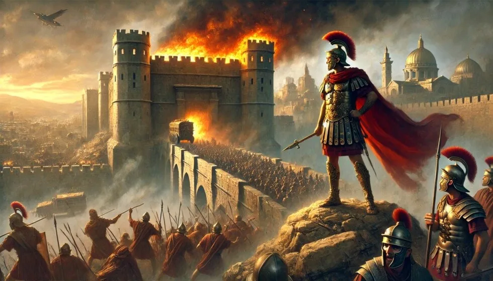
目录
词汇索引表(Index and Glossary)
A
B
C
D
E
F
G
H
I
L
M
N
O
P
S
T
U-Z
符号。
• ≥大于或等于。
• ≤小于或等于。
• ＜小于。
• ＞大于。
修订说明
本优化版基于英文原版*The Siege of Jerusalem Rulebook*(Avalon Hill)与中文翻译版《耶路撒冷之围_中文规则_大H校对版》逐条核对,修正而成。主要修订内容如下:
1. 补全整段省略的"历史背景":将原中文版仅标注的"略。"按英文原版全文译出,包括五个突击阶段的历史概述。2. 补全词汇索引表(Glossary-Index):英文原版开头有完整的A–Z术语索引,中文版未收录,本版按原文补译。3. 修正关键规则翻译错误:
• 18.36"重新获得控制"原文语义为犹太方可用轻步兵和已清理建筑格满足罗马控制条件,原译文"挑战罗马控制条件"及"除非"均错误,已按原文重译。
• 18.92"escape the beleaguered city"误译为"讨论被围城市",已改为"逃离被围困的城市"。
• 19.1交叉引用原文为18.7,中文版误作18.17,已改正。
4. 修正数值错误:
• 18.6征集补员表中"泰罗普城"漏印10%,已补全。
• 18.6示例中38个损失的算式误写为39×0.9,已改为38×0.9。
• 18.612区域限制中"泰罗普城"上限误为35,按英文原版页面对照表应为28,已改正。
5. 补全遗漏的关键例外与限定:
• 11.85侧翼攻击遗漏"(unless in an enemy ZOC)"例外,已补入。
• 18.33遗漏"on their perimeter(外围)"限定,已补入。
• 9.7强制目标遗漏"同格内其他单位仍是强制目标",已补入。
6. 修正编号错误:4.24误编为4.2;18.81误编为18.8,均已改正。7. 修正术语:Zealots统一为"奋锐党人";Garrison统一为"守备单位";Multiple Attack错别字"多充"改为"多重"。8. 修正错别字与语句:8.61,11.842,15.1,16.4,19.4等处的错字,重复段落,译者注残留及列表符号问题均已清理。
凡英文原版为扫描OCR,个别字符识别存疑之处,本版均通过渲染PDF原页图像进行了复核;无法从图像确认之处,仍保留英文术语并加注说明。
第1章 引言返回目录
耶路撒冷之围(SIEGE OF JERUSALEM)是一款模拟公元70年罗马围困耶路撒冷史诗战役的游戏。该游戏包含一个战役剧本(模拟围城战全过程)和一个入门剧本(模拟围城战之前的战斗)。在《The General》的第26卷第4期中提供的扩充剧本模拟了围城战的特定时期。下述评论对于游戏对局并不必要,但可以帮助对局者融入历史背景。如果历史背景对你无关紧要,请跳至规则第2节。
历史背景(HISTORICAL BACKGROUND)
罗马对耶路撒冷的围攻,是公元66年至72年犹太人大起义反抗罗马帝国的高潮,也是一场具有决定性意义的灾难性冲突。这场战争的后果影响深远:韦斯巴芗(Vespasian)集中兵力,得以在公元69年推翻罗马皇帝维特里乌斯(Vitellius),建立罗马历史上最显赫的弗拉维王朝(Flavian dynasty)。他登上皇位,结束了一场几乎爆发的灾难性内战。而这场战争在犹太地区的结果更为重大:耶路撒冷圣殿被毁,犹太人在以色列故土上名义上的独立宣告终结,这造成了犹太教的危机。圣殿献祭从此终止,但犹太教也因雅夫内(Yavneh)学院的建立而得以复兴——该学院由耶路撒冷逃难出来的拉比约哈南·本·扎凯(Rabbi Johanan ben Zakkai)于公元68年创立,汇聚了犹太地区最伟大的学者。在此后约60年间,他们大致将犹太教重整为今日的形式。
当时称为犹太(Judea)的罗马帝国行省爆发大起义,其根源在于犹太人对一系列罗马总督日益不公与贪婪行径的憎恶,也在于亚基帕二世(Agrippa II)——罗马人扶上犹太王位的以东人后裔中的最后一位——无力劝说罗马盟友为他的臣民主持公道。公元44年亚基帕一世去世时,其子亚基帕二世尚年幼,克劳狄乌斯皇帝遂将犹太地区直接交由罗马总督治理。首任总督提比略·亚历山大(Tiberius Alexander)为人正直,体恤民情,但此后继任者却愈发专制残暴:腓力斯(Felix),阿尔比努斯(Albinus,公元62–64年在任)和格西乌斯·弗洛鲁斯(Gessius Florus,公元64–66年在任),正是后者的横征暴敛将犹太逼入反叛。阿尔比努斯已经堕落,但弗洛鲁斯更是有过之而无不及,犹太史家约瑟福斯(Josephus)写道:相比之下,犹太人竟认为阿尔比努斯堪称正直。
罗马总督们在犹太地区的数座城市中安置希腊人与罗马人,包括凯撒利亚和撒玛利亚(示剑)。这些人仇恨犹太人,在频繁的社群冲突中总是站在同教的异教徒一边。这也助长了反叛的爆发。
另一个不稳定因素是国际局势。罗马的大敌帕提亚帝国(Parthian Empire)刚刚击退了来自罗马亚美尼亚行省的入侵。帕提亚人口中有大量犹太元素,其中包括由犹太王朝统治的小王国阿迪阿贝内(Adiabene)。犹太爱国党人希望,一旦起义爆发,帕提亚人会前来相助。
弗洛鲁斯的暴行包括对数支和平的犹太代表团进行屠杀,这些代表团本为申诉他的苛捐杂税而来。他在耶路撒冷对其中一支代表团的攻击,引发了公元66年6月8日那里的自发起义,弗洛鲁斯被逐出城,罗马守军退入安东尼亚城堡(Antonia Fortress)。亚基帕二世在圣殿中向耶路撒冷民众发表演说,呼吁克制,称罗马不可战胜,唯有弗洛鲁斯及其党羽才是犹太的敌人;他承诺向罗马申诉,要求召回并替换弗洛鲁斯,以阻止进一步的暴行和犹太人无望取胜的战争。民众被安抚下来,但弗洛鲁斯的上司,同样残暴的叙利亚总督凯斯提乌斯·加卢斯(Cestius Gallus)拒绝撤换他。意识到战争已不可避免,亚基帕离开了耶路撒冷。大多数人现在支持爱国党,即奋锐党人(Zealots)。公元66年6月19日,为皇帝尼禄在圣殿中献祭并缴纳贡金的仪式被中止,大起义正式开始。
约瑟福斯将奋锐党人描述为"对自由抱有不可侵犯的态度",他们现在掌握了起义的领导权。公元66年9月14日(犹太历提斯利月三日),耶路撒冷的罗马守军向奋锐党人投降。从此,耶路撒冷的文书不再按罗马皇帝在位年份纪年,并开始铸造铭刻着"以色列救赎元年"的钱币。
正当弗洛鲁斯的部队在耶路撒冷被击败,犹太诸城镇纷纷起来反抗罗马人之时,罗马士兵却在叙利亚,埃及和犹太沿海的希腊化城市中屠杀犹太公民。加卢斯率领来自安条克的罗马第十二军团进攻耶路撒冷,但他对城北城墙的攻击失败了;在随后的反击和他向海岸方向的惨败撤退中,加卢斯损失了5300名步兵,480名骑兵以及他的全部攻城器械。
耶路撒冷很快在奋锐党领袖以利以谢·本·雅尔(Eliezer ben Yair)和四位派系领袖的领导下,成立了一个温和的革命政府。他们迅速着手为不可避免的罗马入侵做准备。
皇帝尼禄派遣韦斯巴芗前去收复犹太地区。他集结了罗马最精锐的三个军团:来自希腊和埃及的马其顿第五军团(V Legion Macedonica),恺撒旧部弗拉维乌斯第十军团(X Legion Fretensis),以及阿波罗纳里斯第十五军团(XV Legion Apollonaris)。这支军队平定了犹太北部,即加利利地区。
公元68年,尼禄被废黜,随之而来的是一段混乱时期,加尔巴(Galba),奥托(Otho)和维特里乌斯相继在短时期内称帝。韦斯巴芗率领部分军队急速赶往罗马,于公元69年被拥立为皇帝。他留其子提图斯(Titus)指挥犹太境内的军队。在重建的第十二雷电军团(XII Legion Fulminata)增援下,提图斯向南进军耶路撒冷。
在此,让我们简要介绍耶路撒冷的防御工事。请参阅地图。耶路撒冷由以色列国王大卫于公元前10世纪建立在大卫城(Ophel)山丘上。考古证据显示,大卫城的坚固城墙西,东,南三面分别为泰罗普谷(Tyropean),汲沦谷(Kidron)和欣嫩谷(Hinnom)所环绕,三面向东西两侧倾斜延伸。
大卫之子所罗门王在城北建造了圣殿建筑群;此后历代君王不断向泰罗普谷对岸的锡安山扩张,形成了下城(Lower City)与上城(Upper City),其上方则是以仓库和市场为主的泰罗普城(Tyropean City)。到罗马时期,耶路撒冷四面皆为高墙深壑所环绕,唯有北面例外——那里有一道低矮城墙围起新城(New City),这是一片缺乏天然屏障的郊区。罗马人通过建造毗邻圣殿庭院的安东尼亚城堡来加强城防。圣殿庭院是一片垫高区域,四周环绕着坚固的城墙,内部以土填实,由所罗门王建造。在这片高地上矗立着第二圣殿,它是犹太教的中心,由以斯拉,尼希米和所罗巴伯在公元前约530年第一圣殿被巴比伦人摧毁后重建。城市行政中心是议会(Knesset),位于哈斯蒙尼王宫(Hasmonaean Palace)附近,该宫是马加比(或哈斯蒙尼)诸王的居所。城西是花园般的希律王宫(Herod's Palace),那是来自以东的罗马附庸王的豪华府邸;王宫以北是以雅法门(Yafo Gate)为核心的坚固城堡群。耶路撒冷的防御因缺乏统一,稳固的军事领导而复杂化——犹太士兵分裂为各派系,各奉其领袖。以利以谢·本·雅尔尽其所能统筹全局,但派系之间的敌对使协调十分困难。城池陷落后,他带领部分幸存者退守山地要塞马萨达(Masada),在那里继续抵抗罗马人两年多,最终也被攻陷。
若将提图斯的围攻按本游戏划分为五个突击阶段,其进程大致如下:
第一突击阶段:罗马人突破薄弱的北城墙,攻陷新城,并进入泰罗普城,但随后被击败,被迫撤退。
第二突击阶段:罗马人在雅法门受挫,但占领了泰罗普城,并开始修筑一道坡道,紧抵安东尼亚城堡东墙和圣殿区北墙。
第三突击阶段:罗马人攻占了安东尼亚城堡和圣殿山,双方均损失惨重。
第四突击阶段:罗马人席卷上城和下城。孤立的犹太单位仍在若干区域顽强抵抗。
第五突击阶段:有组织的犹太抵抗瓦解,但犹太单位仍坚守城堡三角区,雅法门和大卫城。在一切希望破灭后,以利以谢·本·雅尔率部分士卒突破罗马防线,抵达马萨达,在那里继续作战两年,抵御两万罗马军团士兵。围攻中的其他幸存者大多没有如此幸运:他们或死于罗马奴役,或在竞技场中为罗马人娱乐而与野兽搏斗至死。
第2章 游戏部件返回目录
本游戏包括以下配件:
• 1幅49 x 33英寸的全彩地图。
• 3张算子板。
• 1本16页的规则书。
• 2张8 x 11英寸的图表。
• 2颗6面骰。
请参考"词汇索引表"来学习不熟悉的术语。大部分粗体的术语都能在"词汇索引表"中找到。
2.1 地图:Avalon Hill公司的大多数游戏使用的都是装裱地图,而该游戏使用的则是纸质地图,需要展开平放。若能在地图上铺一层有机玻璃板则效果更佳。地图描绘的是公元70年的耶路撒冷。地图上的六角格用来规范移动和战斗。在本规则中,每个六角格都被称为格。每格代表了50米的直线距离。地形效果表(Terrain Effects Chart,简称TEC)中将会提供地图上各种地貌特征的详细解释,但不管怎么说,各种地貌特征一共被分为下列几种类型:
2.11 高架格(ELEVATED HEXES):城堡(Fortress),要塞(Fort),棱堡(Bastion),城墙(Wall),城门(Gate)和桥梁(Bridge)都被视为高架格。城堡和要塞在各方面都一样,除了城堡的缺口(Breach)和投射武器防御值(Missile Defense strength)比要塞更高,为了方便起见,在本规则中,城堡和要塞都被会称为城堡。而对于投石攻击(rock attacks)来说,城堡比棱堡更高,而棱堡比城墙更高。
2.12 地面格(GROUND HEXES):平地(Clear),庭院(Court),斜坡(Slope),坡道(Ramp)和缺口(Breach)都被视为地面格。
2.13 建筑格(BUILT-UP HEXES):建筑格代表有众多建筑的格。这些格的高度为地面高度,但不视为地面格,因其中的建筑会阻挡地面高度的LOF和ZOC。包含大型建筑的建筑格为大厦(Edifices),其格子的背景颜色为暗灰色。除了LOF,清除(Clearance,18.37)和近战防御(Melee defense)之外,大厦与建筑格特征完全一样。单位不能穿过大厦格射击。 [例外:圣殿主建筑(Main Temple Building),10.3]
2.14 网格坐标(GRID COORDINATES):有一套"字母-数字"网格坐标系统印在地图边缘,以便于定位特定的格子。南北地图边缘的字母标示要从左到右横向阅读。例如,大马士革门(Damascus Gate)在W行。而数字则要沿着格子纹路斜线阅读。例如,大马士革门(Damascus Gate)在36列。通过这样的坐标系统,就可以认定大马士革门在W36。其他例子:Yafo Gate在P51,Susa Gate在QQ36,Mariam Tower在P55。
2.15 勘误:QQ32格的格边应当为橙色(要塞),而非蓝色(棱堡)。
2.2 算子:代表参战单位的算子被称为单位(Unit)。而那些用来辅助游戏的算子则称为标记(Marker)。
2.3 正常/混乱(FRESH/DISRUPTED):战斗单位(Combat unit)的正面(彩色面)被称为为正常面。而另一面(白色)则称为混乱面。
2.4 兵种(CLASS):单位分成六大兵种:重步兵(Heavy Infantry),轻步兵(Light Infantry),骑兵(Cavalry),指挥部(HQ),攻城器(Siege Engines),攻城炮(Artillery,古罗马攻城所用投射机械的总称,包括弩炮、投石器、石弩、大锅等;不译为"炮兵",因古罗马尚无火药火炮,该词是现代概念)。HQ在移动和战斗时被视为步兵[例外:ZOC, 7.321];罗马HQ为重步兵,犹太人HQ为轻步兵。除攻城器[攻城塔(Tower),攻城锤(Ram),装甲攻城塔(Armored Tower)]以外的所有单位都被视为战斗单位(Combat unit)。这些兵种分类会进一步细分成特定类型。
2.41 重步兵(Heavy Infantry):一共有三种类型:精锐(Veteran),常规(Line),新兵(Recruit)。只有罗马有重步兵。
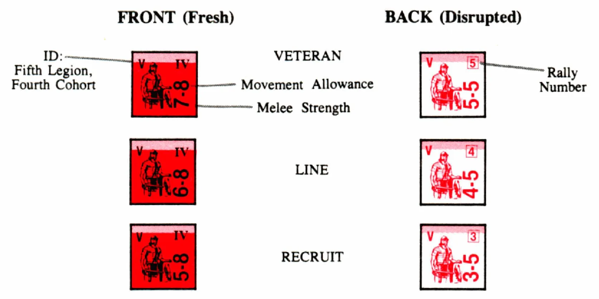
2.42 轻步兵(Light Infantry):一共有六种类型:轻装步兵(Velitae),盟邦军(Foederatti),叙利亚弓箭手(Syrian Archers),奋锐党人(Zealots),常备军(Regulars)和民兵(Militia)。
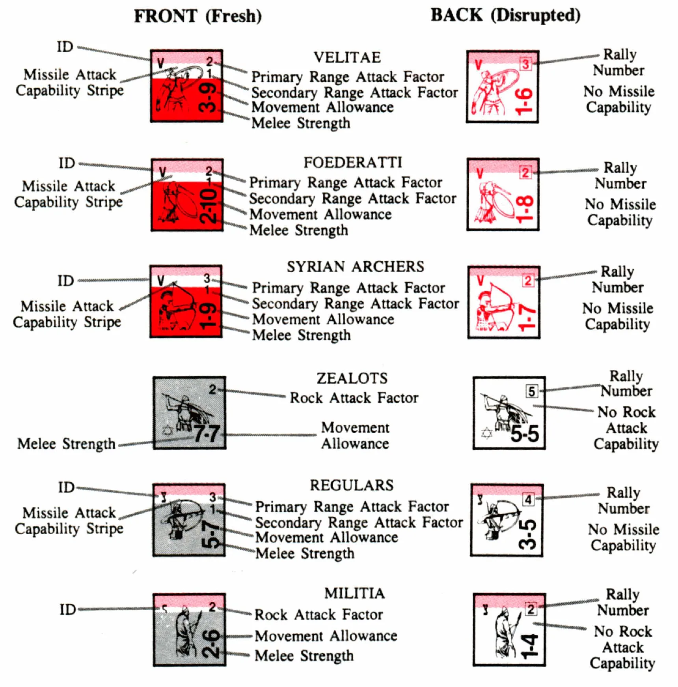
2.43 骑兵(Cavalry):只有罗马有骑兵。
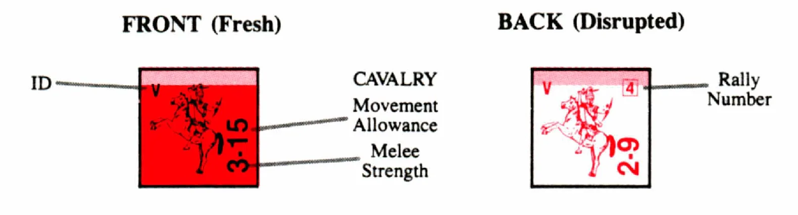
2.44 指挥部(HQ):双方都有用于控制一些或全部单位的单位。这些拥有军团或派系番号的单位是"指挥官"(Leader),它们只能控制与自身番号彩色条相同颜色的单位。而那些没有彩色条的单位是"司令官"(Commander),它们可以控制己方所有单位。
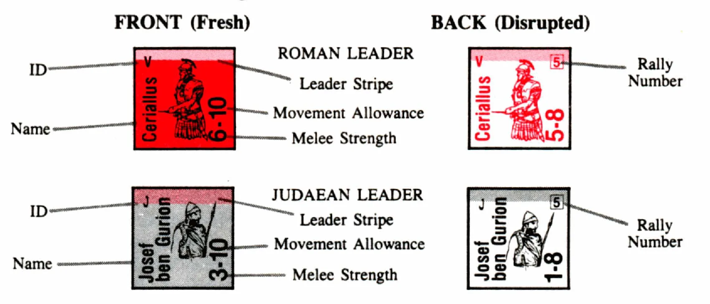
2.45 攻城器(Siege Engines):罗马有三种类型的攻城器:攻城塔(Tower),攻城锤(Ram)和装甲攻城塔(Armored Tower)。如果在移动阶段之初,攻城器下没有正常面的重步兵(Heavy Infantry)或轻装步兵(Velitae)存在,则该攻城器既不能移动也无法改变朝向,将它翻到白色面朝上作为提示。
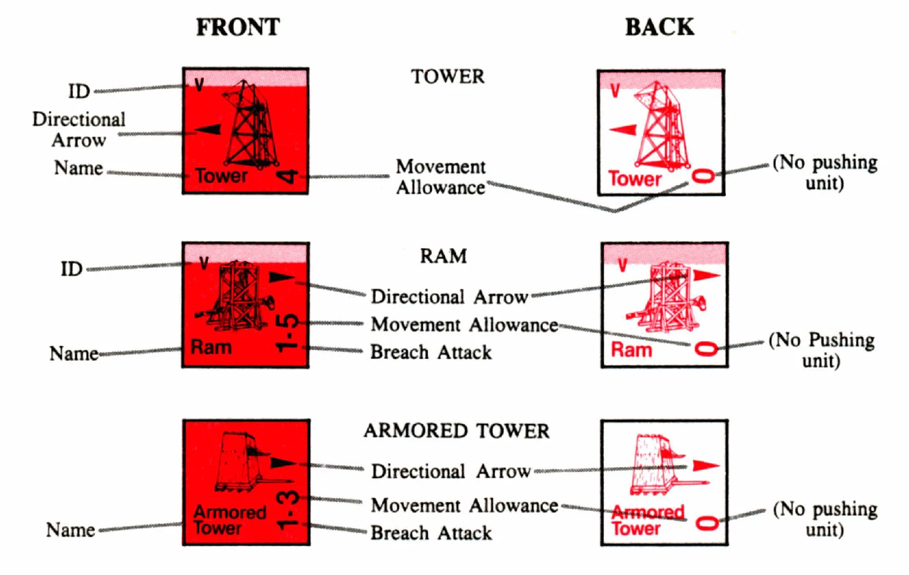
2.46 攻城炮(Artillery):一共有四种类型的攻城炮:弩炮(Ballistae),投石器(Onagers),石弩(Catapults),大锅(Cauldrons)。罗马人的攻城炮可以移动(无需其他单位推动)。犹太人的攻城炮(除了大锅)只有在切换突击阶段(Assault Periods)之间才能进行移动(见18)。罗马人的攻城炮必须在正常状态才能发射,在混乱面才能移动。白圈内的近战参数(Melee factors)只能用于防御,不能用于进攻。
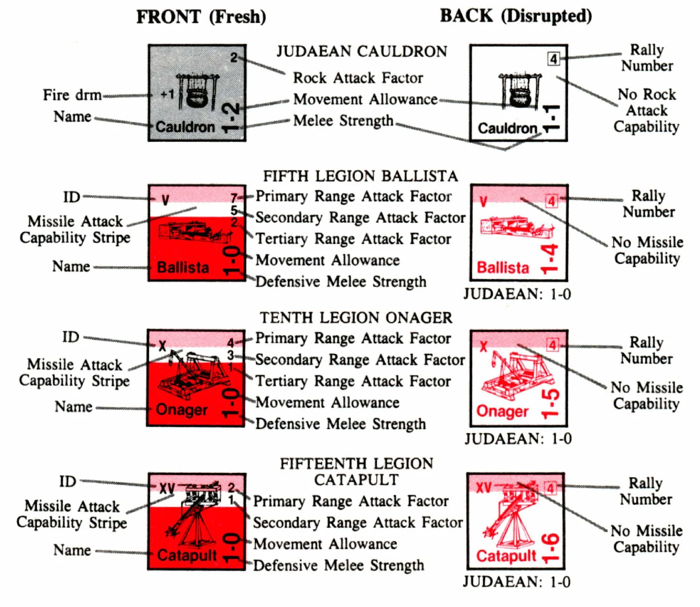
2.5 单位信息:每个单位上都有多个数字或符号参数。
2.51 单位番号:罗马单位的算子左上角用罗马数字来印刷所属的军团番号(今后简称ID),司令官(Commander)和装甲攻城塔(Armored Tower)除外。犹太人战斗单位的左上角用字母来印刷所属的派系番号。 [例外:Eliezer ben Yair,奋锐党人(Zealots),攻城炮(Artillery)。]这些符号还带有彩色条纹,以便于用来帮助识别。这些特定识别如下表所示。
| 彩色条 | 符号 | 军团/派系 |
|---|---|---|
| 棕色 | V | 第五军团,Legio Macedonica |
| 紫色 | X | 第十军团,Legio Fretensis |
| 黄色 | XII | 第十二军团,Legio Fulminata |
| 橙色 | XV | 第十五军团,Legio Apollinaris |
| 浅蓝色 | Y | Yonathan ben Levi部 |
| 浅绿色 | J | Josef ben Gurion部 |
| 蓝色 | E | Eliezer ben Shimon部 |
| 绿色 | S | Shimon ben Giora部 |
| 紫色 | TQ, HP, AF | 守备单位 |
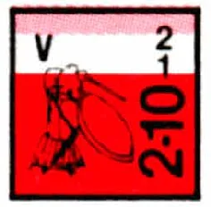
2.52 非近战攻击能力:能在射击阶段(Fire Phase)攻击多格以外目标的单位在正面(彩色面)有白色横条。射击攻击(Fire attacks)仅限于射击阶段,且只能由正常单位执行。射击阶段的攻击能力一共有三种类型:
2.521破墙(Breach):人力驱动的攻城锤(Rams)和人力驱动的装甲攻城塔(Armored Towers)(这些单位的正常面带有MF),可以使用破墙表(Breach Table)攻击高架格(但非高架格上的单位)。
2.522投射(Missile):所有带白色条的轻步兵单位(轻装步兵,盟邦军,叙利亚弓箭手,犹太常备军)和带白色条的攻城炮(Ballistae,投石器,石弩)具备投射攻击能力。这些单位可以使用投射表在各自射程内攻击战斗单位。见武器效果表(Weapons Effect Chart)。
2.523投石(Rocks):占据了高架格的大锅(Cauldrons),奋锐党人(Zealots)和民兵(Militia)可以使用投射表(Missile Table)攻击高度较低的(2.11)相邻格中的单位(见10.2)。
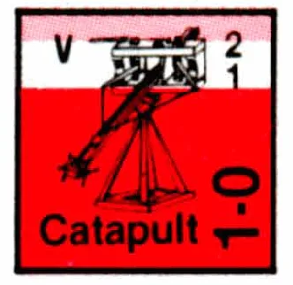
2.53 近战值(Melee Strength):近战值用于近战阶段(Melee Phase)中的攻击和防御。攻城炮算子的近战值印刷在白圈内,只能用来防御,所有混乱单位的近战值也都只能用于防御。攻城器没有近战值。攻城锤和装甲攻城塔上的"1"是其破墙攻击参数。
2.54 移动力MA:每个单位的移动能力用移动点数(以下称MF)计量。每个单位每进入一格就必须花费一定数量的MF。当某单位没有足够的MF剩余时,则它在移动阶段(Movement Phase,以下称MPh)中就不能再移动了,尽管它在近战阶段中仍然可以执行推进(Advance)或撤退(Retreat)。在TEC中有列明了每个格子进入时所需要花费的移动成本,根据进入格的地形和参与单位的类型而定。
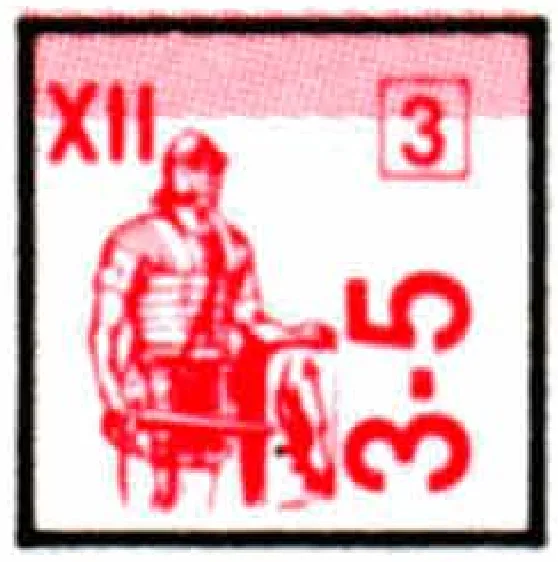
2.55 重整值(Rally Number):重整值印刷在战斗单位混乱面的右上角方框内。在重整阶段中,若是修正后的最终投骰结果小于或等于该数值,则该单位可以从混乱状态(Disrupted)转变为正常状态(Fresh),又或者从混乱状态(Disrupted)减轻至溃败状态(Rout)或恐慌状态(Panic)(见17.1)。
2.6 标记(Markers):以下算子用于记录各种战斗单位和格子的状态。
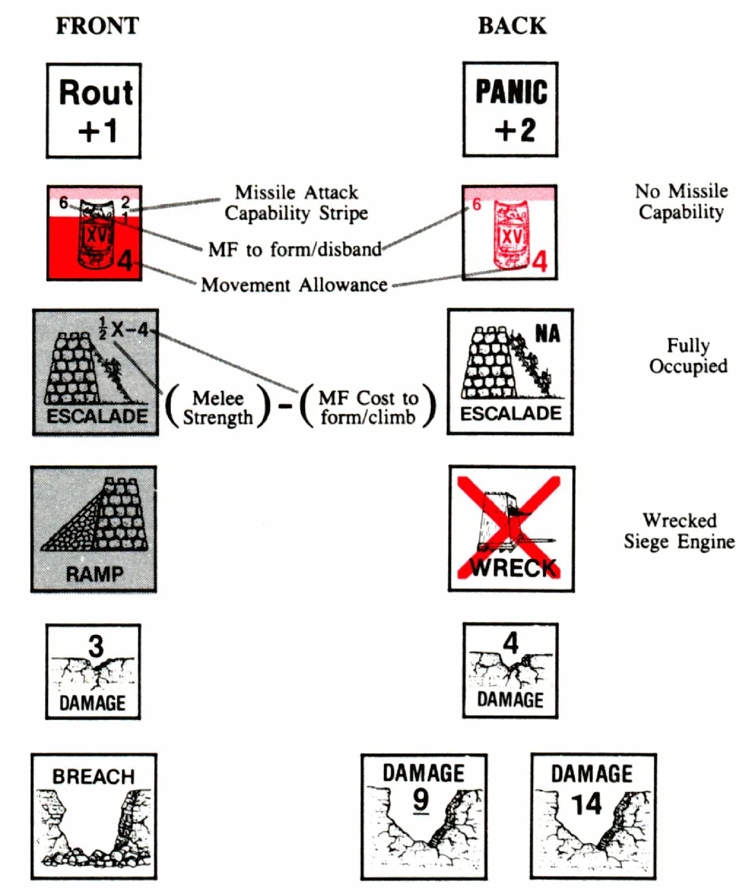
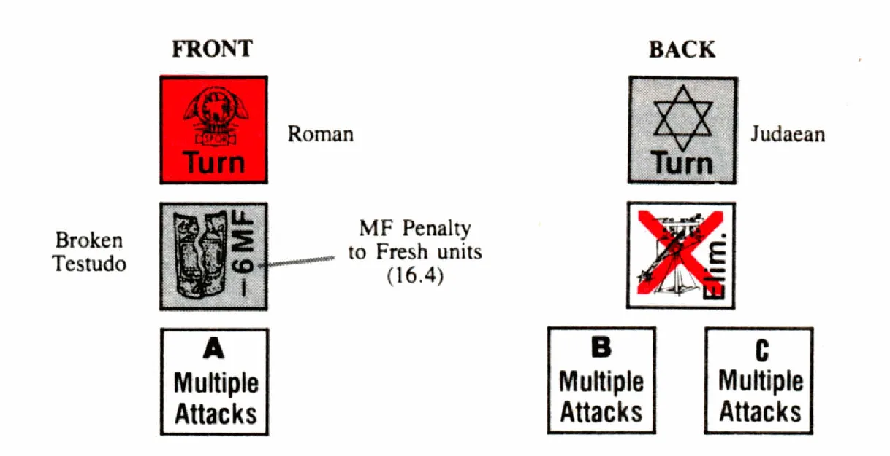
2.7 小数:除非特别注明,所有参数在减半时都不需要向上或向下取整。此外,所有小数保留并累积计算。
第3章 对局准备返回目录
3.1 剧本:玩家选出一个剧本,并且决定各自的扮演方。按照剧本规定进行单位的初始配置。
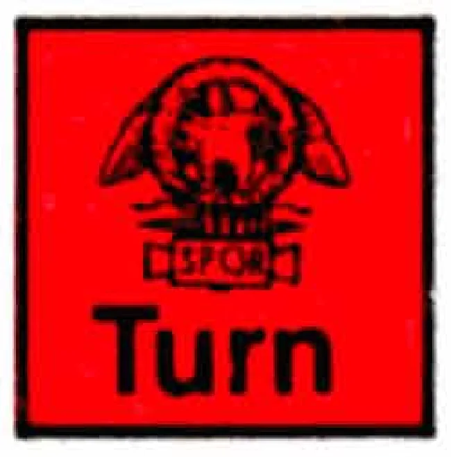
3.2 回合记录条:回合标记放在回合记录条上的第一个空格内,罗马鹰面朝上。
3.3 地图外设置:若是罗马方决定在一个突击阶段开始时,让其军团从地图外出发的话,那么他必须记录下该军团的番号,抵达地图的回合,以及进入的地图的边缘(东南西北)。一旦记录完了,罗马方就不能改变这一设定,必须按该记录严格执行。一个军团中的所有单位可以从同一格中进入地图(无需额外成本),也可以从该地图边缘的多个格子内分别进入。但是,在进入地图后的第一个移动阶段(MPh)结束时,该军团的所有单位都必须在其HQ的10格范围以内。在任何情况下,地图外的单位都不能攻击或被攻击。
3.4 地图内设置:罗马攻城炮可以设置成任意状态:正常状态或混乱状态(可移动)皆可。步兵(Infantry)可以设置成龟盾(Testudo)阵型。
第4章 游戏流程返回目录
4.1 罗马方回合(Roman Turn):每个罗马方回合包括下列四个阶段,按下文顺序依次执行。
4.11 罗马重整阶段(Roman Rally Phase):罗马方必须尝试重整其混乱的(Disrupted)非攻城炮单位,对这些单位每个分别投骰一次。若是(修正后的)最终投骰结果小于或等于该单位的重整值的话,那么将该单位反面至正常面,除非该单位是溃败状态(Routed)或恐慌状态(Panicked)。溃败状态的单位移除溃败标记但保持混乱状态。恐慌状态的单位则将其恐慌标记翻到溃败面。
4.12 射击阶段(Fire Phase):正常状态(Fresh)的犹太投射/攻城炮/投石单位(Missile/Artillery/Rock)可以使用投射表(Missile Table)对敌方战斗单位进行射击。在所有犹太射击结算之后,罗马方可以使用正常状态的由人力驱动的攻城锤(包括那些装甲攻城塔本身固有的攻城锤)基于破墙表(Breach Table)来攻击高架格(Elevated Hexes),此时正常状态的罗马投射/攻城炮单位(Missile/Artillery)也可以使用投射表向敌方战斗单位进行射击。
4.13 罗马移动阶段(Roman Movement Phase):未恐慌的罗马单位可以移动,受移动,地形和ZOC规则限制。溃败单位必须向避难所(Refuge)进行移动。当所有非恐慌单位结束移动后,恐慌的罗马单位必须向避难所(Refuge)进行移动。
4.14 罗马近战阶段(Roman Melee Phase):符合要求的正常罗马战斗单位可以与相邻的犹太单位进行近战。
4.2 犹太方回合(Judaean Turn):将回合标记翻到大卫之星(Star of David)那面。每个犹太方回合也同样包含了四个阶段。以下四个阶段与罗马方回合中对应阶段(4.11-4.14)的规则相同,此处已完整列出,不再省略,方便随时查阅。
4.21 犹太重整阶段(Judaean Rally Phase):犹太方投骰激活可用的预备队(Reserves)并将他们放置在地图上。然后犹太方必须尝试重整其混乱的(Disrupted)非攻城炮单位,对这些单位每个分别投骰一次。若是(修正后的)最终投骰结果小于或等于该单位的重整值的话,那么将该单位反面至正常面,除非该单位是溃败状态(Routed)或恐慌状态(Panicked)。溃败状态的单位移除溃败标记但保持混乱状态。恐慌状态的单位则将其恐慌标记翻到溃败面。
4.22 射击阶段(Fire Phase):本阶段与4.12相同,但执行顺序相反——罗马方先进行射击和破墙攻击,犹太方随后再进行射击。具体为:首先,正常状态的由人力驱动的罗马攻城锤(包括那些装甲攻城塔本身固有的攻城锤)可以基于破墙表(Breach Table)来攻击高架格(Elevated Hexes),此时正常状态的罗马投射/攻城炮单位(Missile/Artillery)也可以使用投射表向敌方战斗单位进行射击。在所有罗马射击结算之后,正常状态(Fresh)的犹太投射/攻城炮/投石单位(Missile/Artillery/Rock)可以使用投射表(Missile Table)对敌方战斗单位进行射击。
4.23 犹太移动阶段(MPh):未恐慌的犹太单位可以移动,受移动,地形和ZOC规则限制。溃败单位必须向避难所(Refuge)进行移动(17.21)。当所有非恐慌单位结束移动后,恐慌的犹太单位必须向避难所(Refuge)进行移动。
4.24 犹太近战阶段(Judaean Melee Phase):符合要求的正常犹太战斗单位可以与相邻的罗马单位进行近战。
4.3 时间记录条(Time Record Chart):将回合标记翻到罗马鹰(Roman Eagle)那面并在回合记录条上前进一格。重复4.1-4.3,直到该突击阶段(Assault Period)结束为止。
第5章 指挥控制(CC)返回目录
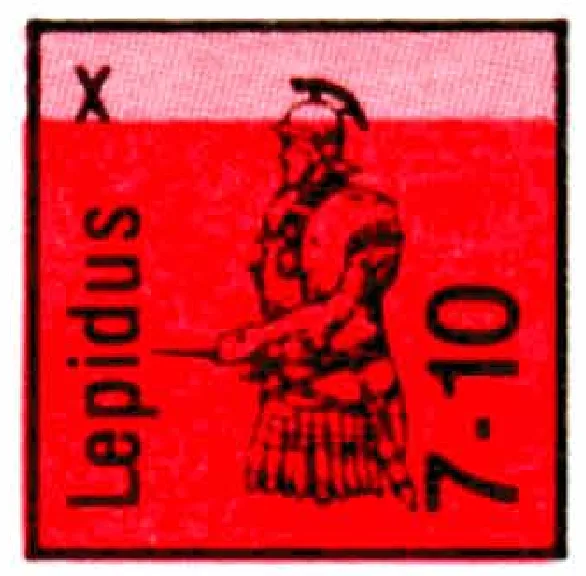
5.1 范围:指挥控制(Command Control,以下简称CC)是HQ指挥下属单位的能力。每个HQ的CC范围为10格。在每个阶段(Phase)开始时判定CC(但见11.9)。当前阶段开始时处于CC范围内的单位,若是在本阶段内移出了CC范围,则在此阶段内不会受到惩罚。
5.11 CC范围下降:非正常状态HQ的CC会减少2格。夜间回合所有CC范围都会减少2格。这些效果是累积的,因此混乱状态HQ在夜间回合的CC将减少到只有6格。
5.12 重整(Rally):重整不需要在CC中进行,但不在CC的需重整单位要承受+1 drm的惩罚。
5.2 追溯CC:CC追溯从HQ(不计算HQ自身所在格)到下属单位(计算下属单位所在格)。CC追溯路线中的每一个格子都必须是该HQ可以移动通过的格子。
示例：在城墙上的一个犹太单位遭到了唯一相邻并相连接的高架格中的罗马战斗单位的侧翼攻击,则该单位不能再追溯CC了。这是因为罗马单位占据了其HQ唯一可以进入的的格子。而该单位又不能直接从城墙移动到相邻的平地或斜坡格,所以不能再追溯CC了。
5.3 惩罚:在当前阶段开始时不能追溯CC的单位不能进入敌方ZOC,也不能移动到与敌方单位占据的高架格相邻的格。它们可以离开敌方ZOC,但是离开时不能进入另一个敌方ZOC中。如果这样的单位与同一高度敌方单位相邻,可以正常进行近战(包括战斗后推进进入另一敌方单位的ZOC,见11.9)。在射击阶段,无CC的单位只能进攻相邻目标。无CC的单位不能放置云梯(Escalades)或组建/解除龟盾(Testudo),并且在重整阶段中会承受drm惩罚。这样的单位可以进行正常防御。
5.4 指挥官(Leader):指挥官只控制其下属军团或派系(Legion/Faction)的单位。每个军团或派系的番号有与对应指挥官颜色相同的彩色条纹。 [例外:奋锐党人(Zealots),大锅(Cauldrons)和攻城炮(Artillery)可以由任何一个犹太HQ控制。装甲攻城塔(Armored Towers)可以由任何一个罗马HQ控制。]
5.5 司令官(Commander):司令官(Titus, Gallus, Tiberius Alexander,和Eliezer Ben Yair)可以控制己方任意单位。指挥官无需追溯CC到其司令官。
5.6 自动CC:在圣殿区域的任意格内(包括圣殿区域的外墙)或未破墙的城堡(Fortress)内的犹太单位,无论其是否与HQ相近,均自动处于CC状态。在高架格的犹太单位,只要能沿未破墙的高架格追溯一条能避开罗马单位(或其ZOC)的路径到达己方控制的城堡(无论距离多远),就能被视为是处于CC中。守备单位(Garrison)总是处于CC状态。
第6章 堆叠与单位的互动返回目录
大多数堆叠限制可以在移动阶段内暂时突破,但是在每个阶段结束时必须遵守。在每个阶段结束时,每个格子里所能允许的单位数量列在TEC上。在计算堆叠限制时,攻城炮,HQ和攻城器不算在内,但通常情况下,这些单位在每个格子内只允许存在每种各一个。
示例：一个平地格(Clear)可以包含三个罗马步兵,一个攻城炮,和一个HQ。而一个棱堡格(Bastion)内则可以容纳两个步兵,一个攻城炮,和一个HQ。
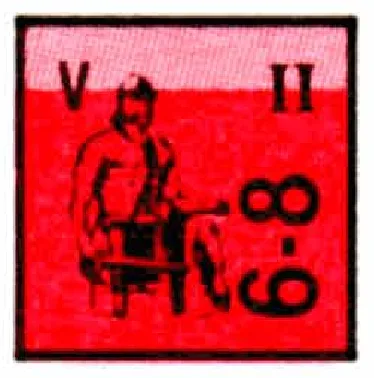
6.1 步兵:步兵不能进入一个包含了骑兵或龟盾的格,除非进入是为了加入龟盾。只有军团士兵(Legionaire),轻装步兵(Velitae),和HQ可以加入龟盾。盟邦军(Foederatti)和叙利亚弓箭手(Syrian Archers)在相互堆叠时,或它们与重步兵堆叠时,需要承受惩罚(见11.1和13.3)。
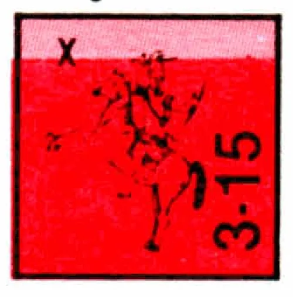
6.2 骑兵:骑兵绝对不可能进入一个高架格,也不能进入一个被其他类型单位(HQ除外)所占据的格子。 [例外:骑兵可以穿越被其他罗马单位所控制的城门(Gate)或桥梁(Bridge)格,但不能停留在这些格子上。]
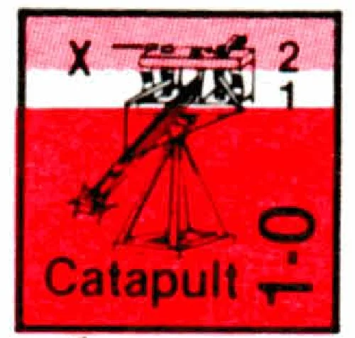
6.3 攻城炮:攻城炮不能进入一个被攻城器,龟盾,云梯,骑兵或其他攻城炮所占据的格。[例外:城堡可以容纳2个攻城炮单位,但条件是其中一个(也只能有一个)是大锅。只有当城堡格内没有大锅时,大锅才能进入包含攻城炮的格子。装甲攻城塔可以运输一个石弩,6.43。]
6.4 攻城器:在攻城器格内的所有战斗单位都必须推动(或乘载)该攻城器。在攻城器下面的所有单位表示推动,在攻城器上面的所有单位表示乘载。一个攻城器下最多能有2个重步兵单位和/或轻装步兵单位(外加上1个HQ)。攻城器不能进入一个有单位占据的格子[例外:攻城锤可以通过一个被罗马单位占据或控制的城门格,但不能停留在该格上。]攻城器不能进入高架格,除非那时有攻城锤在通过城门。只有当攻城器的推动者少于2个单位时,步兵才能进入并通过该攻城器所在格。在一个突击阶段开始时,攻城器可以被放置在由罗马所控制的城市区域内。犹太方只能从地面高度进入攻城器所在格(11.4)。
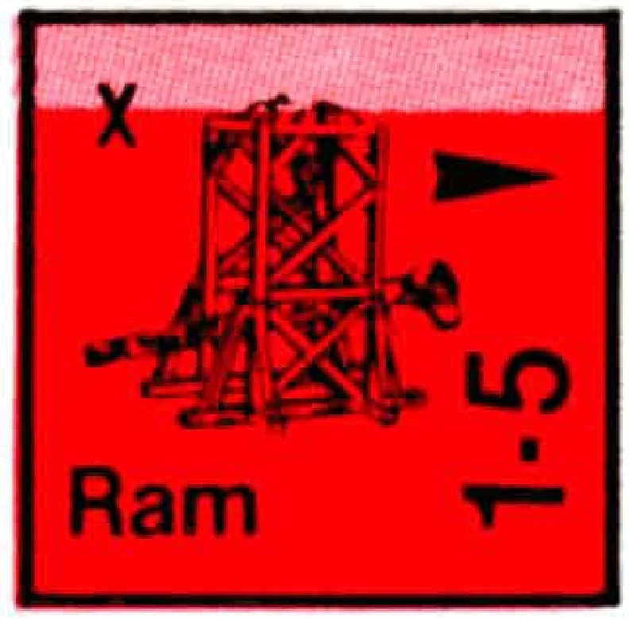
6.41 攻城锤(Ram):为了能在射击阶段中实施攻击,攻城锤必须有1个隶属于同一个军团的正常单位负责推动。攻城锤不能承载人员。
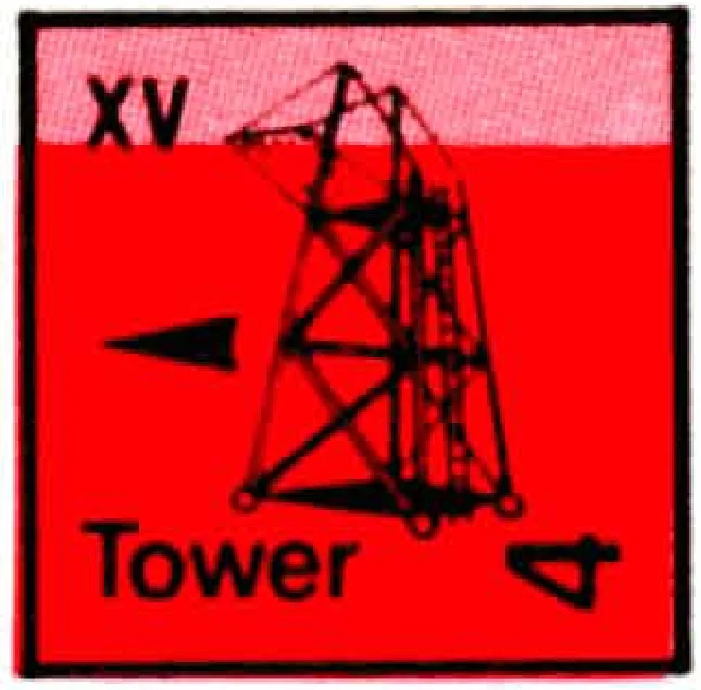
6.42 攻城塔(Siege Tower):只有隶属于同一个军团的单位可以推动或爬上无装甲的攻城塔。一个攻城塔上最多只能容纳1个步兵单位加1个HQ。
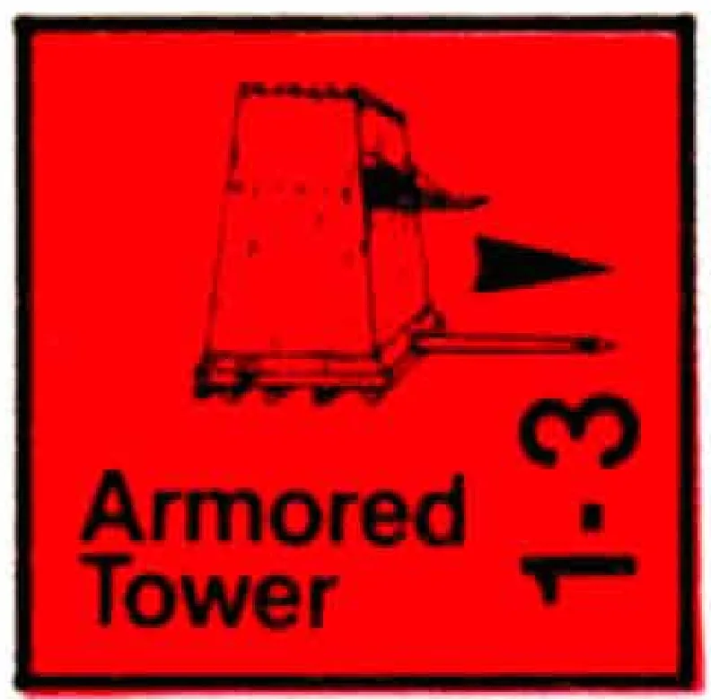
6.43 装甲攻城塔(Armored Tower):装甲攻城塔上还可以装载1个石弩(Catapult)(因此可以每回合移动并射击),前提是必须从突击阶段开始时就已经这样了。石弩在整个突击阶段内都必须保持原位。当它处于混乱状态时无需撤退。1个步兵单位和1个HQ仍然可以爬上攻城塔,而丝毫不影响石弩的射击。
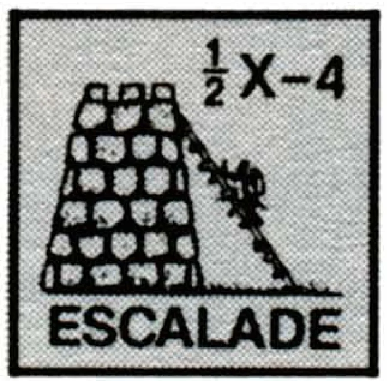
6.5 云梯(Escalade):1个正常重步兵或正常轻装步兵单位可以在移动阶段内花费4MF,放置一个云梯标记,并充当"基座"单位(固定云梯的人)。1个云梯上最多能有2个单位(外加1个HQ)攀爬城墙。如果有龟盾占据此格,或者有重步兵,轻装步兵,HQ以外单位占据所在格,则此格内不能架设云梯。若是云梯所在格的基座单位和攀爬单位已经客满,则其他单位不能进入该格内。犹太单位绝对不可能进入云梯格(又见8.7)。
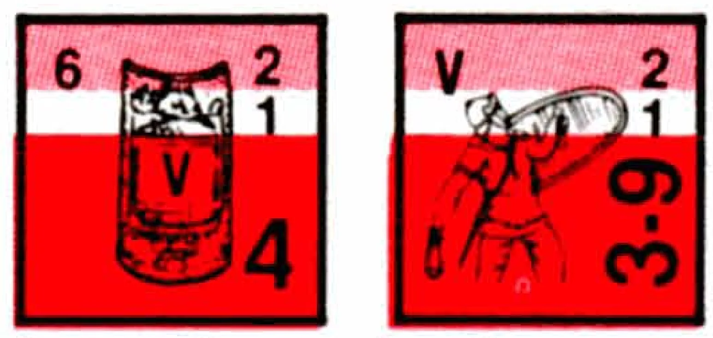
6.6 龟盾:在移动阶段花费6MF,可以放置龟盾标记在2或3个正常重步兵单位上。带轻装步兵的龟盾标记可以放在有2个正常重步兵单位及1个正常轻装步兵单位上。一个龟盾阵中可以堆叠1个HQ(无论是否正常)。不同军团的单位不能组成龟盾。
6.61 移动:龟盾不能进入有单位占据的格子,也不能进入高架格,除非是通过由罗马方占据或控制的城门,但他们不能停留在城门格上。正常单位若要进入龟盾所在格(即使是在撤退中),则必须加入龟盾。只有轻装步兵,重步兵和HQ可以加入龟盾。混乱单位不能进入龟盾所在格。 [例外:混乱的HQ可以加入龟盾,前提是该HQ没有陷入恐慌。]龟盾不能进入建筑格(即使通过道路)。龟盾的移动力始终是4MF,无论其中是否包含了混乱单位(又见8.8)。
6.7 派系/军团建制完整性:在任何阶段结束时,若是有不同军团/派系的单位堆叠在一起的话,则要承受近战drm惩罚。[例外:奋锐党人,守备单位,大锅和犹太攻城炮,可以与任何犹太单位堆叠在一起而不受惩罚;罗马装甲攻城塔可以与任何罗马单位堆叠在一起而不受惩罚。]见近战表的drm。
示例：3个犹太常备军(Regular),1个大锅(Cauldron),Yair和1个石弩(Catapult)在一个犹太移动阶段开始时占据Mariam Tower城堡。无限数量的犹太人步兵单位和HQ可以通过城堡。事实上,移动的犹太步兵单位完全可以停留在城堡上,暂时超出堆叠上限,只要在移动阶段结束前将该格内的那些尚未移动的单位走出该格来恢复堆叠上限即可。然而,希望通过城堡的大锅却不能这么做,因为这样会违反规则6.3的限制。但是,如果原先占据城堡的大锅移出的话,那么在此之后其他大锅就可以通过该格(见8.13)。
第7章 区域控制(ZOC)返回目录
7.1 有ZOC的单位:一些单位能对特定的相邻格实施控制区域(Zones of Control,简称ZOC),这会影响到CC的追溯,敌方单位的移动和撤退。这些规则如下。
7.11 地面:占据地面格或建筑格的正常步兵或正常骑兵单位可以向相邻的地面格施加ZOC,但是相邻的建筑/大厦格不会受到影响。
7.12 城门:占据城门格的正常步兵单位能向所有相连接的高架格,以及进出口格边相连接的两个相邻地面格施加ZOC。"相连接"高架格指该格高架地形通过同一格边延伸到相邻格。
7.13 高架格:占据了非城门高架格的正常步兵单位能向所有相连接的高架格施加ZOC。ZOC不能在攻城塔或云梯/坡道和任何高架格之间施加。
7.2 无ZOC:下列单位不会实施ZOC:
• 混乱单位。
• 攻城炮,攻城器,龟盾。
• 与攻城器或云梯在同一格内的罗马单位。
• 夜间回合内的所有单位。
• 地面格的单位不能向高架格内施加ZOC,反之亦然。
• 单位不能向建筑格或大厦格施加ZOC(即使通过道路也不行)。
7.3 效果:ZOC能阻止或迟滞敌方单位的移动。
7.31 强ZOC:步兵,攻城炮,和攻城器必须在进入敌方ZOC时停止移动,且在该移动阶段内不能再移动。
7.311强ZOC退出:移动阶段开始时处于敌方ZOC内的步兵,攻城炮及人力推动的攻城器,可以离开该ZOC,但其退出进入的第一个格子必须无敌方ZOC。这些单位可以在同一个移动阶段再次进入同一个敌方单位或不同敌方单位的ZOC,但他们必须根据7.31规则停止移动。 [例外:移动阶段开始时处于敌方重步兵地面ZOC内的非HQ犹太单位在该移动阶段内不能移动。]
7.32 弱ZOC:骑兵/HQ在进入敌方ZOC时不需要停止移动。这些单位可以继续移动,但离开该敌方ZOC时需要额外花费3MF。若有足够MF,骑兵/HQ完全可以从敌方单位的身边跑过(即便是通过敌方多个单位之间的重叠ZOC)。
7.321弱ZOC退出:在移动阶段开始时处于敌方ZOC中的骑兵/HQ,若是其移动的第一格内无敌方ZOC,则可以不花费任何额外移动成本就离开该ZOC。然而,他也可以从一个敌方ZOC内直接移至另一个敌方ZOC内,但需要根据7.32规则花费额外MF。
7.4 重叠ZOC:重叠的敌方ZOC不增加骑兵/HQ通过的MF成本。需要额外花费的移动成本按照格数计算,而不考虑该格内有多少施加ZOC的敌方单位数量。
7.5 撤退效果:战斗后撤退发生在敌方的近战攻击后承受了负面结果之时。撤退单位不能进入敌方ZOC中。若是撤退的唯一路径就是进入敌方ZOC(即便是该ZOC中有友军单位占据),则撤退单位被消灭。
第8章 移动返回目录
8.1 机制:玩家在自己回合的移动阶段中,可以移动任意数量的友军单位——移动全部,部分或完全不移动。[例外:移动阶段开始时就处于敌方重步兵地面ZOC内的犹太人非HQ单位不允许移动。溃败或恐慌的单位必须朝避难所(Refuge)方向移动。]玩家在移动恐慌单位之前必须先将所有其他单位的移动全部完成。然后,玩家才能将所有恐慌单位向避难所移动(15.4)。
8.11 MF花费:每个单位从所在格移动到相邻格;不能跳格,也不能进入有敌方战斗单位的格子。单位进入格子时需要花费一定数量的MF点数,这个移动成本基于进入格的地形而有所不同(详见TEC)。单位若是缺少足够的MF,就不能在移动阶段内进入那个格子中。除此之外,一个单位可以在其移动力的限制内,向任意方向或任意几个方向的组合,通过任意数量的格子。
8.12 MF点数:MF点数不能互相转移,也不能累计到下一个回合。单位的移动力每回合都可以使用一次,然后再后续回合可以再次重新使用。
8.13 友军单位:移动通过其他友军单位需要遵守特定单位类型的堆叠限制(见6)。但是一般来说,只要移动阶段结束时不超堆叠限制,单位就能够以双倍的移动费用通过一个满堆叠的格。步兵单位已经达到堆叠上限的格子仍然可以进入1个HQ或大锅,此时不会被视为"满堆叠",但对于想要进入此格的其他单位来说就会被视为"满堆叠"。
8.14 退出地图:单位可以像进入平地格一样离开地图。已经离开地图的罗马单位要到下一个突击阶段时才能返回。而犹太单位一旦离开地图则永远不能返回。
8.2 停止:一旦另一单位开始移动,则此前单位在当前移动阶段内的移动完全结束,即使该单位有剩余MF。
8.3 堆叠移动:龟盾移动时,龟盾内的每个单位都必须作为龟盾的一部分,以龟盾移动速度来进行整体移动。攻城器移动时,攻城器本身以及其推动/乘载单位将作为一个堆叠来移动,只要在移动阶段开始时有合适类型的正常步兵单位推动即可。攻城器,推动单位,和伴随的HQ(以及攻城塔上的所有单位)将作为一个整体,以相同的速度同时移动。
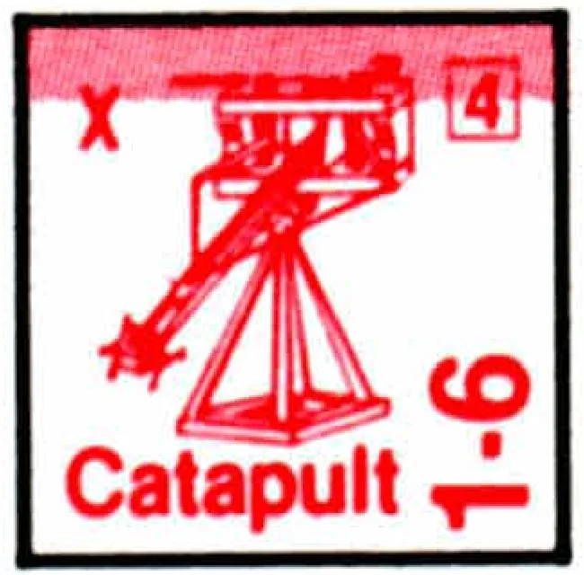
8.4 攻城炮:突击阶段开始时在地面格的罗马攻城炮不能进入高架格。[例外:可以通过城门或桥梁格,但不能停留。]突击阶段开始时在高架格上的罗马攻城炮在本突击阶段内不能移动。犹太攻城炮只能待在高架格内。
除了大锅和装甲攻城塔石弩以外,正常攻城炮不能在移动阶段内进行移动。罗马攻城炮必须翻到混乱面才能移动[例外:装甲攻城塔上的石弩],这样的设定是为了反映在运输过程中攻城炮将变得极为脆弱。混乱面的移动攻城炮在重整之后才能进行射击。除了大锅以外的犹太人攻城炮在整个突击阶段内都不能移动。大锅只能在高架格之间移动。安装在装甲攻城塔上的石弩不能脱离装甲攻城塔,因此无需撤退。即使它混乱了,也仍然被安装在装甲攻城塔上。
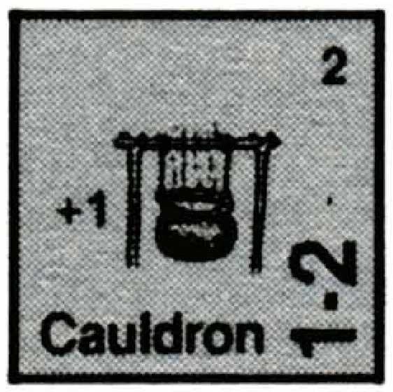
8.5 大锅:大锅无需推动单位即可移动,无论正常或混乱即可移动,但不能进入地面格,也不能进入一个包含了其他攻城炮的非城堡格。
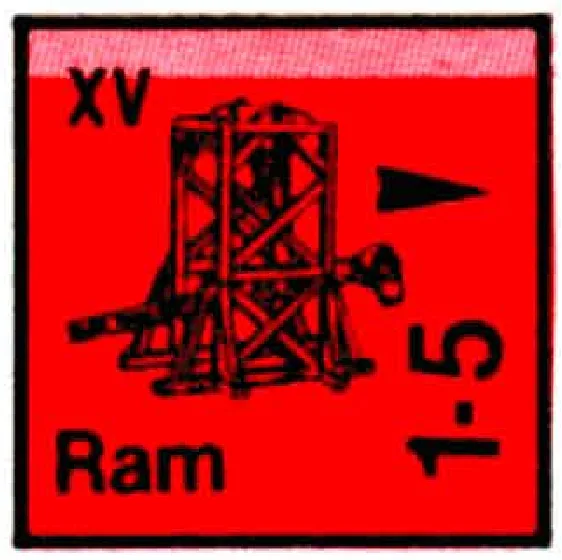
8.6 攻城器:军团下属的攻城器,若要移动的话,需要在移动阶段开始时,有一个同军团的正常的重步兵或轻装步兵单位负责推动才行。装甲攻城塔可以由任意军团的单位推动。如果攻城塔的推动单位尚未满堆叠的话,那么步兵就可以移动进入或通过攻城塔的所在格,且还可以使用攻城塔通过坡道(箭头)格边移动到高架格内。在攻城器的当前所在格改变朝向无需花费移动力,但需要移动阶段开始时就有一个正常的推动单位才行。
8.61 攻城器上的移动:在涉及到MF费用时,将攻城塔视为可移动的楼梯(8.93)。当单位进入攻城塔格,无论是移动到攻城塔上或是停留在塔下作为推动单位,这些单位需要花费的MF点数都是该格其他地形的MF成本。攀爬到攻城塔上无需额外的费用。攻城塔上的步兵移动到相邻的高架格上,需要花费2MF,然后其他单位可以移动进入攻城塔格,花费通常的进入MF成本。本回合内,攻城塔每花费1点MF,则已经在攻城塔上的单位,以及正要爬到塔上的单位(还有在下方推动攻城塔的单位),每个单位就要花费2MF,即便攻城塔移动时该单位还不在塔上。在每个移动过的攻城塔上临时放置对应的损伤数字标记,以表示进入该塔所需要花费的额外MF成本。在移动阶段结束时移除该标记。一旦有单位从塔上移动到高架格上,则本回合内该攻城塔就不能再移动或改变朝向了。
示例：一个攻城塔被推动了2个平地格。因此要在该塔上临时放置一个"4"标记,此时若是有任何新单位要进入攻城塔并爬到塔上,那么除了正常的进入成本外,还需要额外花费4点MF。
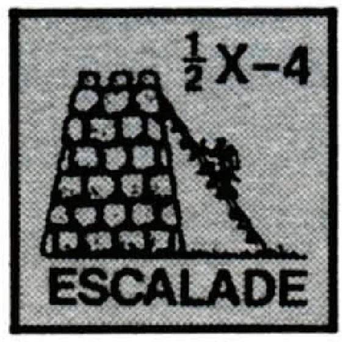
8.7 云梯(Escalade):与高架格相邻的正常重步兵或正常轻装步兵可以花费4点MF,在该单位身上放置一个云梯标记,并将他指派成为一个"基座"单位(Base)。每个格子里只能指定一个基座单位。基座单位是用来固定云梯的扶梯人,以便于使其他单位在本罗马移动阶段内,或之后的罗马移动阶段内尝试攀爬城墙。云梯标记下的单位不能移动。正常单位可以花费4MF主动移除云梯标记,且该移除只能在云梯上当前没有单位的情况下才能执行。基座单位若是混乱或被消灭,则自动失去云梯。云梯的存在不能没有正常基座单位。云梯格内,若是云梯上和云梯下的单位尚未满堆叠的话,则步兵可以移动进入或通过云梯。云梯下面最多只能有1个正常重步兵或轻装步兵(外加1个HQ)。云梯上面最多只能有2个单位(外加1个HQ)。单位可以通过花费4MF加上该格的正常进入成本来移动到云梯上。正常步兵可以花费2MF,从云梯格上移动到相邻的高架格内。通过云梯登城的单位不能从一架云梯上侧移到另一架云梯上。高架格上的罗马单位可以花费2MF移动到现有云梯上。当一个单位从云梯上移动到地面高度,或一个云梯上的单位被迫撤退时,离开云梯本身是无需移动成本的,你只需要花费进入相邻格的正常进入成本即可。在每个阶段(Phase)中,一架云梯最多只能有2个单位使用。当一个阶段内有两个单位使用云梯后,将云梯标记翻到满载面,并在该阶段结束时翻回来。
云梯标记及其上面的单位被视为同时攀爬所有相邻高架格。例如,同一云梯上两个攀爬单位可以进攻不同高架格。又或者,一个使用云梯的单位进攻一个格子,如果战斗后没有推进到该格内,则可以根据规则11.6,在近战阶段结束时推进到另一个空闲的高架格内。类似的,云梯上的单位也可以被所有相邻高架格上的犹太单位进攻。
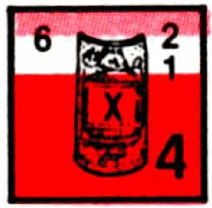
8.8 龟盾:龟盾阵的移动力为4 MF。阵内有混乱单位不会影响龟盾的移动力。HQ,正常重步兵或正常轻装步兵可以在龟盾移动之前或移动之后进入龟盾,花费6 MF。但若是在移动之前进入的话,则该龟盾在本移动阶段内不能移动。任何在龟盾解散前就离开龟盾的单位必须在当前回合损失一半移动力。2个正常重步兵可以花费6MF宣布组成龟盾,在堆叠上放置一个合适的龟盾标记(在本移动阶段内要离开龟盾的单位只有1 MF——除非那个组成单位在组成龟盾之前已经花费1点或2点MF了)。相反地,本移动阶段内还没有移动的龟盾可以花费6MF解散成为正常的组成单位。混乱的组成单位不会受到惩罚。
8.9 特殊地形效果:下列几种地形有特殊规则:
8.91 城门(Gate):在地面高度进入或离开城门仅限于通过有棕色车辙符号或相连道路的两条进入格的格边(如:Susa Gate的RR35和PP37)。单位可以从地面高度进入城门格,但必须是己方控制城门,或者从固有内部楼梯走(例外:突围反击:11.14)。地面高度的单位不能停留在城门格,除非他们花费2 MF,从城门格内的固有内部楼梯进入高架格高度。同样的,在城门高架格上的单位也可以花费2 MF的高度变化费用并移动到城门入口格。所有城门都自带固有内部楼梯。无论是否有军队占据,城门对于所有敌方单位关闭,且只能从相邻的高架格,攻城塔,坡道,缺口,云梯或固有内部楼梯的入口处夺取。
8.92 庭院(Court):圣殿区内的所有平地格为庭院格。禁止从地面高度通过圣殿区的西侧,因为该区域内墙与墙之间的距离过近,无法容纳大股军队。
8.93 楼梯/缺口(Staircase / Breach):步兵单位可以通过相连的楼梯格边或通过缺口从地面高度移动到高架格中,反之亦然,移动费用是2 MF。无论何时,只要单位是通过楼梯或缺口而改变高度的话,那么无论该地形的正常进入费用是多少,进入新高度的费用永远都是2MF。
8.94 道路(Road):耶路撒冷城外的所有道路均视为已经被犹太人破坏,因而没有任何用处。城市内的道路可以被双方使用,直到该区域的建筑格通过清除而被夷平(18.37)。从此以后,这些道路就不复存在了。
8.95 建筑(Built-Up):犹太单位在建筑格内有明显优势。因对城市比较熟悉,所以犹太单位进入建筑格的费用仅为2 MF(而罗马单位为3 MF)。双方在每个建筑格内都只能堆叠2个单位。骑兵和攻城炮只有通过道路格边才能进入或退出建筑格。
8.96 缺口(Breach):只有当一个缺口与同一面城墙的另一缺口相邻并有连接时,攻城炮,龟盾,骑兵和攻城器才可以进入该缺口。
第9章 攻城炮和投射射击返回目录
9.1 射击阶段:在射击阶段中,每个正常攻城炮/投射单位都可以使用投射表来进行攻击。每个射击阶段内,每个射击单位只能射击一个格子。射击同一目标格的所有射击单位(无论何种类型),必须将他们的攻击值合并在一起,作为单次攻击来结算。射击不影响攻城器,但是会影响攻城器所在格内的战斗单位。
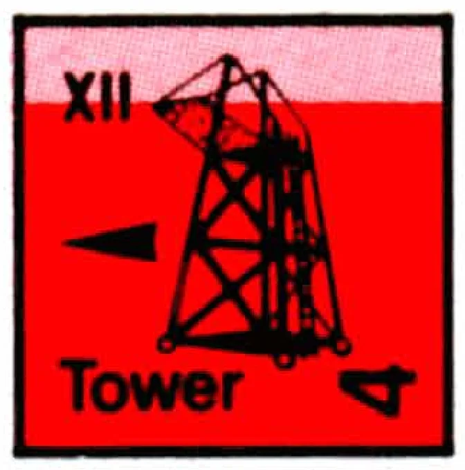
9.11 Vs.攻城塔:如果对攻城塔/装甲攻城塔格内的单位进行射击,那么射击方可以指定射击目标是推动单位还是乘载单位,又或是将两者都作为目标。若是进攻方选择将两者都作为目标的话,那么防守方可以指定通常情况下由谁来承受损失。若是进攻方选择上面或下面,则另一高度的单位就不会受到本次射击的损失,一个孤独存在的单位若是承受"DD"结果则会导致将其消灭。大锅和投石单位不能射击攻城塔或装甲攻城塔上的乘载单位,只能射击推动单位。
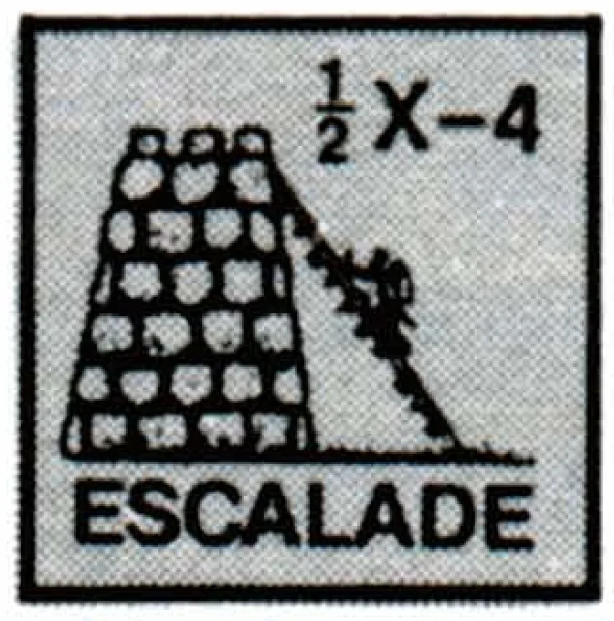
9.12 Vs.云梯:当云梯遭到各种射击攻击时,除非该格内仅剩基座单位存在,否则基座单位不会受到影响。若是云梯上面和云梯下面各存在一个单位,则一个"DD"结果将会消灭云梯上面的单位而不是将两个单位全都变成混乱。
9.13 越过攻城塔射击:越过有攻城塔/装甲攻城塔格(不仅是沿着其格边)向另一格进行射击时,每越过一个这样的障碍,就要遭受－1 drm。
9.2 射程:攻城炮和投射单位攻击值会随着射程的变化而不同,详情参见武器效果表。射程为射击格和目标格之间的格子数(包括目标格,但不包括射击格)。
9.3 攻城炮射击限制:攻城炮不能从建筑格或缺口格内发出射击。因对投射武器经验不足,所有犹太攻城炮在主射程(Primary Range)以外的射击都要承受－1 drm。
9.31 错误攻击:当攻城炮攻击与一个高度更高的格子,且该格与友军单位相邻,且该友军单位并非是射击格内的单位,则该射击就有一定概率会落在友军单位的头上。无论本次攻击的攻防比如何,只要投射表的结算投骰扔出了1(在所有修正之前),除了对目标格造成正常的结果之外,与目标格相邻的一个友军单位(防守方选择)必须混乱。受该影响的单位不能是云梯上已有攀爬单位的基座单位。
9.4 投射射击限制:处于攻城器下方,或在云梯格内的投射单位不能射击。龟盾内的正常轻装步兵可以射击,就像攻城塔上乘载的投射单位那样。
9.5 射线(LOF):单位要射击特定格,必须能够从射击格中心到目标格中心追踪一条无阻碍的射线(Line of Fire,简称LOF)。若是射线穿过了阻碍格的任何部分(不包括格边),则不能攻击。
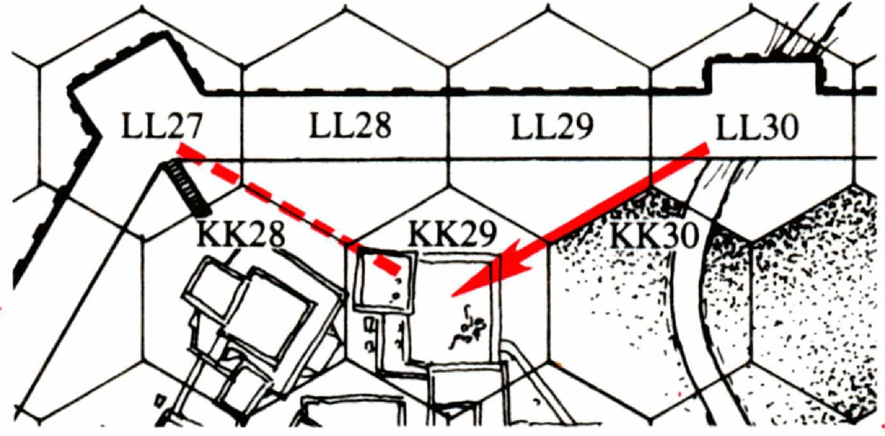
示例：若射线沿着阻碍格的格边擦过是允许射击的,但如果那条格边是两个阻碍格的共享格边就不允许射击,例如从LL27到KK29,因为KK28和LL28会阻碍射线。从LL30到KK29的射线沿着KK30-LL29格边,因为只有LL29为阻碍格,所以可以射击。
射线的限制详见射线判定表(LOF Determination Table)。对射线的阻碍将会阻止射击通过该格,但是向阻碍格内进行射击却是允许的,又或者射击方可以换一个射击目标。在地面高度,从缺口格射出,或通过(不是射入)缺口格向另一地面高度的目标进行射击,需要承受－1 drm。
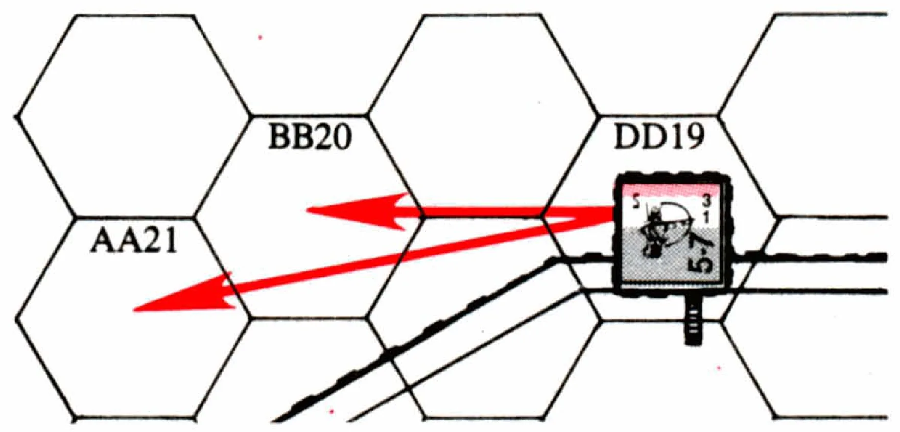
示例：沿着城墙格的格边从城堡DD19到BB20可以射击。同一城墙格边不阻碍向AA21的射击,因为该格边更靠近射击单位,而非射击目标。但是,如果DD19是棱堡而非要塞,则射线就会被阻挡。
9.51 高架格到地面格:从高架格向地面格射击,射线总是会被射线所经过的,且与目标相邻的建筑格(不包括格边)所阻挡。类似地,从地面格向高架格射击总是被射线所经过的,且与射击单位相邻的建筑格(不包括格边)所阻挡。 [例外:圣殿,10.3]
9.52 地面到更高的地面:有不同高度的地面格,用斜坡(Slope)来区分。一个地面高度的单位要向另一个处于不同高度的地面单位进行射击,若是LOF在经过斜坡格后要通过或进入多于一个平地格(不含射击格)的话,那么他就无法进行射击。
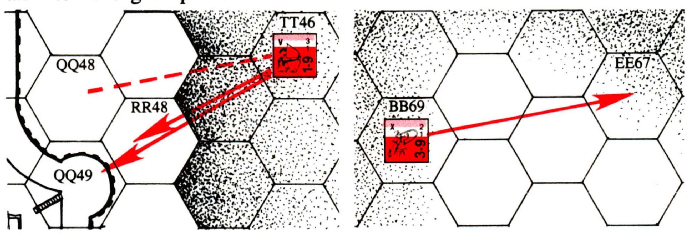
示例：在TT46的一个投射单位不能看到QQ48,但可以看到在斜坡顶的RR48,或其后的高架格QQ49。在BB69的单位可以看到EE67,因为双方在同一高度。
9.6 集中射击:当两个或多个攻城炮/投射单位在同一阶段射击同一目标格,那么所有的攻击值必须合计在一起,然后只做一次投骰。一旦对某个格子执行了射击攻击,那么在相同阶段内,就无法使用相同的表再对那个格子执行进攻。然而,在同一个阶段内,被破墙表进攻过的高架格依然可以被射击表攻击,反之亦然。
9.7 强制目标:与敌方单位相邻的攻城炮/投射单位在该阶段内只能攻击相邻单位。相邻的攻城器/攻城炮永远都不是强制目标,尽管同格内的其他单位仍是强制目标。如果与多个被敌军占据的格子相邻,则投射单位可以选择攻击目标,前提是该投射单位不能忽略施加ZOC的敌方单位而去进攻另一个没有施加ZOC的敌方单位。射击方玩家可以只选择部分单位射击,希望消灭强制目标格内的所有敌方单位。然而,由于一个目标格在同一个阶段内只能被投射射击一次,因此他冒着风险,如果强制目标格内敌方单位未消灭,则未射击的单位可能会找不到其他可射击的强制目标格。
9.8 城墙攻击加成:在城墙或桥梁格的单位是同一面城墙上高架格投射攻击的主要目标。当这样单位沿城墙直接向城墙或桥梁格上的敌方单位射击时,投射攻击值翻倍。要获得这个加成,则从高架格到目标格的LOF必须是一条笔直的,有连接的墙壁或桥梁格。该加成不适用于攻城炮,投石/倒油,间接射击,或射向圣殿的外墙。
9.9 间接投射射击:当处于地面高度的单位射击同样在地面的单位时,可以越过一个包含了战斗单位的格子,如果该格可以用其他射击方式来穿越的话。同样的,高架格的单位在射击同样高度的高架格时,可以越过一个位于射线之间的,包含了战斗单位的高架格,只要射击路线没有穿越一个高度更高的高架格即可。间接投射射击需要承受－1 drm,但该drm不会与通过缺口射击(并非射入缺口)的－1 drm累加。
第10章 特殊火力攻击返回目录
10.1 罗马:在每个射击阶段,由合适的正常步兵所推动的装甲攻城塔和攻城锤,可以使用破墙表攻击相邻的高架格。通过入口格边攻击城门可以使攻击值翻倍。
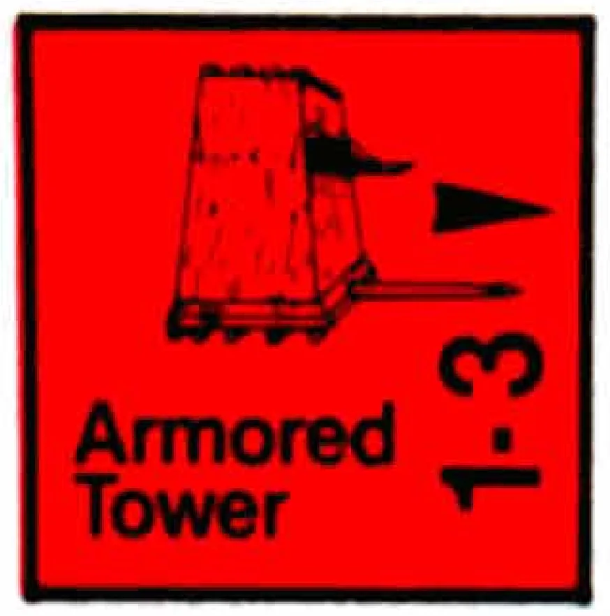
10.11 朝向:攻城锤/装甲攻城塔只能进攻该攻城器的朝向箭头所指向的高架格。同样的,乘载在攻城塔上的单位也仅能通过攻城器指向箭头方向的格边进行近战和推进。攻城器为了改变朝向而在本格内进行移动不花费任何MF,只能在移动阶段内进行,并且必须由一个在移动阶段刚开始时就已经在攻城器下面的正常推动单位来执行。一旦有单位从塔上移动到相邻的高架格上,或从邻近的高架格上移动到塔上,则该攻城塔在本移动阶段内就不能再改变朝向了。
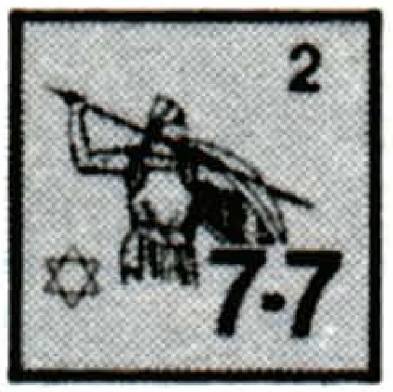
10.2 犹太:在射击阶段,高架格上的正常奋锐党人(Zealots),民兵(Militia)和大锅(Cauldrons)可以基于投射表使用投石和滚油攻击相邻的平地格(包括使用云梯的单位,坡道,攻城器的推动单位:9.11)。他们可以自行攻击,或与犹太投射/攻城炮单位联合攻击。有大锅参与的射击攻击,每有1个大锅,获得+1 drm。在棱堡或城堡内的正常奋锐党人,民兵和大锅可以用相同的方式来攻击直接相连的高度较低的高架格内(2.11)的相邻战斗单位。
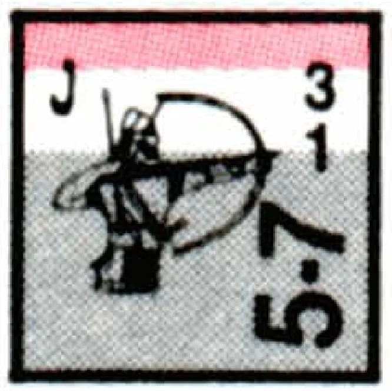
10.3 圣殿(Temple):圣殿是耶路撒冷中最高的建筑。在圣殿大厦中央格的投射单位可以直接穿过周围大厦格(无论其内是否有单位)对射程内的目标进行射击——尽管受圣殿围墙限制——反之亦然。
第11章 近战返回目录
11.1 可近战单位:只有正常单位可以攻击。在相应的近战阶段内战斗单位可以攻击相邻的敌方单位,但前提是:假设目标格是空缺的话,那么每个攻击单位都必须有能力从进攻格进入防守格。 [例外:从高架格攻击攻城塔(11.21)/云梯(11.61)]。因此,攻城炮(除了大锅可以攻击相连接的高架格)不能近战攻击。重步兵若是与盟邦军(Foederatti)或叙利亚弓箭手(Syrian Archers)堆叠在一起的话,就不能近战或射击,反之亦然。
11.11 从地面格:占据地面和建筑格的战斗单位可以与相邻的地面和建筑格的单位进行近战。如果有相邻的楼梯格边相连接,占据地面和建筑格的步兵可以与相邻的城堡和棱堡格进行近战(反之亦然)。通过楼梯进行攻击的总近战值双向都减半。
11.12 从高架格:占据高架格的战斗单位可以通过楼梯格边与相邻地面格近战,或与相连的缺口格进行近战,只使用一半近战值,就像通过楼梯一样(11.11)。占据高架格的战斗单位可以正常的与相邻的攻城塔顶部(通过朝向箭头,10.11),云梯,坡道或相连接的高架格的单位近战。
11.13 从缺口格:占据缺口格的战斗单位可以与相邻地面和建筑格以一半近战值进行近战,也可以与原来相连接的高架格以一半近战值进行近战,就像通过楼梯一样。
11.14 从城门:占据城门的战斗单位可以正常的和相连的相邻高架格进行近战,或与一个相连接的缺口格近战,就好像通过楼梯攻击一样。占据城门的单位还可以用一半近战值通过入口格边攻击相邻的地面或建筑格,就像通过固有楼梯向下攻击一样。为了攻击城门外的单位,必须打开城门以便于允许突围(Sortie)。如果打开城门允许这样的攻击发生,但却未能迫使防守单位退出城门入口格,则防守单位可以在当前近战阶段结束时以自身近战加成从所在格进行反击。除非该反击导致敌方占领城门格,否则该城门将被视为再次关闭。反击只能通过城门入口格边执行。
示例：在城门格的犹太单位可以通过城门入口格边与相邻地面上的罗马单位近战,而罗马单位不能与城门格近战,因为他们不能从地面高度进入一个还没有控制住的城门。然而,如果犹太单位打开城门向外攻击却未能将罗马单位赶出入口格的话,那么入口格的罗马单位就可以在犹太近战阶段结束时发动反击,就像在地面格一样(尽管防守单位仍然享有城门防守加成)。
11.15 不能多格防守:一个单位在一次攻击中不能攻击两个不同的格子。然而,他必须尽可能的攻击目标格内的所有单位[例外:对云梯/攻城塔:11.61,11.21]。
11.16 圣殿区(Temple Quarter):在圣殿区内(从外墙上进攻不算)攻击/防御的犹太单位在每次近战投骰中获得+1/-1的有利修正。
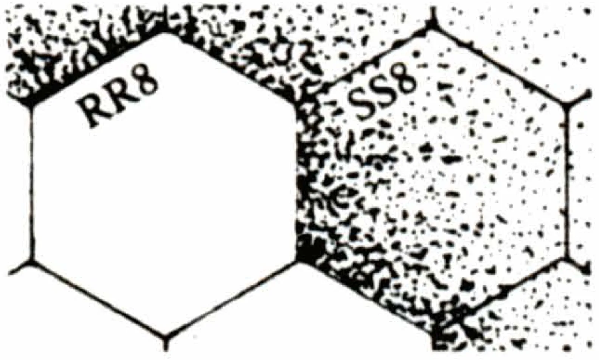
11.17 坡顶(Crest):一边为深褐色,另一边为平地的斜坡格边为坡顶格边。坡顶和斜坡在各方面都一样,除了:进攻方的进攻穿越了一条坡顶格边,而防御方是一个处于地面高度的非斜坡格,则进攻方的近战值要减半。
示例：RR8格的高度比斜坡SS8的高度要高,尽管两者都是"地面高度"格。RR8-SS8是坡顶格边。
11.18 棱堡/要塞/城墙(Bastions/Forts/Wall):从相连接的高架格或地面坡道攻击一个邻近的高架格时,其它情况下有利于防守单位的-1 drm不适用。
11.19 建筑/大厦(Built-Up/Edifice):在建筑(非大厦)格内的防守单位有近战-1 drm。大厦格内的防守单位近战值加倍,只要不是被同一个大厦内的单位攻击即可。
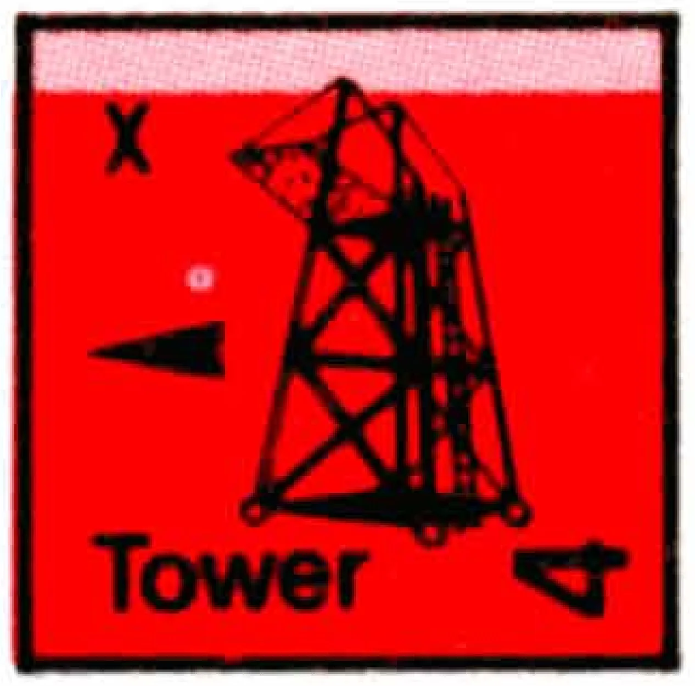
11.2 攻城塔:在攻城塔上的步兵可以通过舷梯(箭头)格边以双倍近战攻击值与相邻的高架格进行近战。无论是在攻城塔上或下,只要是在攻城塔格内的罗马单位就不能与地面或建筑格进行近战[例外:推动单位能(也只能)以正常的近战值反击城门:11.14]。另外,推动单位不能把近战值加到从攻城塔对高架格的近战中。通过舷梯格边与空白高架格相邻的攻城塔上的单位,在罗马近战阶段结束时移动到该空白高架格上。攻城塔不能受到高架格和地面格的联合攻击,这样的攻击必须分开结算。这是在用一个近战阶段内,不使用多重攻击(11.9)或连续战斗(11.87),就能够多次攻击同一格的两个例子之一(见云梯,11.6)。
11.21 高架格对攻城塔:占据高架格的犹太步兵仅能通过舷梯格边与相邻的攻城塔上的单位(或空的攻城塔)进行近战。攻方和守方均使用通常近战值[例外:装甲攻城塔上的单位以双倍近战值防御]。攻城塔下方的(推动)单位不受该攻击影响,也不能将近战值增加到塔上的防守单位中。当攻城塔下方没有推动单位存在(正常或混乱皆可),并且近战消灭了塔上的所有罗马单位时,攻城塔就会被摧毁。攻城塔下罗马单位的存在足以阻止攻城塔被俘获。犹太单位不能从高架格上推进到攻城塔格中,除非通过城门突围(11.14)。
11.22 地面格对攻城塔:有近战值的正常犹太单位通过进入攻城塔所在格就能自动摧毁无单位的攻城塔,但在该阶段内该单位不能再移动或攻击。占据地面,城门和建筑格的犹太战斗单位可以与占据攻城塔格的相邻罗马单位近战。推动单位以正常的近战值防御。塔上罗马单位比推动单位先受战斗结果影响,但不增加攻城塔的防御近战值。如果没有推动单位,塔上单位以一半近战值防御。装甲攻城塔的防御加倍不适用于地面高度的攻击。
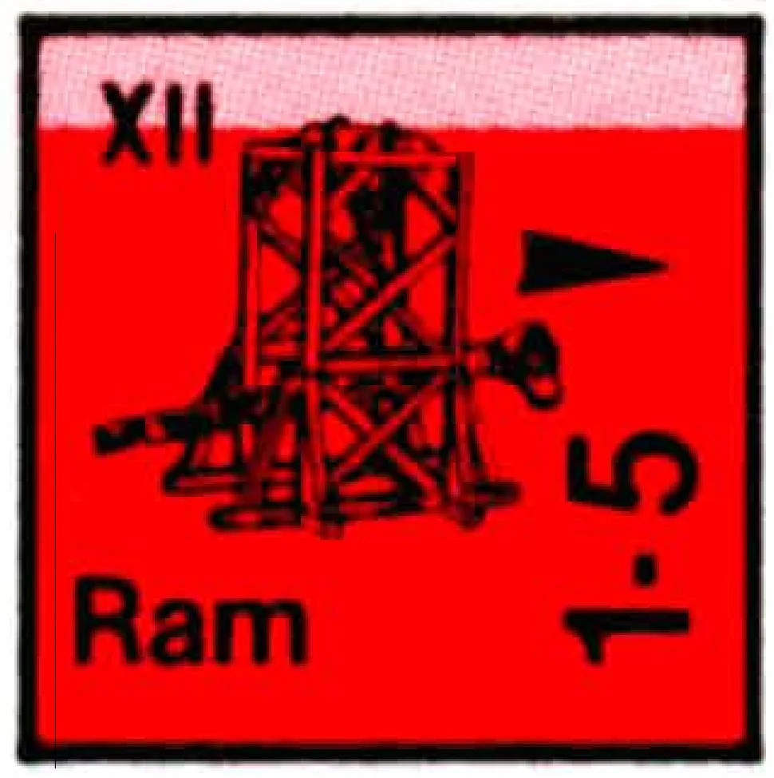
11.3 攻城锤:与攻城锤处于同一格的罗马单位不能近战攻击[例外:反击,11.14]。占据地面,城门和建筑格的犹太战斗单位可以与相邻的攻城锤所在格进行近战。
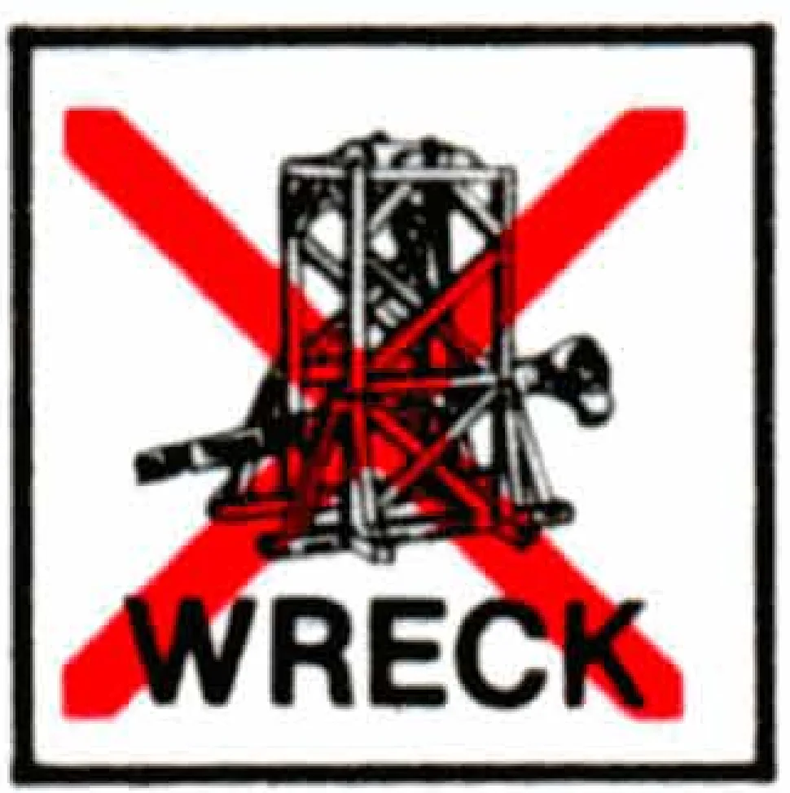
11.4 攻城器残骸:攻城器没有近战值。如果没有与友军战斗单位堆叠在一起,则不能阻止犹太单位在移动阶段进入其所在格。若是攻城器没有与友军战斗单位堆叠在一起,遭到了通过舷梯格边的高架格近战攻击,或者被犹太单位进入其所在格,则攻城器被摧毁并移除,但要在该格内放置一个攻城器残骸标记,用来限制堆叠并影响射线,就像攻城器仍然还在那里一样。犹太单位不能移动或爬上攻城器,只能摧毁它。
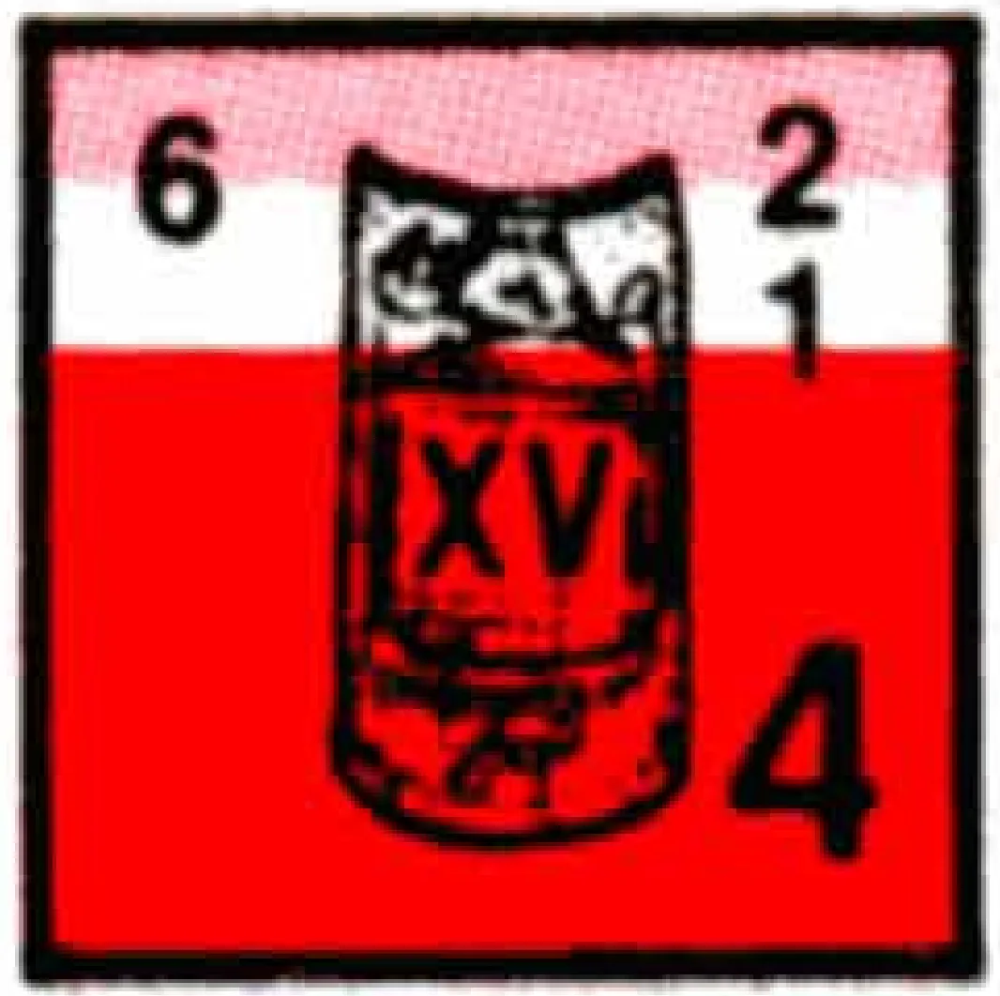
11.5 龟盾:龟盾内的单位不能发动近战攻击,但是可以正常防御近战。在地面,城门和建筑格内的犹太单位可以与相邻龟盾近战。
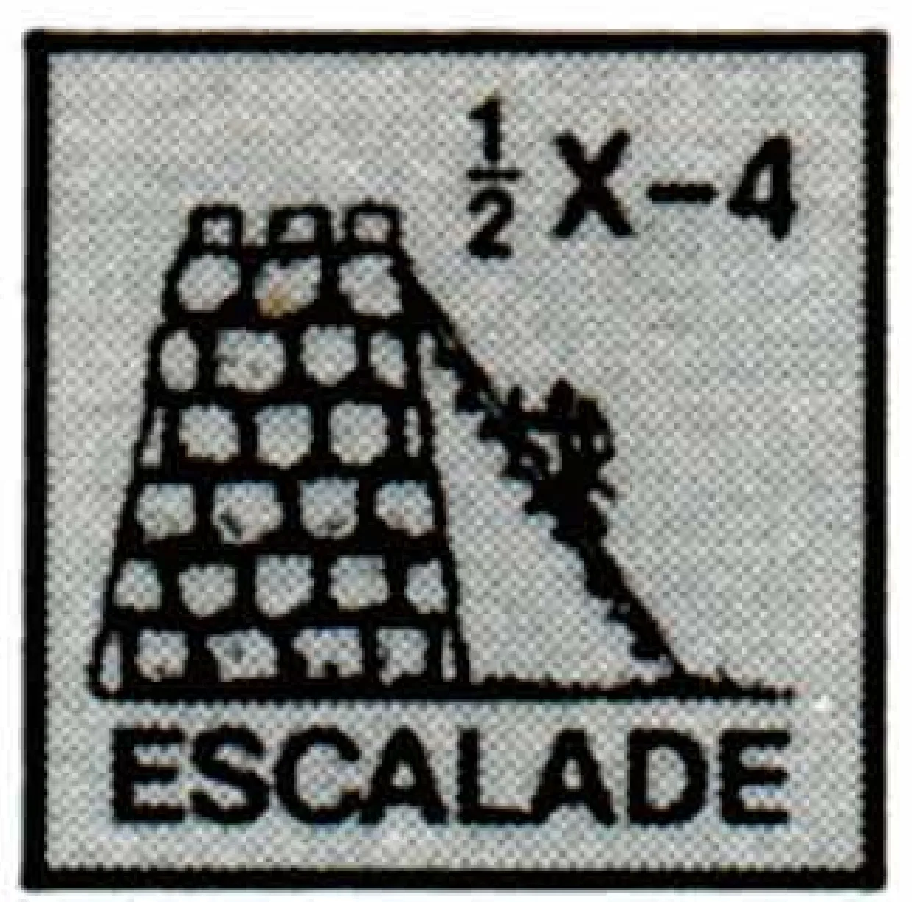
11.6 云梯:在云梯上的单位只能与相邻高架格上的单位近战。云梯上所有单位的近战总值减半。基座单位不能攻击。与空白高架格相邻的云梯上的单位在罗马近战阶段结束时可以移动到空白的高架格上。[云梯格不能受到高架格和地面格的联合攻击,这样的每个攻击必须分别结算。这是在用一个近战阶段内,不使用多重攻击(11.9)或连续战斗(11.87),就能够多次攻击同一格的两个例子之一(见11.22)。]
11.61 从上方对云梯:在高架格上的犹太战斗单位可以与相邻的云梯单位进行近战,但不能在战斗后推进。在云梯上的单位近战值减半。云梯下的罗马单位不受上方近战攻击,但也不会增加云梯上单位的近战防御。
11.62 从地面对云梯:地面,城门和建筑格的犹太战斗单位可以与相邻的云梯格的罗马单位近战。云梯上的单位比基座单位先受战斗结果影响。但是,云梯上的单位不会增加云梯格的防御值。基座单位近战值减半。
11.7 高架格防御:高架格内的所有防御单位的近战值任何时候都加倍(在城堡内乘以三倍)。此外,除非攻击来自相连的高架格,缺口,地面坡道或楼梯,否则对高架格的攻击需要承受对防守方有利的-1 drm。
11.8 机制:在每个阶段中,每个进攻单位只能与一个格子发动近战[例外:战斗后推进,11.86]。进攻方并非必须攻击相邻的敌方单位,即便他处于该单位的ZOC内。然而,当某个格子受到攻击时,该格内所有防御单位必须以一个整体进行战斗[例外:攻城塔和云梯;11.2,11.6]。
11.81 结算:将所有攻击单位的近战值加总。每个近战阶段内一个格子不能遭到多次攻击,除非是其他战斗中推进(11.9)的单位参与后续攻击,又或者是攻城塔或云梯受到地面和高架格的攻击,又或者是近战结算投骰结果"≥6"导致连续战斗(11.87)。单位近战值可能因地形或其他条件而增加或减少。然后将目标格内所有防御单位的近战值加总。将两个总值相除,得到攻击值:防守值的比率,并以有利于防守方的方式来去除小数部分。该比例简称为攻防比(Odds)。
示例：攻击值16 vs.防御值9,攻防比为1:1。攻击值14 vs.防守值6,攻防比为2:1。攻击值6 vs.防守值8,攻防比为1:2。
然后进攻方查询近战表,交叉查询攻防比与投骰结果以判定结果。该结果在下一次战斗结算之前生效。
11.82 损失选择:当有多个防守单位可以承受损失时,由防守方自行决定用目标格内哪个单位来承受损失。若需要遭受损失的单位数量超出了目标格内的防守单位数量,则适用最多的损失,多余损失不计。但是,对额外"E"结果可以获得额外的"战斗后推进"加成(见11.86)。
示例：犹太方用1个奋锐党人,1个常备军和1个民兵单位用来防守城堡,攻防比为2:1。最终投骰为7,导致"DE",因此犹太方消灭民兵,混乱并(主动)撤退常备军1格。奋锐党人留在原地不受影响。
11.83 极端攻防比:攻防比低于1:4的,按1:4列结算,高于7:1的按7:1列结算。每超出7:1一个攻防比,drm +1;每低于1:4一个攻防比,drm -1。
示例：攻防比为10:1的可以获得+3 drm。攻防比为1:6的可以获得-2 drm。
11.84 修正:进攻投骰结果可能会因为近战表的下方所列出的修正条款而增加或减少。在单次攻击中,所有适用的drm都是累加的。
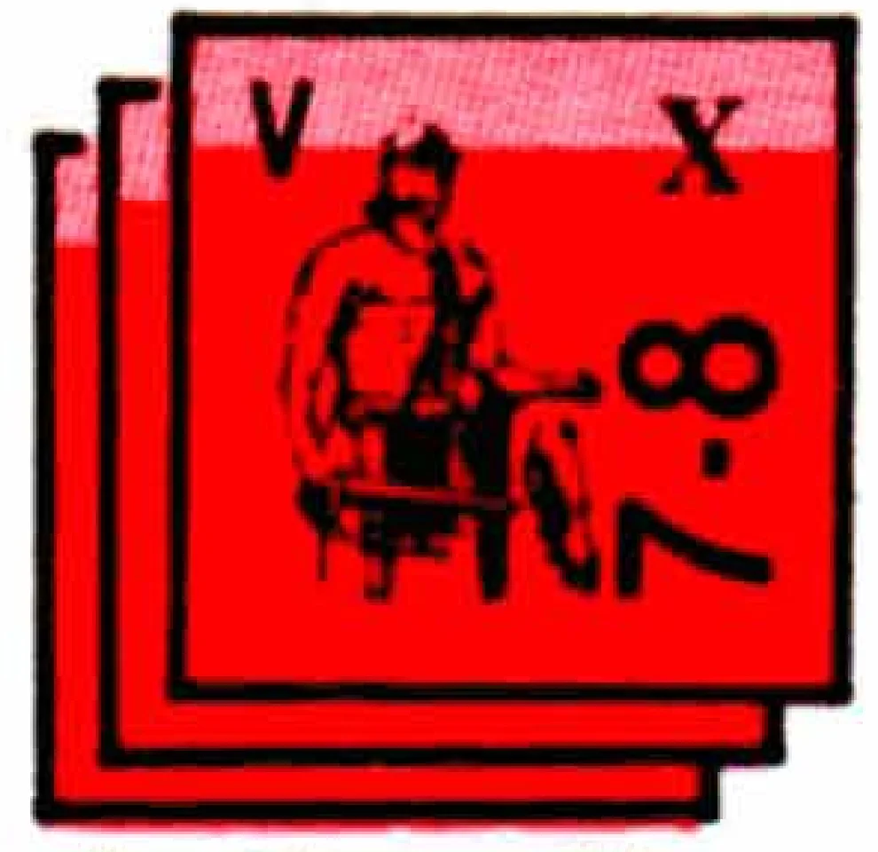
11.841步兵大队完整性:一支完整的正常罗马军团大队(即:一个7-8,一个6-8,和一个5-8),且他们的军团编号(Legion)和大队编号(Cohort)都完全相同,当他们从同一格内发动进攻时可以获得+1 drm,当他们在同一格内进行防御时可以获得-1 drm。无论一共有多少支完整大队参战,该drm只能获得一次。11.842派系/军团完整性:除了第一个参与近战的,之后每有一个不同的派系/军团(Faction/Legion)加入其中,攻方就需要承受-1 drm。奋锐党人,守备单位和大锅不会被视为不同派系所属单位。
示例：若是有三个派系的单位一起攻击一个包含了完整步兵大队的格子,进攻方需要承受-4 drm(2个额外攻击派系-2,完整的步兵大队-1,攻击正常重步兵-1)。
11.85 侧翼攻击(Flank Attack):若是防守单位的周围六格中的每一格都处于以下三种状态之一:"被敌方单位占据;不可通过格;存在敌军ZOC",那么就会发生侧翼进攻。对于这条定义,一个满堆叠的友军格并非"不可通过(impassable)"——除非该格处于敌方ZOC中——即便撤退单位已无其他撤退路线。在侧翼进攻中,所有参与单位的近战值全都加倍计算。该条款与其他会影响近战值的条款可以互相叠加。与高架格相邻的攻城塔/云梯/坡道/楼梯可以给该高架格的单位留一条撤退通道,因此可以阻止侧翼进攻。犹太单位不能使用攻城塔/云梯来逃避侧翼进攻。
(结果与原近战值一样,2.7)。
示例：在侧翼攻击中,通过楼梯格边攻击的单位近战值先减半再加倍。
11.86 战斗后推进(Advance after Combat):如果战斗结果中"E"的数量超出了防御单位的数量,每有一个没有消灭单位的"E"结果,推进的近战攻方(在完成了占据防守单位所在格后,且必须受限于该格的堆叠限制)就可以在移动到防守单位空出格后再移动一格。若是攻方选择享受该移动奖励,则无需花费MF,但不能进入正常情况下不能进入的格(包括强ZOC退出;7.311)。
11.87 连续战斗(Continuous Combat):近战结算投骰结果≥6(调整前≥6或调整后≥6都行),允许攻方立即以同样单位再次攻击同一目标格。此时需要先结算完之前一次攻击的结果,并且重新计算攻防比。只要攻方持续不断的掷出"原始"或"最终"结果≥6,就可以无限次进攻。然而,如果在这个过程中有其他的攻击被结算,又或者防守方空出了该格,则再次发动攻击的选择权就会丧失。如果防守方空出了目标格,则进攻方可以再次攻击,但只能通过战斗后推进作为多重攻击(11.9)
11.88 骑兵:若是骑兵的进攻格和目标格都是平地格(Clear)的话,其攻击值加倍。
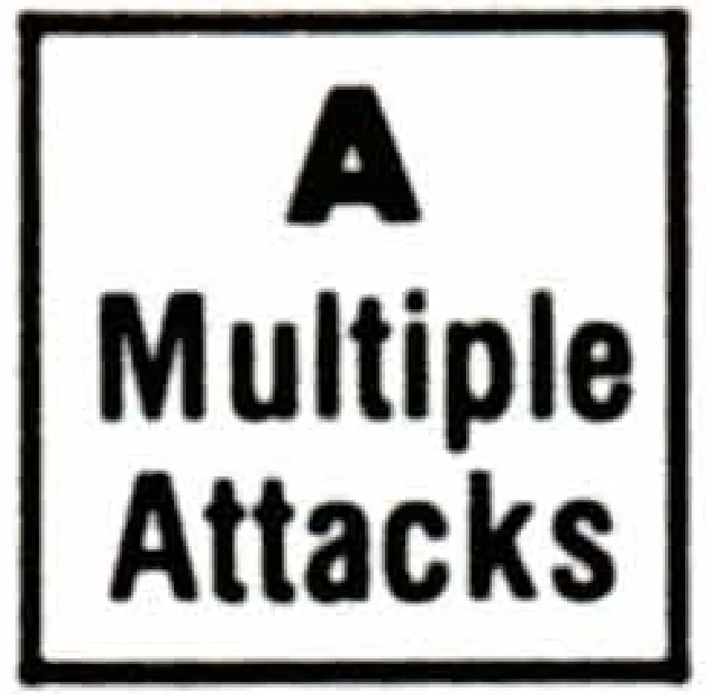
11.9 多重攻击:若是防守格的所有防守单位均被消灭或被迫撤退,则攻方可以将任意近战攻击单位(数量必须符合该格的堆叠上限)推进到空出来的防守格中(如果因额外"E"结果而获得多格推进,则可以再推进),并放置1个"A"多重攻击标记。敌方ZOC以及缺乏CC对推进到空白防守格没有影响,但是会阻止因额外"E"结果获得的进一步推进。战斗后推进的单位(并选择多重攻击)必须与其ZOC内的单位近战,如果有这样的单位存在的话。如果其ZOC内没有敌方单位,可以与任意一个相邻的,且正常情况下可以进攻的单位近战。在一个近战阶段内,一个单位所能进行的多重攻击的次数不限,只要在每一次进攻中,至少得有一个进攻单位有多重攻击标记。
当他推进后,若是"A"标记下的胜利单位与任何一个敌军占据的格子相邻,则他就可以进行正常攻击,若是还有其他友军单位也和该格相邻,且有能力攻击,则他们可以进行联合攻击(即使那些友军单位在该阶段内已经攻击过,或该防御方在本阶段内已经遭受过进攻)。执行了一次多重攻击后,将所有参战单位身上的"A"标记移除,但是本次战斗后推进的单位将获得"B"多重攻击标记。
一旦有一场不包含多重攻击的进攻被结算,则所有多重攻击标记必须被移除。同样的,至少有一个包含了"B"标记的攻击被结算,则所有"A"标记必须被移除。一场"B"多重攻击的战斗结果导致战斗后推进的部队可以获得"C"多重攻击标记。如果有必要的话,多重攻击可以继续链下去,从"A"标记重新开始。
第12章 破墙损伤返回目录
12.1 效果:破墙损伤(Breach Damage)会因为坑道作业(19.2)的结果,或攻城器使用破墙表进行攻击而发生。破墙损伤是累积的。当破墙损伤达到或超过某格的破墙防御值(Breach Defense)时,该格将会被破墙(Breached),此时上面的所有单位在那一瞬间会被立即消灭。
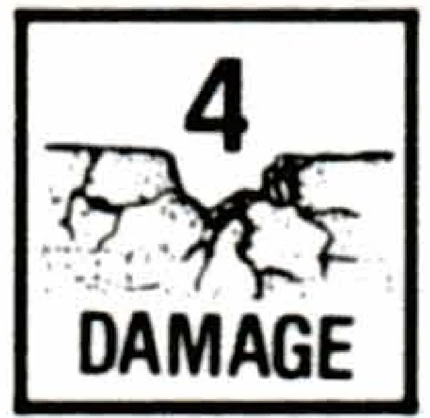
12.2 损伤累积:当高架格遭到破墙损伤时,在该格内放置一个对应数值的损伤标记,当损伤增加时,替换成新的损伤值标记。当损伤≥高架格的破墙防御值时,在该格内(即使是城门格)放置一个破墙标记(Breach marker)。高架格的破墙防御值列在破墙表的下方。要塞和城堡的唯一区别就是后者的破墙防御值和投射防御值更高。
12.3 多重城墙:一个诸如R51那样的格子包含了多个不同的城墙。只需要破墙一次,两个城墙的部份都被视为破墙。
12.4 道路/效果:当一个高架格遭到破墙防御值一半的破墙损伤时,单位不再能以道路移动速度通过该格,必须花费完整的1 MF,而不是1/2 MF。
12.5 多个攻城锤:多个格子内的攻城锤/装甲攻城塔可以将破墙攻击值合并到一次攻击中。然而,在攻击城门格时,只有通过入口格边的才可以使用双倍攻击值进攻。
第13章 投射表返回目录
13.1 概览:投射表适用于所有合法的投射单位和攻城炮单位的射击,以及高架格上的奋锐党人,民兵和大锅攻击相邻的较低高度的罗马单位(2.11)。在每个射击阶段内,每个目标格只能被攻击一次。
13.2 结算:在投射表上查询目标所在格的类型,以确定结算所适用的行。将射击同一目标格的所有单位的攻击值加总。投射表上每列的数字是:若要使用该列,则总攻击值至少需要满足该数值。与攻城器处于同一格中的单位使用对应的攻城器行来结算针对他们的攻击。如果对地面格的射击中,目标格内同时包括攻城炮和步兵,则攻方必须指定主要目标类型,并基于主要目标类型来使用投射表相对应的行。若是从投射表上获得了多个结果,则至少要有一个结果必须对目标格内之前所预先指定的主要目标类型执行。而剩余的其他结果可以按守方意愿适用到目标格内任意单位身上(包括非主要目标的攻城炮,只要防守方愿意)。
示例：罗马三个军团单位和一个弩炮移动到一个平地格中,且这个平地格处于两个犹太投石器(攻击值为6)的二级射程范围(Secondary Range)内。犹太方可以选择重步兵作为主要目标,以"6"列及-2 drm(主射程以外-1,对正常重步兵-1)进行射击;或者选择攻城炮作为主要目标,以"2"列及-1 drm(主射程以外)进行射击。在两种情况下,罗马方必须对主要目标适用第一个损失,然后在该格剩余单位中任意分配剩余的损失。然而,若是犹太方以步兵作为主要射击目标,则不能对攻城炮造成损伤,除非罗马方主动选择让攻城炮承担额外损失。
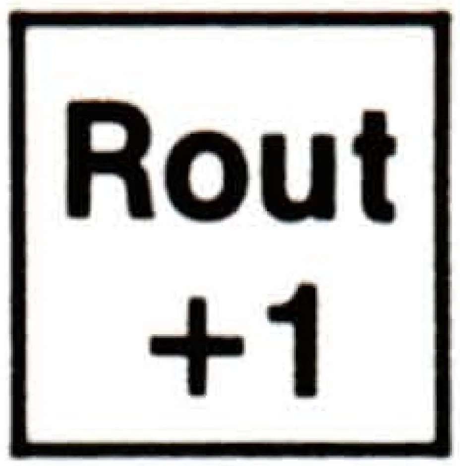
13.21 攻城炮溃退/恐慌:正常攻城炮[例外:大锅]不会因为射击导致的混乱结果而被移除——因为其装备依然保留在该格内。如果已经混乱的攻城炮单位再次混乱,则放置溃退标记。如果已经溃退的攻城炮再次混乱,则放置恐慌标记。如果已经恐慌的攻城炮再次混乱,才会被消灭,但要在该格上放置一个"Elim"攻城炮标记用来影响堆叠,直到本突击阶段的结束为止。如果正常攻城炮单位遭到DD结果,那么将会变成混乱和溃退;如果已经混乱,则遭到DD时变为恐慌;如果已经溃退,则遭到DD时将会被消灭。"E"结果总是消灭攻城炮。在受到混乱结果时,大锅不会被视为攻城炮;大锅将会被正常消灭,且不会留下"Elim"标记。
13.22 攻击城墙:当攻击城墙格内的单位时,投射表使用哪一列将取决于防御方所在格的城墙类型。若防守单位处于北墙[新城北部边界的所有城墙格(城墙不包括棱堡和城堡)],则必须使用投射表上的"North Wall"那行。 [例外:圣殿区的外墙总是被视为棱堡]
示例：用6点攻击值去进攻一个棱堡,因此用投射表的第二列结算。若要对棱堡使用第三列,则攻方需要12点。
13.3 修正:所有drm是累积的。若是目标格内有正常重步兵,则适用-1 drm。 [例外:攻城器,龟盾,解体的龟盾(Broken Testudo)格内不适用于该-1 drm,主要目标为攻城炮不适用于该-1 drm,目标格内有盟邦军/叙利亚弓箭手不适用于该-1 drm]。若是目标格内有民兵,则适用+1 drm。进攻方单位中每有一个大锅,就要适用+1 drm。若是射击从缺口格中射出,或通过缺口格,则使用-1 drm。由于经验不足,犹太攻城炮对超出主射程以外的目标进行射击,适用-1 drm。
13.4 超出的战力比:"攻击乘数(Attack Multiple)"是在投射表上从"1"列开始,每提升一列所需要的额外攻击值。射击龟盾时的攻击乘数为3,射击攻城锤时的攻击乘数为5。对于超出"7"列的投射攻击,每超出一个攻击乘数(即,对平地格是1,对缺口格是2,对龟盾是3,等等),攻方获得+1 drm。
示例：用24点攻击值射击龟盾,可以在第7列上获得+1 drm。用45点攻击值射击攻城锤,可以在第7列上获得+2 drm。
13.5 结果:投射攻击的战斗结果与近战攻击的战斗结果基本一致,除了:受影响的单位在混乱时不撤退,停留在原地。关于战斗结果"DD"的定义,见14.33。
第14章 近战/射击战斗结果返回目录
14.1 概览:单位所受的影响大小,根据该单位的所在格以及该单位的类型,而有所不同。处于城堡格或攻城器格内的单位撤退可能性较小,因为这些格非常重要。
14.2 后退(B):所有防守单位必须撤退1格或2格(无论MF成本多少),控制方选择。如果该撤退导致超出堆叠,则该单位混乱,并根据15.3规则继续撤退,直到到达一个可停留的格子或被消灭为止。当两个或多个防守单位因同一次攻击而撤退,这些单位可以逐个撤退(以此避免超出堆叠惩罚),即使这些单位是撤退进同一个格子中。防守单位总是可以选择(对于单个单位)用"D"结果来替代"B"结果。
14.21 罗马地面ZOC:在罗马重步兵的地面ZOC内的犹太单位在受到该重步兵攻击时,只能撤退1格。如果该撤退导致超堆叠,则该撤退的犹太单位被消灭。
14.3 混乱(D):防守方选择一个单位来承受混乱结果,将正常单位翻面至混乱面,或者消灭一个已经混乱的单位。在近战中承受混乱结果的战斗单位需要由防守方来立即执行撤退[例外:14.31]。受到射击进攻而导致的混乱单位无需撤退。
14.31 无需撤退:占据城堡,龟盾或攻城器格内的单位,若是在近战中变为混乱,可以不必撤退(若是控制方自愿的话,也可以撤退)。如果它们决定进行撤退的话,就必须遵循所有撤退限制。
14.32 攻城炮:安装在装甲攻城塔上的罗马石弩,以及混乱的犹太攻城炮(大锅除外)决不撤退。他们会以混乱状态停留在原地(13.21)。
14.33 双重混乱(DD):目标格内防守方选择的两个单位混乱,将这两个单位:翻到混乱面和/或若是混乱则直接消灭。如果目标格只有一个防守单位,则直接消灭该单位。如果该格内有多个适用的目标单位,则不能让其中一个防守单位主动承担DD结果的全部效果。下列单位有可能不是适用目标:非主要目标的攻城炮(13.2),云梯的基座单位(9.12),攻城塔格内非预先指定单位(9.11)。
14.4 消灭(E):对于每个"E"结果(不超过目标格内单位数量的),防守方在目标格内选择一个适用单位,并将其消灭。
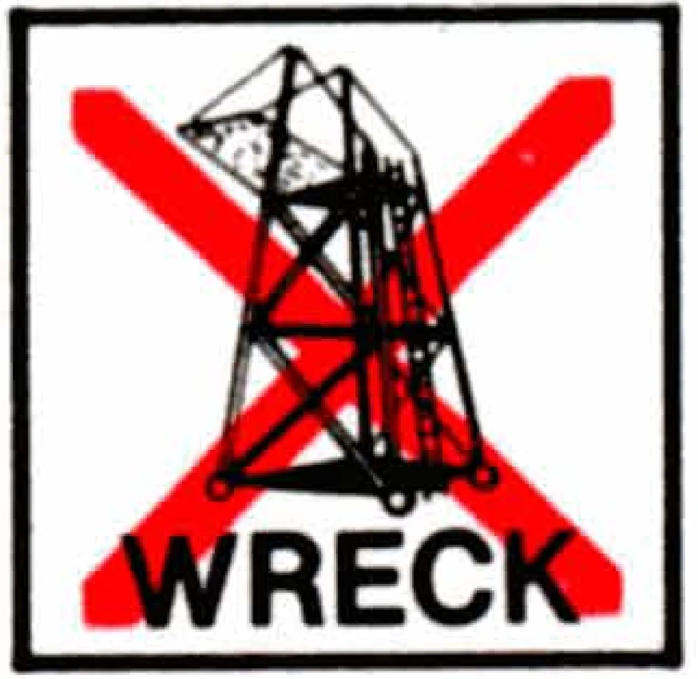
14.5 被消灭的装备:被消灭的攻城炮(大锅除外)和攻城器,会在地图上被替换成一个残骸标记(Wreck marker)。残骸就像它们尚未被消灭时一样会影响堆叠,并会因此而阻止同类单位进入或通过该格。在本突击阶段结束时移除残骸标记。
第15章 撤退返回目录
15.1 流程:防守单位只要不在城堡,龟盾或攻城器所在格内,若是在近战中变成混乱,则必须立即撤退。该单位可以撤退任意数量格,但花费的MF不能超出其混乱状态下的移动力,只要有其他能够满足撤退条件的路径,就不能撤退进入一个将会使他导致溃退,恐慌或消灭的格子内,即使这样将会使他远离避难所(见15.4)。否则,撤退路线中的每一格必须尽可能的靠近避难所,即便其他的撤退路径会更有利,甚至最终能够更快的到达避难所。若单位在撤退之后依然幸存,那么该单位在后续移动阶段内可以自由移动,除非他处于溃退或恐慌状态(见15.3)。如果撤退单位在一个超堆叠的格内用完了MF,则该单位被消灭。如果该单位在遵守下列限制的情况下,无法撤退,则撤退单位被消灭。
一个单位不能撤退进入:
• 敌方ZOC(即使有友军单位占据)
• 一个在移动阶段内不能进入的格子(见TEC)
• 一个包含恐慌单位的格子。
15.2 堆叠:在撤退的过程中,堆叠限制不会生效,但是在15.3中所规定的惩罚限制依然有效。步兵在撤退过程中,不能进入或通过一个包含骑兵的格子,或是一个有两个推动单位的攻城器格,反之亦然。步兵可以撤退进入一个龟盾格,仅限于将撤退单位加入龟盾中(6.61),且为此花费6 MF。
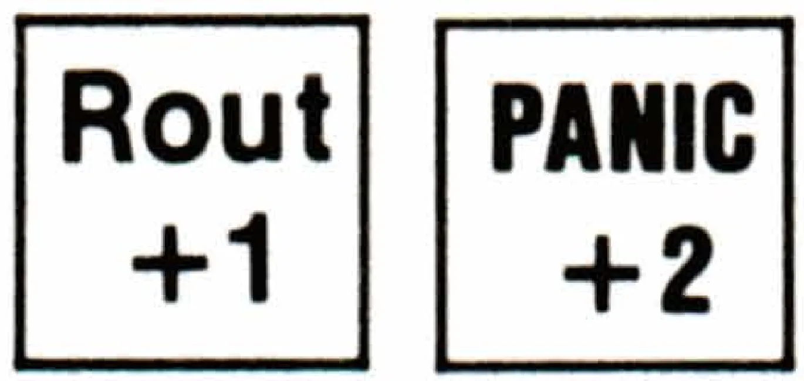
15.3 溃退/恐慌:每当一个单位撤退进入或通过一个满堆叠格(见8.13),则该撤退单位的无序度会增加一个等级。即,正常单位变为混乱,混乱单位变为溃退,溃退单位变为恐慌,恐慌单位被消灭。单位在溃退/恐慌状态下的移动速度和混乱一致。
在后续的每个移动阶段内,除守备单位(18.4)以外的所有溃退/恐慌单位必须使用他们在混乱状态下所拥有的所有移动力向避难所移动。在移动阶段内,向避难所主动移动的过程中,若是通过满堆叠的格,则移动单位不会受到额外惩罚效果。一旦溃退/恐慌单位到达指向避难所的且无敌方单位或敌方ZOC阻挡的现存道路上,则该单位必须在后续移动阶段内保持在此道路上,直到抵达避难所为止。如果该道路被敌方单位或ZOC所阻挡,则该单位可以离开这条道路,但是他必须继续向避难所移动。移动阶段内,在所有非恐慌单位结束移动之前,恐慌(非溃退)不能移动。
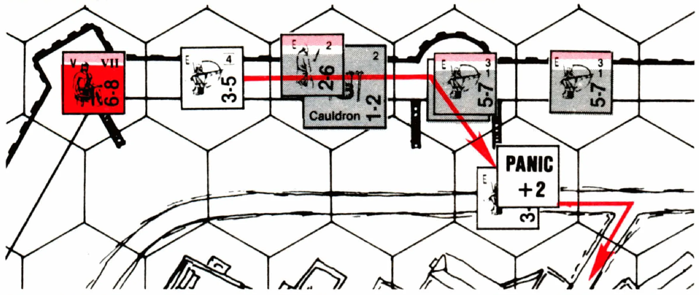
示例：如果城墙上的混乱犹太常备军的唯一撤退路径是有一个包含了一个民兵和一个大锅的城墙格,则该撤退单位会因为超堆叠限制而变成溃退状态。 [犹太方不能选择消灭民兵单位,因为它不是一个撤退单位。若是该城墙格仅包含一个大锅,则撤退的常备军可以进入或通过该格而没有任何惩罚效果]。溃退的常备军不能停留在民兵所在格,因为超出了堆叠限制,因此该常备军单位必须继续撤退。接下来的唯一撤退格是一个满堆叠的棱堡,该单位将会在这里从溃退状态变为恐慌状态。仍然超堆叠,且此时还剩3 MF,该恐慌单位必须继续撤退。犹太方若是继续沿着满堆叠的城墙格撤退就会被消灭了,但是现在刚好有了另一个选择,因此必须下走下楼梯前往避难所方向。此时,这个恐慌单位可以停止撤退并留在此格内,因为目前没有超堆叠,但是犹太方玩家不希望让他太靠近前线,因此让他继续再花1 MF来向避难所方向撤退。
15.4 避难所(Refuge):犹太避难所是圣殿区。该区域一旦被罗马控制,那么犹太方必须立即指定另一个城区作为新的避难所,并且将单位撤退至新的避难所内。若是该避难所也失去控制了,则再指定一个新的城区来作为最新的避难所。罗马的避难所是最近的地图边缘处。撤出地图边缘并不是必须的,尽管这么做可能是最优选择。溃退/恐慌单位在重整之前,必须待在避难所内,尽管他们可以在避难所内自由移动。
15.5 撤退出地图:撤退出地图边缘的罗马单位在下一突击阶段的开始时自动返回。撤退出地图边缘的犹太单位视为逃离耶路撒冷(18.92),且不能返回。
第16章 混乱效果返回目录
16.1 指挥控制(CC):混乱HQ的CC范围会减少2格。
16.2 攻击:在任何阶段内混乱单位都不能发动攻击。
16.3 云梯放置:混乱单位不能放置,维持或攀爬云梯。但是混乱单位可以从云梯顶部向下移动,或通过云梯从高架格中向下移动。
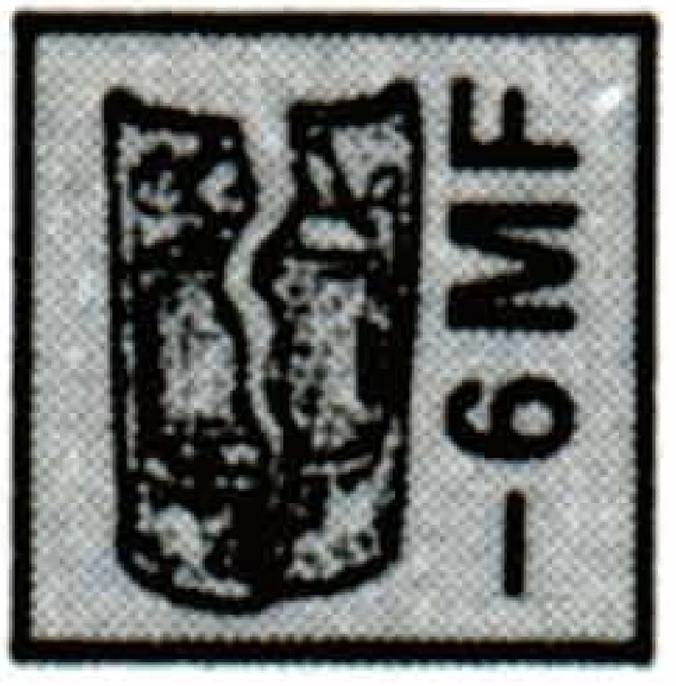
16.4 解体的龟盾:在所有混乱单位中,有能力组建或加入龟盾阵的单位只有HQ和轻装步兵(Velitae),且必须有足够的MF才行。在龟盾中变为混乱的单位可以不撤出龟盾,只要该龟盾阵型仍然保持完整即可。只要龟盾尚未满堆叠,混乱的HQ和/或轻装步兵就可以加入该龟盾中。若是一个龟盾阵中少于两个正常的重步兵,又或者龟盾中包含了恐慌单位,则该龟盾阵立即解散(Disbanded)。当龟盾阵被动解散时,要在组成单位上放置一个"-6"解体龟盾标记,以显示其中的所有正常单位都要损失6 MF。混乱单位不会承受这6 MF的惩罚。解体龟盾标记将会在下一个罗马的移动阶段内,当解体龟盾进行移动/分解时移除。若是解体龟盾中包含了正常单位的话,则解体龟盾仍然能施展ZOC,并且能够使用投射表中较低的行来防御投射武器。
16.5 移动:混乱的战斗单位使用反面(白色面)印刷的较低MF。
16.51 ZOC:混乱单位不能进入敌方ZOC。若是已经处于敌方ZOC内,则只能停留不动或从ZOC中移出。[例外:犹太人处于罗马重步兵的地面ZOC中,7.311]。
16.52 攻城器:混乱单位无法推动攻城器,也不能操纵攻城器进行破墙攻击。
16.6 ZOC:混乱单位不会对周围施加ZOC。
第17章 重整阶段返回目录
17.1 重整(Rallying):在属于玩家自己的重整阶段中,玩家必须尝试重整他的每一个混乱/溃退/恐慌的非攻城炮单位(是否要重整攻城炮单位是可选项,并非强制)。玩家为每个重整的单位投一个骰,重整表(Rally Table)上所罗列的每一条适用的drm都要用来进行投骰修正。若是重整投骰最终结果≤该单位的重整值,则表明重整成功。如果该单位只是混乱的话,则将其翻面至正常面;若处于溃退状态,则移除溃退标记;若处于恐慌状态,则将恐慌标记翻面至溃退标记。在重整时,HQ必须先进行结算,而其他的结算流程则必须循序渐进的扫过整张地图,以免疏漏。结算顺序以行为顺序,每行内则以数字为顺序(即,先结算A行,再结算B行;A1格比A2格先进行结算)。
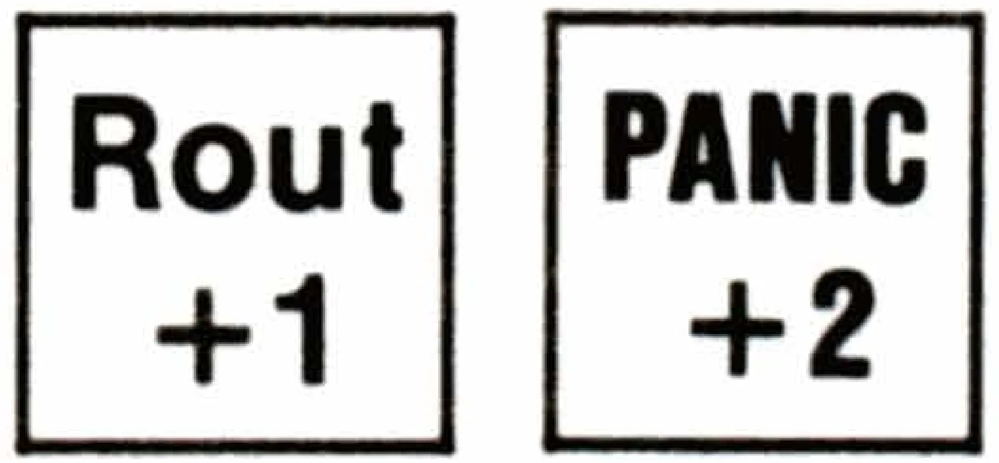
17.2 溃退/恐慌:溃退/恐慌的单位视为有额外不利因素的混乱单位。如果混乱单位的调整后的最终投骰结果为7,则会变为溃退状态,并标上相应的标记。如果混乱单位的调整后的最终投骰结果为8,则会变为恐慌状态,并标上相应的标记。如果混乱单位的调整后的最终投骰结果≥9,则会被消灭。若一个恐慌单位的重整投骰为7,则他的恐慌状态不会被提升为溃退状态,依然保持恐慌状态不变。
17.21 移动:溃退/恐慌的单位必须在他的移动阶段内用尽他的所有可用MF向避难所进行移动(15.3)。在所有非恐慌单位的移动全部完成后,恐慌单位才能开始移动。若是一个单位进入了一个包含了恐慌单位的格子内,则该单位必须立即停止移动,并在该格内结束他的移动。如果因为这个原因从而导致该格超堆叠,则最后进入的哪个单位就会被消灭。在移动阶段开始时和恐慌单位处于同一格内的单位可以离开该格内,但是必须花费两倍的进入格的移动费用。若是因为敌方ZOC/地形的原因,从而导致一个溃退/恐慌单位无法移动,则该单位必须停留在原地,直到可以移动为止。
17.22 不能进攻:若一个格子内有恐慌单位存在,则该格内的所有单位均不得以任何形式发动攻击。
17.23 防守效果:若是防守格内有溃退单位的话,近战中需要承受+1 drm。若是防守单位所在格或相邻格内有恐慌单位的话,近战中需要承受+2 drm。
17.24 重整drm:重整表上所罗列的所有重整drm都是累积的,并且适用于每一次的重整尝试。在正常敌方投射单位的射程和射线内需要承受+1 drm,并不适用于处于敌方攻城炮的射程内这种情况,但也不会因为投射单位和重整单位之间还存在着另一个强制目标从而予以免除。对于重整判定来说,相邻的,处于高度更高(2.11)的投石单位并不会被视为"投射单位"。
17.3 HQ:混乱的HQ总是处于CC范围内,但是不能正向修正任何重整尝试。HQ不能修正自身的重整投骰。若是一方的司令官(Commander)处于溃退/恐慌状态中,则其下属所有单位在重整时都必须承受+1/+2的负面修正。若是一个军团/派系的HQ处于溃退/恐慌状态中,则其军团/派系内的所有单位在重整时都必须承受+1/+2的负面修正。一个指挥官(Leader)的自身重整投骰只能被其司令官(Commander)修正。犹太攻城炮和奋锐党人不受其指挥官的影响,只受其司令官的影响。
第18章 突击阶段返回目录
在围城中,战斗不是连续的,而是间歇地爆发大规模战斗,其间有较长的准备时间。这些爆发称为突击阶段。在突击阶段之间,对局者准备下一阶段对局。战役剧本包含5个独立的突击阶段。
18.1 周期:每个突击阶段包含最多7个白天回合,但如果双方同意,可以在任意犹太近战阶段结束后提前结束。罗马方可以在己方首次控制(18.3)一块城市区域的回合内,在犹太近战结算结束后单方面宣布突击阶段结束。罗马方还可以选择延长突击阶段至多3个回合,但回合7以后的回合必须是夜间回合。
要提前结束延长的突击阶段,双方必须同意结束(在犹太近战阶段之后)。无论双方意愿如何,突击阶段在第10回合犹太近战结算后结束。
18.11 退让:在犹太近战结算结束后,犹太方可以承认有10个罗马单位的任一城市区域为罗马控制,即使罗马方还没有满足控制条件。为此,犹太方强迫罗马方决定是否在此时点终止突击阶段,而且还可能达到剩余征集能力的25%而触发逃跑尝试。如果拒绝在该时点结束突击阶段,罗马方丧失单方面结束当前突击阶段的能力,直到再一次首次控制一个城市区域。在退让中,只要罗马单位保留在该区域内,犹太方放弃在该突击阶段该区域的所有未来后备军(18.61)和该突击阶段内控制该区域的能力。犹太方退让高于通常的罗马控制条件。
18.12 重整:所有幸存单位在突击阶段开始时为正常状态。[例外:罗马攻城炮可以以混乱面开始。]
18.13 破墙损伤:此前突击阶段造成的破墙损伤保留,但可以因犹太人修复尝试(见19.6)而减轻。
18.2 夜间回合:夜间回合有以下变化:
18.21 射击阶段:射击限于相邻目标。高架格上的犹太大锅,民兵和奋锐党人仍可以投石(10.2)。仍可以执行破墙攻击(10.1)。
18.22 重整:在敌方投射单位射程和射线内的重整drm仅适用于与敌方正常投射(非攻城炮)单位相邻时。但是,在夜间回合所有重整尝试获得+1drm。
18.23 ZOC:犹太单位可以在地面格撤出重步兵的ZOC。
18.24 CC:所有HQ的CC半径减少2格。
18.25 近战:犹太单位夜间近战都适用+1drm。
18.26 征集:犹太后备激活投骰结果(18.611)在夜间修正+1。
18.3 城墙和城市区域的控制:耶路撒冷由城内城墙分成10个区域。如果在突击阶段结束时,罗马方不能满足一个城墙或区域的控制条件,则犹太方仍控制该区域且可以在下一突击阶段开始时重新部署。在每个突击阶段结束时,双方必须从未控制区域撤出己方单位[例外:犹太城堡;18.34]。格控制定义为最后占据该格的一方。此前未被罗马控制的城市区域在突击阶段开始时视为犹太控制。罗马控制城外所有格。
18.31 泰罗普城,新城,大卫城,上城和下城的控制:如果在任意犹太近战阶段结束时,罗马方在某区域内至少有10个正常重步兵单位(不包括高架格内的单位)且控制至少15个非大厦建筑格,罗马方控制该区域。这里的控制定义为建筑格最后的占据单位。
18.32 希律王宫,圣殿区的控制:在任意犹太近战阶段结束时在这些区域内至少有10个正常重步兵,且控制至少4个大厦格,罗马方才能控制该区域。
18.33 三角城堡,雅法城门,安东尼亚城堡建筑群:罗马方需要在任意犹太近战阶段结束时同时占据这些区域外围的所有城堡格(即使已破墙)。
18.34 城堡:犹太人通过城市下水道迷宫的渗透无法被阻止,这甚至使得拆解后的攻城炮也能在突击阶段之间移动。在每个突击阶段结束时,至少一个犹太单位占据的城堡格仍在犹太控制下,即使罗马方已经控制相邻区域和/或城墙。在下一突击阶段配置时,犹太方可以在这些城堡内部署其他单位或将城堡内单位撤退至犹太控制的区域。这不能允许犹太方占据其城堡和其控制城市区域之间的棱堡和城墙,即使罗马在前一突击阶段内没有占据这一特定部分城墙。
18.35 城墙:与犹太控制城市区域相邻城墙段的所有格(包括城堡,棱堡和城门),无论楼梯朝向如何,在突击阶段开始时视为犹太方控制。这意味着罗马方在突击阶段结束时必须放弃这些高架格。罗马控制城墙是两侧城市区域均为罗马控制的城墙[例外:犹太占据的城堡,见18.34]。
18.36 重新获得控制:如果罗马方未能满足某区域的控制条件,犹太方可以通过满足相同的控制条件来重新控制该区域,但犹太方可以使用轻步兵和已清理的建筑格(18.37)来满足条件。犹太方通常仍控制被绕过的城堡以及内墙段和城门,用于向失守区域发动突围,因此罗马方必须谨慎地保持适当守备单位,以防止犹太方收复已控制区域。如果犹太方重新控制某区域,将在下一突击阶段开始时再次控制该区域的城墙,但不能从这些区域获得补员或后备。
18.37 清除:罗马控制区域内的所有建筑格和道路在突击阶段之间均被夷平,此后视为平地地形[例外:大厦绝不能清理]。
18.38 楼梯:突击阶段之间,犹太方在失去区域和控制区域之间的城门外侧入口格修建新的楼梯。犹太方还可以给没有地面出口的每个棱堡/要塞修建一个临时楼梯,并用放置云梯标记代表楼梯。这些临时楼梯在所有方面均视为通常的楼梯。
示例:在犹太方开始时控制希律王宫的突击阶段内,O58-P58入口格边视为固有楼梯。如果开始时罗马方控制希律王宫,P58-Q58也变成固有楼梯。
18.4 守备单位:圣殿区,希律王宫(包括三角城堡和雅法城门建筑群)和安东尼亚城堡都有永久守备单位,以紫色条识别,初始数量如下:
| 区域 | 缩写 | 常备军 | 奋锐党人 |
|---|---|---|---|
| 安东尼亚城堡 | AF | 4 | — |
| 希律王宫 | HP | 6 | — |
| 圣殿区 | TQ | 8 | 2 |
其他犹太单位可以进入守备单位区域,但守备单位绝不离开指定区域;如果被迫撤退出指定区域则被消灭。守备单位总是在CC状态且可以与任意派系单位堆叠在一起而没有惩罚,就像奋锐党人一样。溃退/恐慌的守备单位不必向避难所移动。只有指定区域仍在犹太控制下,守备单位才能抽出作为补员。如果其指定区域被罗马控制,守备单位必须占据该区域的犹太控制城堡,或在当前突击阶段结束时永久消灭。圣殿区和安东尼亚城堡有4格重叠,两个区域的守备单位均可进入这些格。
18.5 罗马补员:在对局中消灭的罗马战斗单位计算胜利分数(18.91)。在每个突击阶段结束时,随机抽取一定比例(向下取整)的所有消灭战斗单位[例外:HQ],用于下一突击阶段(见19.3)。其余消灭的战斗单位放在一边,在当前突击阶段计算伤亡分数后返回死亡堆并抽取补员。因为不同规模单位的算子大小不同,可以用空白算子替代被消灭的5/8英寸算子,以保证随机抽取。
18.51 攻城器:在除第一个突击阶段以外的所有突击阶段开始时,罗马方可以移除一个攻城锤和一个攻城塔来换取一个装甲攻城塔,反之亦然。
18.52 HQ:除了司令官以外的所有HQ在下一突击阶段自动补员且不计在损失返回比例中。所有消灭指挥官在返回对局时,每次补员损失一格CC范围。司令官不能补员(即使Titus被消灭,其副手Tiberius Alexander将在下一突击阶段以10格CC范围进场)。如果Tiberius也被消灭,则罗马方没有政治上可靠的司令官,因而撤围,犹太方胜利。
18.6 犹太补员:所有被消灭的犹太单位(除了HQ和罗马控制区域的守备单位)放进死亡堆,在下一突击阶段开始前从中随机抽取补员。每个犹太指挥官在下一突击阶段自动补员且减少1格CC范围。司令官Eliezer ben Yair不能补员。未抽到作为补员的非攻城炮单位可以用作后备军。未成为补员的单位总是放在死亡堆里,以便下一突击阶段抽取用。犹太方获得补员比例等于仍控制的征集区域比例(舍去所有余数)。城市内每个区域有以下征集补员值:
| 区域 | 补员征集比例 |
|---|---|
| 圣殿区 | 30% |
| 上城 | 15% |
| 下城 | 15% |
| 泰罗普城 | 10% |
| 新城 | 10% |
| 大卫城 | 10% |
| 安东尼亚城堡 | 5% |
| 希律王宫 | 5% |
示例:如果犹太方在第一突击阶段内损失38个单位及新城,将在第二突击阶段开始前获得34个补员单位。(38×0.9=34.2)。
18.61 后备军:后备军是从保留在地图外未登场单位中获得的犹太补员(天生存在于包含非大厦建筑格的区域内建筑格里),且直到罗马军队攻击本区域才登场。罗马单位已经占据或进展或投射攻击一个区域内至少两个格或进入包含非大厦建筑格的区域(包括其城墙)后,在每回合犹太重整阶段开始时,犹太方可以激活该区域内的部分后备军。在其后每回合的犹太重整阶段开始时,犹太方可以继续激活该区域的后备军,直到犹太近战阶段结束时罗马方控制该区域。
18.611激活后备军:对于包含至少2格被占领或被近战或投射攻击的每个建筑区域,每回合可以掷1个骰;对于罗马进入高架格内(不是仅在高架格上)且包含非大厦建筑格的每个区域,每回合可以掷2个骰。投骰结果为重整阶段内释放的犹太后备军数量,并受到以下修正:
| drm | 原因 |
|---|---|
| +1 | 夜间回合 |
| +1 | 上城,下城或大卫城内激活 |
| +1 | 犹太方控制圣殿区且没有罗马单位在其外墙 |
| +1 | 新城或泰罗普城未被夷平 |
| -2 | 罗马方控制圣殿区 |
然后犹太方分别执行多次掷一个骰,投骰次数等于最终激活投骰结果。按照下表,每次投骰激活该区域的一个对应单位。
激活表
| dr | 单位 |
|---|---|
| 1-3 | 民兵(2-6) |
| 4-5 | 常备军(5-7) |
| 6 | 奋锐党人(7-7) |
激活单位可以来自犹太方选择的任意派系。
18.612 区域限制:包含建筑格的每个区域的后备军有数量限制。区域后备军上限如下:
| 区域 | 后备军上限 |
|---|---|
| 新城 | 24 |
| 泰罗普城 | 28 |
| 大卫城 | 35 |
| 上城 | 40 |
| 下城 | 40 |
必须使用记录板记录每个区域可用的后备军,一旦激活一个单位,则在记录板上记录。当记录数量等于该区域的后备军上限,则不在能征集后备军。如果特定类型单位算子没有,则用下一低等级单位替代。如果后备池内没有足够单位算子,则从死亡堆里拿取。如果仍没有可用单位,则该激活失败且失去该部分激活比例。
18.613后备补员:犹太方更熟悉这座城市,因而能通过小巷和下水道的迷宫隐藏骨干和/或躲在罗马军队后方。因此,激活的后备军可以在堆叠限制内放置在受影响区域内没有或不与罗马单位相邻的任意非大厦的建筑格——即使罗马方控制该格。
18.62 犹太增援:在第2到第5突击阶段的每次配置前,犹太方获得前一突击阶段陷落城市区域(包括根据规则18.11退让给罗马的区域)的所有未投入后备(18.61)。如果算子组合不足以支持全部增援,则多余增援丧失。
18.7 外部影响:耶路撒冷围城战发生在罗马帝国内部动荡以及与帕提亚帝国接壤边境紧张的背景下。Titus的失败可能导致对Vespasian皇帝的政变或帕提亚帝国入侵。外部影响表反映了多少外部可能因素会影响围城的进程,以及反向影响。如果在某突击阶段开始时,罗马方未能控制本突击阶段所需的城市征集值比例,或整个围城战超出25周(见19.1),内战或帕提亚入侵爆发,将导致解围,而犹太方获胜。
外部影响表
| 突击周期 | 所需城市补员能力% |
|---|---|
| 第2 | 10% |
| 第3 | 20% |
| 第4 | 45% |
| 第5 | 70% |
| 游戏结束 | 85% |

18.8 坡道:坡道是在与高架格相邻的单个地面格内从地面到高架格的一条斜坡工事。坡道只能从两端进入,就像斜坡一样。从坡道一端进入或退出只允许到或从相邻的坡道格。只有步兵可以进入坡道格。在坡道上的正常步兵只向直接相邻的地面格内施加地面高度ZOC(也进入相邻的坡道格),反之亦然。在坡道上的单位以通常近战值进行近战。在高架格上的防御单位仍然获得加倍或三倍的近战值,但没有来自非高架格攻击的-1drm。在坡道上的单位可以与任意相邻高架格上的单位近战,反之亦然。
18.81 建造坡道:在犹太攻城炮配置前,罗马方可以在不在坑道格上、且不与坑道格相邻的任意城外格,或罗马控制区域内与高架格相邻的控制地面格内建造坡道,以至于坡道一边指向地面格,另一边指向高架格。坡道必须互相相邻进行建造,以便相互边互连,且联合不超过5格。一旦建造,坡道不能移动。坡道仅在一个突击阶段前可以建造(19.4)。
18.9 胜利分数:假定罗马方未因外部影响(18.7)或哗变(18.94)而失败,犹太方必须获得1500分来取胜。犹太方总分越高,耶路撒冷围城战对于罗马和Flavian王朝的成本越高,后者需要快速平叛,以压制其它地方的犹太人抵抗,削弱Parthian的入侵意愿和对皇帝Vespasian的阴谋。犹太方因造成罗马伤亡(18.91),逃离城市(18.92)和在游戏结束时保持最后阵地(18.93)而得分。
18.91 伤亡:犹太方消灭罗马单位按以下计分:
| 消灭对象 | 分数 |
|---|---|
| 消灭步兵/骑兵(非HQ)的每个正常近战值 | 1分 |
| 每个攻城炮单位 | 10分 |
| 每个攻城器 | 20分 |
| 每个指挥官 | 50分 |
| Titus | 200分 |
在不同突击阶段消灭同一单位可以重复得分。罗马补员的返回不消除所得伤亡分数。
18.92 逃离:一旦耶路撒冷的沦陷不可避免,犹太人寻求逃离被围困的城市,以在其它地方继续抵抗,其中马萨达只是最著名的例子。在犹太补员率达到25%或更少时,犹太单位可以尝试逃离。只要移动阶段开始在高架格上,尝试逃离的正常犹太步兵可以花费4MF从高架格移动到相邻城外地面格上。城外的罗马骑兵和盟邦军单位在攻击城外犹太单位时,免于CC限制。
18.921周期:当有犹太HQ在城外或地图外的逃离过程中,罗马方不能单方面宣布突击阶段结束。
18.922飞奔:移动阶段开始时和结束时都在罗马ZOC以外的犹太单位可以在斜坡格以1MF(而非3MF)向下移动。为满足这一特殊移动速度,该犹太单位必须沿坡顶相反方向直接向最近的平地格移动。所有使用飞奔移动的单位在移动阶段结束时变为混乱。
18.923逃离分数:逃出地图外的犹太单位获得等于其印刷正常近战值两倍的逃离分数。一个指挥官逃离获得100分。司令官Eliezer ben Yair如果逃离获得250分。逃离的犹太单位从游戏中永久移出,且不能在以任何形式返回地图。
18.93 最后阵地:犹太方在第5突击阶段结束时因以下条件获得最后阵地分数:
| 条件 | 分数 |
|---|---|
| 每占据一个犹太城堡 | 10分 |
| 如果Eliezer ben Yair仍在地图上 | 50分 |
18.94 哗变:如果在任意突击阶段内犹太方获得400损伤分(18.91),罗马军团哗变,犹太方获胜。
第19章 突击阶段的中间阶段返回目录
19.1 概览:在每个突击阶段前,犹太单位放置在地图上之前,罗马方决定将使用多少周准备突击。在做此决定时有多个考虑因素。一方面,准备时间越长,所获得的补员越多,工程活动成功的可能性越大(将更容易破坏城墙)。另一方面,准备时间过长,整个战役拖延越长,根据犹太胜利分和规则18.7的罗马内部动乱和Parthian入侵的可能性越大。如果战役超过25周,犹太方获胜。
准备周期表
| 突击前周数 | 1 | 2 | 3 | 4 | 5 | 6 | 7 | 8 | 9 |
|---|---|---|---|---|---|---|---|---|---|
| 罗马补员% | 15 | 20 | 25 | 30 | 35 | 40 | 45 | 50 | 60 |
| 装甲攻城塔≥ 7/12 drm | - | - | +1 | +2 | +3 | +4 | +5 | +6 | +7 |
| 犹太方分数 | - | 10 | 20 | 30 | 50 | 80 | 120 | 170 | 230 |
| 坡道建设 | - | - | 1 | 2 | 3 | 4 | 5 | 5 | 5 |
| 坑道作业drm | NA | -5 | -4 | -3 | -2 | -1 | 0 | +1 | +2 |
| 犹太修复drm | -5 | -4 | -3 | -2 | -1 | 0 | +1 | +2 | +3 |
19.2 坑道作业:如果罗马方决定在进攻前至少等待2周,可以进行坑道作业。在犹太方秘密记录其攻城炮位置后,罗马方指定下一突击阶段前的准备周数。然后执行一次坑道投骰,并查询准备表获得相应坑道drm。
坑道投骰结果以准备表列出的坑道drm进行修正。如果结果为正数,则为在突击阶段可削弱和/或崩塌高架格的竖井数量(至多4个)。
然后罗马方根据规则19.21-22投骰判定每个完成竖井造成的损伤——消灭崩塌格的攻城炮。如果竖井数量少于4个,罗马方可以推迟突击,然后移到准备表上下一周,并以更有利的坑道drm执行一次新的坑道投骰,以获得更好结果。为改进其状况,罗马方必须比前一次坑道投骰获得更多竖井,因为在判定是否获得新竖井时,必须从新投骰结果中减去前次投骰已完成的竖井数量。罗马方可以继续推迟突击,直到获得所希望的结果。但是,推迟突击不仅会增加犹太方分数,还会在完成第一个竖井之后每增加额外1周,使犹太方获得1次额外修复投骰(19.6),以及增加幸免于新暴露竖井结算的攻城炮重新定位机会。
在结算推迟突击的下一坑道投骰前,作为暴露坑道作业的反应,犹太方可以在非破墙高架格重新配置幸存的攻城炮。
19.21 竖井目标:在挖成一个或多个竖井后,罗马方现在必须在当前突击阶段开始前决定每个完成竖井的地点。每个当前突击阶段挖成的竖井必须在特定罗马HQ的11格范围内,且该军团幸存的攻城炮在突击阶段开始时至少相距6格。每个军团HQ可以是一个竖井的源头。地图外配置的单位仍必须在目标格的11格范围内,以他们的进入格距离来计算。11格路径不能通过任何耸立的高架格,但不必为坑道军团占据的同一城市区域一部分。然后对于每个竖井,罗马方投骰判定受影响的高架格数量。宣布的目标格和两个相邻高架格总是受到影响。投骰结果4,5或6,则沿着城墙的两个方向各增加一格。因此,每个成功竖井将影响三或五个高架格。如果竖井影响只有三个格,接下来的每格损伤投骰结果将按等于攻城投骰结果的数量进行修正。
| 作业掷骰结果 | 影响格数 | 损伤DRM |
|---|---|---|
| 1 | 3 | +1 |
| 2 | 3 | +2 |
| 3 | 3 | +3 |
| 4-6 | 5 | - |
19.22 高架格损伤:罗马方对于每个坑道作业格投骰一次(2个骰子),以判定损伤程度。投骰结果大于或等于该格破墙防御值(减去已承受损伤)导致该格内破墙(缺口)。那些未崩塌的格放置等于损伤投骰结果的损伤标记,以反映削弱状况。已成为缺口的格不能再受损伤,但仍可以算作受到攻城投骰(19.21)结果影响的格之一。
示例:战役剧本开始时,罗马方担心在犹太城墙没有缺口情况下进攻,因此决定坑道作业。挖掘三周后,执行一次坑道投骰结果4,修正-4drm后得到0。这没有效果,罗马方决定继续挖掘到第四周。 (如果投骰结果5,修正后最终结果将为1,则完成1个竖井。)第四周投骰结果为4,修正-3后得到1。因此他现在必须结算这一完成竖井的损伤效果。指定完成竖井位置为QQ36——Susa门。QQ36的工程投骰结果为1,导致QQ36和两个相邻城墙格损伤。现在对于每个坑道作业格投骰,对于QQ37,QQ36和QQ35结果分别为7, 8,9,并修正+1,结果导致前两格损伤,后一格崩塌。在QQ35放置缺口标记,在QQ37和QQ36分别放置损伤8和9标记。罗马方决定再等一周,尽管这允许犹太方执行一次修复投骰以修复损伤的城墙。然而,罗马方的耐心获得一个坑道投骰结果4,修正-2后为2,因此又完成一个竖井,位置指定为要塞DD19。DD19的工程投骰结果为4,坑道作业格为DD19,CC20,EE19,BB21和FF18。没有损伤DRM。FF18的损伤投骰结果为3,导致放置损伤3标记。EE19为6,崩塌,放置缺口标记。要塞DD19投骰结果为9,放置9点损伤标记。CC20投骰结果7,导致崩塌。BB21投骰结果4,放置4点损伤标记。
19.3 罗马补员:前一突击阶段内消灭的罗马单位可以返回比例,由准备表所决定。如果下一突击阶段前有5周,则可以获得随机抽取的损失单位的35%补员。罗马方可以在决定是否发动突击前执行该随机抽取。如果决定推迟突击,在后续周里可以获得两个周数之间的增加补员差值。不能重新抽取全部数量。
19.4 坡道:罗马方每次对局可以修建1个坡道。可修建坡道最大格数为5。在给定突击阶段可修建的最大格数由准备表和规则18.81决定。
19.5 装甲攻城塔:罗马方每个突击阶段可以执行一次建造投骰来建造装甲攻城塔。在宣布突击准备周数以后执行投骰。如果建设投骰结果加上相关drm以后大于等于7,可以在当前和所有后续突击阶段增加1个新的装甲攻城塔。如果最终修正投骰结果大于等于12,可以增加2个新的装甲攻城塔。在执行建设投骰前,罗马方可以指定,如果建设投骰成功,是否以三个新的攻城塔和/或攻城锤(只能替换早先的损失)代替一个装甲攻城塔。
19.6 修复:除了第一个突击阶段,在每个突击阶段开始前,罗马方初始配置前,犹太方可以执行一次修复投骰(2个骰子)。结果是可以从己方控制高架格上移除的损伤点数。犹太方不能修复缺口,非犹太控制城墙段上的孤立城堡,对于任何一个高架格也不能修复超过半数损伤。修复投骰受准备期长短决定的修正参数修正。如果罗马方在结算完成竖井损伤后推迟突击,犹太方对推迟的每周执行一次额外修复投骰,以确定可以从控制格移出的损伤点数——包括由新发现竖井造成的损伤。适用同样的修复限制。即使某格之前已经修复到最高限(损伤的一半),在推迟的每一周内,仍可以修复剩余损伤的一半。
19.7 清除高架格:在清理建筑格(18.37)之外,在新控制的区域,罗马方可以在突击阶段之间的每周内沿己方控制城墙破坏一个高架格。这一破坏格不能在犹太控制高架格的2格范围内(包括绕过得要塞)。
推荐阅读 RECOMMENDED READING
The GENERAL is recommended reading for any wargamer, but Volume 26, Number 4 (August, 1990) should be of particular interest to players of SIEGE OF JERUSALEM as it will feature the game with in-depth analysis to include Designer's Notes, Series Replay, tips on strategy and tactics of both sides, a contest, Question Box, and new scenarios. For ordering information send a SASE to TAHGC, 4517 Harford Rd., Baltimore, MD 21214 or call 1-800-999-3222 Toll Free to place an order with any major credit card.
制作名单 CREDITS
RESEARCH & DESIGN: Fred Schachter, Steve Weiss
GAME DEVELOPMENT: Don Greenwood, Bruno Sinigaglio
COVER ART: George Parrish
COUNTER ART: Steve Weiss
MAPBOARD: Charles Kibler
PLAYTESTING: Dave Williams, Rex Martin, Ray Pfeiffer, Joshua Gottesman, Craig Goode, Mark Herman, Chris Cornaghie, R. Neil Moran, George Miksad, P. J. O'Neill, Stephen Geisinger
TYPESETTING: Colonial Composition
PREP DEPT. CO-ORDINATOR: Lou Velenovsky
PRINTING: Monarch Services, Inc.
附录A 剧本集返回目录
本附录整合《耶路撒冷之围》官方剧本集《Siege of Jerusalem Scenario》全部五个剧本：入门剧本「加路斯的攻击」、战役剧本「攻城战」、「起义」、「罗马迅猛的反击」与「突击圣殿」。文本以原版 PDF 文本层为底校对整理，游戏术语沿用全书译法。剧本卡速查数据见附录C与附录D。
入门剧本：加路斯的攻击（Intro Scenario: The Assault of Gallus）
公元66年11月，杰西乌斯·弗洛鲁斯（Gessius Florus）的守备部队被清除出耶路撒冷的六个月后，叙利亚总督塞斯提乌斯·加路斯（Cestius Gallus）率领精锐的第十二军团来到耶路撒冷。其老练的军队远优于弗洛鲁斯的部队，但仍然不足以发动全面进攻。然而，加路斯选择进攻薄弱一环——阿格瑞帕（Agrippa）城墙（游戏中表现为北城墙）。该城墙围绕一块大部分为开阔地的区域，有利于发挥罗马军团的优势。如果其进攻成功，起义将注定被镇压。但罗马人没能达成足够目标，而且当获得一支宗教战士解救军队到达的警告后，加路斯贸然下令向西撤退。在罗马军团沿 Beth Horon 路撤退时，遭到 Eliezer ben Yair 率领的宗教战士增援的痛击，失去其投射武器运输车队。雷霆军团（第十二军团）直到四年后才再次出现在耶路撒冷城下。
犹太军：Giora 派和两个宗教战士单位因担任南城墙守卫而暂时移除。本剧本仅限于北城墙（从 Q50 到女门到 QQ31）。剩余犹太部队首先部署在新城内或其外墙内。不使用后备军（18.61）和守备队（18.4）。也不允许罗马部队进入守备区（即，罗马部队绝不能进入 P50 或 QQ32）。
| 单位 | 战力-士气 | 数量 |
|---|---|---|
| Eliezer ben Yair（领袖） | 3-10 | 1 |
| 大锅（Cauldron） | 1-2 | 7 |
| 重步兵（Mass Infantry） | 5-7 | 1 |
| 轻步兵（Light Infantry） | 2-6 | 2 |
| 重步兵（Mass Infantry） | 3-10 | 1 |
| 重步兵（Mass Infantry） | 5-7 | 1 |
| 轻步兵（Light Infantry） | 2-6 | 1 |
| Yohanan ben Guryon（领袖） | 3-10 | 1 |
| Yohanan ben Levi（领袖） | 5-7 | 6 |
| 重步兵（Mass Infantry） | 2-6 | 3 |
罗马军：罗马方后手布置在耶路撒冷城外任意地点，但离任意高架格至少5格。罗马方不能使用坑道作业（19.2）。本剧本从罗马射击阶段（4.12）开始。
| 单位 | 战力-士气 | 数量 |
|---|---|---|
| 加路斯（Gallus，指挥官） | 4-10 | 1 |
| 攻城塔（Tower） | — | 1 |
| 攻城锤（Ram） | — | 4 |
| 石弩（Catapult） | 1-0 [11] | 1 |
| 弩炮（Ballista） | 1-0 [12] | 1 |
| 投石机（Onager） | — | 6 |
| 重步兵（Mass Infantry） | 3-9 [13] | 10 |
| 重步兵（Mass Infantry） | 2-10 [14] | 10 |
| 重步兵（Mass Infantry） | 1-9 [15] | 9 |
| 重步兵（Mass Infantry） | 3-9 [13] | 6 |
| 重步兵（Mass Infantry） | 2-10 [14] | 3 |
| 重步兵（Mass Infantry） | 1-9 [15] | 6 |
回合记录轨：1–10（仅前7回合可为白昼回合）。
特殊规则：
1、最少部队：犹太方必须在从 Q50 到 QQ29 的北城墙每个城堡和棱堡保持至少一个单位。在其移动阶段结束时，犹太方绝不能让一个城堡或棱堡少于最少部队要求，除非因战斗结果被迫撤退出。一旦这样的格因战斗结果而空缺，则无需再占领。从第四回合开始，该最少部队要求取消。
2、增援：Giora 派可以从第四回合开始进入新城。犹太方在其移动阶段开始时掷骰，然后随机抽取掷骰结果数量的单位，加上 Giora 指挥官，作为本回合进入新城的南墙部队。犹太方然后再掷骰判定进入地点：奇数结果，进入点为塔迪门（Tadi Gate，QQ33）；偶数结果，进入点为 Q49。如果进入点被阻挡，则必须从另一个门进入。这一过程在后续每个回合内重复，直到 Giora 派所有单位都已进入新城。
3、胜利条件：本剧本持续十个回合（仅前七个回合可以是白天回合），或罗马方达成其胜利条件或退却条件（视哪个先发生）。如果罗马方在任意犹太近战阶段结束时控制（18.3）十个建筑格，则罗马方获胜。犹太方以避免罗马达成胜利条件为获胜。
玩家笔记（犹太方）：本剧本是全战役剧本的微缩，包括一些同样的对局原则，应当作为尝试全战役之前的先导。犹太方必须防守城墙，因为一旦进入城内，犹太方缺少部队阻止罗马人。然而，罗马方只有一个军团，且时间和人力都不允许分散进攻或使用坑道作业破墙。但是，最少部队规则限制犹太方向进攻点集中兵力。因此，宗教战士应当放在中央，以便快速向任意方向转移。东墙和西墙可以放少量部队，因为斜坡可以延缓进攻使得援助来得及到达。弓箭手和大锅应当沿攻击最有可能出现的北墙部署。失去几段城墙不可避免，但不足以致命。城墙上的罗马部队虽然不容易赶走，但不能堆叠足够高以攻入防守良好的棱堡，因此也无路可走。棱堡和城堡应当由宗教战士防守。即使失去一个棱堡，只要该漏洞不变得很大或过早发生，也足以阻挡罗马人通过缺口或楼梯冲入。投射火力应当集中用于任何缺口之后。一旦罗马人在城墙内组成龟盾，几乎不可能驱逐他们。
（罗马方）：罗马方必须谨慎筹划其初始部署，因为罗马方缺少时间和人力围绕城墙进行后期调动。他应当选择远离犹太增援且后方有便于重装步兵三单位堆叠的平地的城墙段。罗马方不能等待攻城锤撞开城墙。必须立即进攻，在犹太人集中弓箭手之前在进攻点达成局部优势。虽然夺取完好城门可获得极大奖赏，但这些城门防守严密，而且犹太部队可以安全地从城门出击，发动骚扰性近战。最好选择防守薄弱的城墙段，可以使攻城锤受到最小干扰。本剧本很少能在不破墙情况下取胜。云梯和攻城塔应当保留，以便给城墙上混乱单位提供撤退手段。夺取城墙除了有助于夺取棱堡和通往地面的楼梯以外益处很少。罗马轻步兵和投射部队应当集中火力打击可能进行城墙上驱逐的任何威胁。组成龟盾可以减少重步兵损失，但将严重限制重步兵在进攻上的使用。知晓何时组建和解散龟盾是判别投射火力损伤和权衡进攻机会的关键。这可能是掌控一个军团诸多要素并打造成优秀战争机器的最重要一个要素。
攻城战（The Full Siege Campaign Game）
本作再现了公元70年春至夏罗马大军围攻耶路撒冷。犹太人虽然在数量处于劣势，训练与装备也不足，但如同 Flavius Josephus 所言，在“对自由不可侵犯的信念”驱动下，他们毅然决然地发起了反抗。犹太玩家扮演由狂热的宗教战士率领的、为了自由而战的犹太战士。他们的领袖 Eliezer ben Yair 在四年间残酷的战斗中非常明白自己的军队无法在野外对抗装备精良、纪律严明的罗马军队，因此他将一切希望寄托在了耶路撒冷坚固的城墙——无论失败后是成为奴隶还是战死，他都将以无比的勇气去面对。罗马军玩家扮演弗拉维王朝第一任皇帝苇斯巴芗（Vespasian）的儿子提图斯（Titus）。弗拉维家族在公元69年充满血腥的罗马权力斗争“四皇帝之年”后登上了权力的宝座。他以上东部行省作为权力的基座，其中包括“帝国的粮仓”埃及，这些地域都由提图斯指挥下的军团控制着。因此，镇压这场犹太人发起的叛乱迫在眉睫。一旦他们长期被耶路撒冷围城所束缚，那么很可能出现新的叛乱以及外国的干涉。特别是后者：东部国境地带被抽调了大量罗马军队投入这场犹太战争，这些地域只能由原住民组成的部队防御，很可能招致帕提亚人的入侵。因此，必须果断地征服耶路撒冷来巩固弗拉维王朝的地位。
部队配置：
1. 犹太玩家从此时起开始计算突击期间的补充与增援（只在第2–5突击期间）。
2. 罗马玩家宣布是否建设斜道（坡道），如果建设的话放置最初的斜道。
3. 犹太玩家秘密记录炮兵的位置。如果希望的话，犹太玩家在放置剩下的部队时可以加入其它单位。然后他在每个被绕过但仍控制的城堡放置一个任意类型单位，希望在突击时期开始时占据。
4. 罗马玩家宣布本次突击准备周期所耗费的周数。犹太玩家投修复骰子，并根据周期修正后的修复点实行修复。之后，罗马玩家根据突击准备表（附录B）掷骰来确定各类状况。罗马玩家决定突击开始的话，将得到的补充放在手边。如果罗马玩家决定延迟突击的话，犹太玩家可以指定任何一个高架格投掷追加修复骰子，并可以再次变更隐藏的全部炮兵配置——这些炮兵只限至今为止未因坑道造成的缺口所破坏的炮兵。同时，可以放弃已经被孤立的要塞并转移这些要塞中的单位。
5. 最初罗马军队放置在地图之外，又或者在城外侧离犹太军队的城墙5格距离外放置。从第2突击期间开始，可以放置在罗马军队控制下的市街区域。此时，城外侧的单位必须放置在除去孤立的城堡以外、距离犹太军队控制下的高架格5格以外的地方。城内侧的单位不能放置在犹太单位的邻接处。罗马军队由提图斯与4个军团组成，各自按以下方式编成：
| 单位 | 战力-士气 | 数量 |
|---|---|---|
| 提图斯（Titus，指挥官） | 4-10 | 1 |
| 重步兵（Mass Infantry） | 3-9 | 10 |
| 重步兵（Mass Infantry） | 2-10 | 10 |
| 重步兵（Mass Infantry） | 1-9 | 10 |
| 投石机（Onager） | 2-10 | 6 |
| 骑兵（Cavalry） | 3-15 | 3 |
| 攻城器械（每个军团） | 战力-士气 | 数量 |
|---|---|---|
| 攻城塔（Tower） | 1-7 | 6 |
| 攻城锤（Ram） | 1-5 | 3 |
| 石弩（Catapult） | 1-0 | 4 |
| 弩炮（Ballista） | 1-0 | 3 |
| 投石机（Onager） | 1-0 | 6 |
| 石弩（Catapult） | 1-0 | 6 |
6. 罗马玩家配置完成后，犹太玩家根据记录放置炮兵，其他部队根据自己的意愿放置在控制下的高架格以及市街内。犹太玩家开始时的部队按以下编制：
| 单位 | 战力-士气 | 数量 |
|---|---|---|
| Eliezer ben Yair（领袖） | 6-10 | 1 |
| 大锅（Cauldron） | 1-2 | 13 |
| 石弩（Catapult） | 1-0 | 7 |
| 石弩（Catapult，紫色） | 1-0 | 2 |
| 投石机（Onager） | 1-0 | 8 |
| 弩炮（Ballista） | 1-0 | 4 |
| 重步兵（Mass Infantry） | 5-7 | 2 |
| 重步兵（Mass Infantry） | 5-7 | 8 |
| 重步兵（Mass Infantry） | 5-7 | 4 |
| 重步兵（Mass Infantry） | 5-7 | 6 |
| 重步兵（Mass Infantry） | 2-6 | 16 |
四个犹太党派按以下编制加入：
| 党派（颜色） | 领袖 | 单位 |
|---|---|---|
| 本·古里昂派（浅绿） | Yohanan ben Guryon 3-10 [1] | 重步兵 5-7 [10]、重步兵 2-6 [6] |
| 本·列维派（浅蓝） | Yohanan ben Levi 3-10 [1] | 重步兵 5-7 [10]、重步兵 2-6 [18] |
| 本·西蒙派（深蓝） | Eliezer ben Shimon 5-7 [1] | 重步兵 2-6 [6]、重步兵 2-6 [12] |
| 本·吉奥拉派（深绿） | Shimon ben Giora 3-10 [1] | 重步兵 5-7 [12]、重步兵 2-6 [18] |
7. 犹太玩家执行他的射击阶段（罗马玩家跳过射击阶段）。接着突击期间的第1回合由罗马玩家的重整阶段（4.11）开始。
突击准备表、犹太预备激活修正、坑道损害、激活表与区域表见附录D；与游戏流程相关的完整中文矩阵见附录B。
起义（The Rebellion）
公元66年6月，罗马帝国行政长官 Gessius Florus 在耶路撒冷的掠夺激起绝望的犹太人爆发公开叛乱。犹太自由战士集结到各自派系领袖麾下，其中许多人早已秘密收集武器。Florus 的守备军主要由同盟军队构成（轻装步兵和盟邦军）；只有相对很少的军团老兵。轻步兵遍布整个城市，守卫耶路撒冷的各个城门；坚韧和更强纪律性的重步兵集中在安东尼亚城堡和希律宫。孤立的罗马要塞和城门守卫很快被复仇的犹太人所消灭。在阻挡罗马人向圣殿尝试推进后，城市南区的犹太人群攻陷安东尼亚城堡。幸存的罗马和同盟部队撤退到希律宫，在那里，合并部队的防守抵挡住犹太人的进攻。双方开始谈判停战；经过数周谈判，残余的罗马守备部队获得战争荣誉并允许离开耶路撒冷。耶路撒冷最终解除外族占领。
罗马军：罗马方按照下述首先部署。
安东尼亚城堡守备：可以放在城堡内或其围墙上（包括与圣殿共有的城墙），遵循堆叠限制。在每个安东尼亚城堡格放置一个石弩。
希律宫守备：可以放置在宫殿三角内或其城墙上，遵循堆叠限制。或者，这些守备单位可以占据雅法（Yafo）城门设施内。
可选部署：除了圣殿广场内墙和外墙以外，每个城门格必须有一个单位守卫。在满足这一条件后，所有其他单位必须放置在任意要塞或城堡格（保留圣殿广场、安东尼亚城堡或希律宫的），或耶路撒冷任意非大厦建筑格。
犹太军：犹太方后手部署。最初，仅放置4个派系领袖在任意非罗马占据的建筑格。所有其他单位组成一个池，用于后备激活。（见特殊规则）
特殊规则：
1. 犹太后备激活：犹太战斗单位的激活根据规则18.611在对局开始前和每个回合开始时执行。为后备激活目的，每个区不能超出2个犹太领袖。注意，在本剧本中没有犹太激活修正参数。正常激活之后是特殊犹太领袖后备激活；占据不与罗马单位相邻或在罗马单位LOS内的非大厦建筑格的每个领袖可以在每个犹太重整阶段激活额外后备。每个领袖执行一次掷骰，使用通常的激活表（18.611）来判定单位类型；但仅能放置相应派系的宗教战士和单位。本剧本中对于每个犹太区没有后备限制（18.612）。最后，在对局前和首回合后备激活尝试，罗马对一个区的控制不影响尝试；此后，罗马方控制将阻止新的犹太后备产生。
2. 道路：耶路撒冷内外的所有道路都存在。无论平地或斜坡，罗马和犹太单位在城外沿道路移动速度为5MP。
3. 罗马避难所：避难所（15.4）定义为与受影响罗马单位最近的罗马控制城区或任意地图边缘。如果有多个相同距离的避难所，由罗马方决定。
4. 犹太单位混乱：只有宗教战士和领袖（7-7）单位可以因战斗变混乱。所有其他犹太单位在混乱时立即被消灭。
5. 犹太云梯：耶路撒冷内（任意地面格，包括建筑和大厦格）的犹太单位可以执行云梯攻击和移动，遵循通常允许罗马方的所有相关规则。任意犹太单位可以充当云梯基座。
6. 罗马步兵大队完整性：步兵大队完整性+1/-1DRM适用于有至少一个生力罗马重步兵单位参与的任意近战。如果一个步兵大队的所有三个单位都进攻同一格，近战结算战力比偏移2列。（例如，1-1变成3-1进攻。）
7. 罗马军进攻圣殿迟疑：罗马单位不能进入圣殿广场或其外墙格（除了与安东尼亚城堡共用的围墙）直到回合3。
8. 指挥控制：a. 除了四个领袖，每个宗教战士单位可以对任意行动充当指挥官；但是不能为其他宗教战士单位提供重整DRM。b. 每个重步兵单位可以充当指挥官，来为任意罗马单位提供指挥控制；这些单位本身不需要指挥控制。按此，罗马重步兵单位可以提供重整DRM。
9. 城区的控制：除非一个城区被罗马方控制（根据规则8.2），否则自动视为犹太控制。罗马方对不同区域的控制判定如下：a. 圣殿：在任意犹太方近战阶段结束时，如果至少一个大厦格被生力罗马单位所占据。b. 泰罗城、新城、大卫城、上城和下城：在任意犹太近战阶段结束时，如果城墙内至少10个建筑格被生力罗马单位占据。c. 安东尼亚城堡：只要控制两个大厦格和至少两个城堡格。d. 希律宫：只要控制所有大厦格。
10. 胜利条件：本剧本进行5个回合；该剧本不是“突击”，因此忽略所有较早结束突击的规则。a. 犹太方胜利：如果在对局结束时罗马方仅控制一个城区，则为犹太方历史性胜利；如果罗马方不控制任何城区，则为犹太方决定性胜利。b. 罗马方胜利：如果在犹太近战阶段结束时罗马方控制圣殿广场，则对局立即结束，罗马方胜利。如果未能达成该条件，则在对局结束时罗马方必须至少控制两个城区。
罗马迅猛的反击（Pre-Emptive Roman Response）
本作的一大魅力，就是实际去尝试“如果当时这样的话”会如何。公元66年在犹太人针对罗马的统治而发起的叛乱中有这么一种可能性——如果当时罗马驻扎在叙利亚的军团能够更早地派遣到叛乱地域的话那将会如何。当然，这样的大军压迫过来的话在城市中发起的叛乱可能会更早的发生（又或者根本不会发生），在塞斯提乌斯·加路斯面前将会是一扇完全被封锁的大门。简单的说本剧本是2个不同的剧本，即“加路斯的攻击”与“起义”两者的组合。
罗马军：罗马军最初的配置与“起义”剧本中所指示的部队、条件与限制相同。在此基础上加上以下的部队作为援军登场（参照特殊规则）。
犹太军：犹太军的配置与“起义”剧本中所指示的部队、条件与限制相同。在此基础上加上以下的部队作为增援在“预备动员”时抽取（参照特殊规则）。
特殊规则：
1. 只要没有特别指定，“起义”剧本中的特殊规则全部有效。
2. 罗马军重步兵：因为经过长时间行军才刚到达，第XII军团的重步兵在战斗时不享有有利的修正，同时在城市内不持有指挥官机能。“起义”剧本中的特殊规则6与8b不适用于第XII军团的重步兵。
3. 第XII军团到达：第XII军团在第2回合开始以后的任何一个回合中到达。到达的时间由罗马军玩家自行裁量决定。罗马军玩家在游戏开始前将进入的地图端与到达回合秘密地记录在纸条上。一旦记录完进入的地图端将无法改变但可以延迟到达的回合。在到达的回合中这些单位自动进入指挥下。第XII军团的单位根据以下表格作为进入地图端与到达回合的基准：
| 罗马军移动时期 | 北（格E—XX） | 东/西 | 南 |
|---|---|---|---|
| 第2回合 | 加路斯、骑兵&轻步兵 | 无 | 无 |
| 第3回合 | 所有部队都可以登场 | 加路斯、骑兵&轻步兵 | 无 |
| 第4回合 | 所有部队都可以登场 | 所有部队都可以登场 | 加路斯、骑兵&轻步兵 |
| 第5回合 | 所有部队都可以登场 | 所有部队都可以登场 | 所有部队都可以登场 |
4. 犹太军大锅：动员表的骰子点数掷到“6”时可以将1个7-7的单位代替1个大锅。新登场的大锅必须遵循堆叠限制放置在犹太军控制下的棱堡门或是要塞门格子中。犹太军的常备军和民兵以及大锅在混乱时立即被消灭。
5. 犹太军动员修正值：本剧本在犹太军预备动员时使用以下修正值：
| drm | 条件 |
|---|---|
| +1 | 上下城、大卫城的动员 |
| +1 | 圣殿区域的外城墙上以及圣殿庭院内没有罗马军单位 |
| +1 | 新城和泰洛普城尚未被罗马控制 |
| -4 | 圣殿区域的外城墙上存在未混乱的罗马军单位 |
6. 从城市中撤退：直到至少1个第XII军团的单位在地图上登场为止，犹太军和罗马军除了因战斗导致的撤退外不能主动离开耶路撒冷城。一旦离开城市，只要第XII军团没有登场，撤退的单位在重整后必须立刻回来。
7. 胜利条件：剧本长度共7个回合：这并不是突击时期，因此请无视立刻终止突击（军团叛乱）规则。罗马军在任何犹太军的近战阶段结束时控制圣殿的话游戏立刻结束，罗马军获得胜利。其他情况下根据以下决定胜败：罗马军胜利——罗马军队控制3个以上的城市区域；平局——罗马军队控制2个城市区域；犹太军胜利——罗马军队只控制了1个以下的城市区域。
突击圣殿（Assault On The Temple）
公元70年8月提图斯开始了对圣殿与安东尼城堡最后的猛攻。这场战斗是整个攻城战中最后第2场激战。在这场你死我亡的激战中双方都投入了手中所有的兵力。犹太人为了死守自己信仰中最为神圣的圣殿而奋起一战，罗马军队则使用坑道、攻城器具并利用无论战术还是数量都处于压倒性优势的军团最终攻陷了圣殿。军团士兵们因为胜利而变得热血沸腾并在复仇心的驱使下肆意践踏圣殿掠夺财宝并四处纵火。以彻底破坏这座耶路撒冷的心脏作为罗马镇压犹太人叛乱的象征。本剧本可以视作史实上的第3突击时期的简略化，游戏所使用的地图与部队都是最小限度。
罗马军：最初放置在与犹太军队控制的外城墙邻接的新城、泰洛普城、或者耶路撒冷外侧的任何格子中。各单位必须在军团指挥官或提图斯的指挥下。除了上述的提图斯和装甲攻城塔外，罗马军玩家可以选择任意2个军团。此时，也可以将军团的攻城锤和攻城塔组合成另一台装甲攻城塔（18.51）。
犹太军：在罗马军放置完成后放置在安东尼城堡与圣殿区域的外城墙以及圣殿庭院中。除去上述的部队，犹太军玩家再从4个党派中随机选取2个党派指导者，并从这2个党派所属的部队中拿取16个5-7常备军和24个2-6民兵加入到游戏中。此时，各党派的各个类型的单位最低必须保持4分之1（例：常备军的话任何一个党派的单位数不能低于4个）。
特殊规则：
1. 除去下述的变更处之外攻城战（Campaign Game）的规则全部适用。游戏使用的地图范围包括罗马军控制的新城和泰洛普城以及犹太军控制的安东尼城堡和圣殿区域（与外城墙），还有耶路撒冷城墙外所有区域。新城和泰洛普城视为已经被扫荡（18.37）完毕。地图的其他地区不使用。不使用的格子只有犹太军队可以移动、撤退和重整。罗马军队不能移动、撤退到这些格子也不能对这些格子发动攻击。
2. 游戏开始前按照以下顺序确定地图上的状况：a. 第1坑道作业：罗马玩家对新城外墙格子QQ31挖掘1个坑道（遵循19.21和19.22）。b. 第2坑道作业：罗马玩家挖掘2个坑道。2个坑道之间的距离不能低于6个格子。挖掘的场所如果是圣殿东墙的任何一个格子，又或者第1坑道作业时QQ33或QQ34成为缺口的话，可以以这个缺口格5个格以内的任何圣殿内墙格子作为目标。（译注：根据规则19.21，QQ34格距离第1坑道目标格子QQ31格3格，绝不可能变成缺口。因此，上述中可能有错误，应为“QQ32或QQ33成为缺口的话”。）这2个坑道作业完成后罗马玩家投2个骰子，其合计值可以是圣殿内墙以外的任何一个高架格（任意）的追加损害。但是，给与1个格子的损害不能超过其本来城防值的3分之1。c. 大土垒（Great Ramp）：接着，罗马玩家在地图上放置5个斜道标记（18.81）。这些斜道可以与犹太控制下的圣殿或者安东尼城堡的外城墙邻接。d. 犹太炮兵：犹太玩家秘密地记录炮兵单位的位置。只能放置在游戏中所使用的范围内并且是犹太军队控制下的尚未被突破的高架格。e. 第3突击时期的坑道和缺口：罗马玩家投1个修正+1的骰子，得到的数值即是新城以及泰洛普城罗马控制下的城墙格中可以放置的缺口标记数量。接着，再挖掘2个坑道。这2个坑道之间至少相距6格。挖掘的场所如果是圣殿的东、北或西侧外墙、安东尼城堡的东或西北的城墙的任何格子，又或者是至今为止坑道作业所造成的圣殿外墙缺口的话，可以以离开这个缺口格子5个格以内的任何圣殿内墙格子作为目标。f. 罗马军队的初期配置：罗马玩家根据上述说明选择部队放置在地图上。g. 犹太军队的初期配置：犹太玩家根据上述说明选择部队放置在地图上。同时，将事前记录的在被高架格上的炮兵单位中生存下来的单位根据记录放置在地图上。h. 罗马军的损耗：为了反映战斗至今的部队损耗，罗马玩家必须为己方的部队做损耗判定。因损耗而被除去的部队中一半会作为增援再次回到游戏中。损耗根据单位的种类来判定。炮兵和攻城塔/攻城锤全部加在一起投1个骰子并从中除去与骰点等值的单位（装甲攻城塔算2个单位）。除去哪个单位由罗马玩家选择。其中一半（向上取整）会作为增援，剩下的永远除去并计入“罗马军团叛乱”条件。接着，罗马玩家为2个军团中的重步兵、轻步兵、骑兵、盟邦军、叙利亚弓箭手各团体做一次相同的损耗判定。
3. 罗马军的增援：因损耗而被除去的罗马军单位在第5回合的罗马重整阶段中回到游戏。这些增援部队在遵循堆叠的前提下可以放置在新城、泰洛普城、不与圣殿以及安东尼城堡的城墙所邻接的任何格子中。这些部队以未混乱状态开始游戏，根据剧本规则活动。
4. 犹太军的增援：在犹太重整阶段开始时如果在圣殿外墙内至少有1个罗马军未混乱单位存在的话，犹太玩家投1个没有修正值的骰子（在圣殿内墙内存在的话修正值+2）。得出的点数便是犹太军队增援的单位数量。接着根据18.611投骰子来确定这些单位的种类。可以作为增援登场的单位只限在游戏中被除去的单位。最后，再次投1个骰子来确定这些增援在哪个未被使用的区域中出现。1—2在大卫城、3—4在下城、5—6在上城。
5. 胜利条件：本剧本一共8个回合（其中最初5个回合为白天回合）。罗马军队在任何一个犹太近战阶段结束时控制了圣殿区域（18.32），或者游戏结束时控制安东尼城堡并且至少控制了圣殿中一个格子的建筑物的话，罗马取得胜利。犹太军队阻碍了罗马军队的胜利，或者使罗马军团受到过多的损害导致罗马军团叛乱（18.94）的话立刻胜利。
附录B 游戏速查图表（CHART11 校对版）返回目录
本附录整合官方《耶围游戏CHART11》中文矩阵表，涵盖游戏顺序、攻击倍数、近战、射击、视线（LOF）、武器效果、破城、重整、动员、地形效果（TEC）、突击准备、坑道损害、ZOC 展开与胜利点等全部速查数据。表格数据以原版 PDF 文本层逐词坐标重建并交叉核对，符号含义与原文一致。
B.1 游戏顺序表
| 阶段 | 罗马回合 | 犹太回合 |
|---|---|---|
| 1 | 罗马重整阶段 | 犹太重整阶段 |
| 2 | 犹太射击阶段 | 罗马射击阶段 |
| 3 | 罗马移动阶段 | 犹太移动阶段 |
| 4 | 犹太近战阶段 | 罗马近战阶段 |
| 5 | 罗马射击阶段 | 犹太射击阶段 |
| 6 | 罗马近战阶段 | 犹太近战阶段 |
B.2 攻击倍数表
攻击方战力为防御方战力的倍数或分数时，查得对应攻击倍数列。
| 战力比 | 1-4 | 1-3 | 1-2 | 1-1 | 2-1 | 3-1 | 4-1 | 5-1 | 6-1 | 7+1 |
|---|---|---|---|---|---|---|---|---|---|---|
| 攻击倍数 | 1/4 | 1/3 | 1/2 | 1 | 2 | 3 | 4 | 5 | 6 | 7+ |
B.3 近战表（MELEE TABLE）
结果只适用于防御方。行内数字为修正后的掷骰结果，列内为攻击倍数。
| 修正后骰点 | 1-4 | 1-3 | 1-2 | 1-1 | 2-1 | 3-1 | 4-1 | 5-1 | 6-1 | 7+1 |
|---|---|---|---|---|---|---|---|---|---|---|
| ≦-1 | - | - | - | - | - | - | - | - | B | D |
| 0 | - | - | - | - | - | - | - | B | D | E |
| 1 | - | - | - | - | - | - | B | D | E | BE |
| 2 | - | - | - | - | - | B | D | E | BE | DE |
| 3 | - | - | - | - | B | D | E | BE | DE | EE |
| 4 | - | - | - | B | D | E | BE | DE | EE | BEE |
| 5 | - | - | B | D | E | BE | DE | EE | BEE | DEE |
| 6* | - | B | D | E | BE | DE | EE | BEE | DEE | EEE |
| 7 | B | D | E | BE | DE | EE | BEE | DEE | EEE | DEEE |
| ≧8 | D | E | BE | DE | EE | BEE | DEE | EEE | DEEE | EEEE |
图例： -：无效果；B：所有单位后退1或者2格，防御方可以选择“D”的结果替代；D：一个单位混乱并撤退，攻城器、龟盾、城堡格内的单位可以选择不撤退，受到重步兵在地面ZOC内攻击的单位只能撤退1格（14.21）；E：消灭一个单位。除非云梯的基座单位是所在格中唯一的单位否则不受影响。基座/推动单位不受来自高架格的近战影响。*骰点≧6：继续攻击，防御格没有被空出的话再次计算战力比继续攻击。
修正值：同一攻击中每有一个不同军团/派系攻击单位 -1（11.842）；防御方在（非大厦）建筑格中 -1；防御方格子中包含正常重步兵 -1；防御方/攻击方包含司令官 -1/+1；防御方/攻击方在1个格子中包含完整大队 -1/+1；防御方/攻击方是圣殿区域内的犹太军 -1/+1（11.16）；犹太军在夜间攻击 +1；防御格子中包含溃退单位 +1；防御格子中包含不同军团/派系单位 +2；防御格子中包含恐慌单位 +2。极端战力比：战力比每低于1-4或超过7-1一档时drm-1/+1（11.83）。侧翼攻击：攻击力×2（11.85）。
B.4 射击表（MISSILE TABLE）
目标格子与攻击倍数：
| 目标格子 | 炮兵·射击单位的射击力（攻击倍数1-8） | 攻击倍数 |
|---|---|---|
| 城堡（红色） | 4 | 8 | 16 | 24 | 32 | 40 | 48 | 56 | 8 |
| 要塞（橙色） | 4 | 7 | 14 | 21 | 28 | 35 | 42 | 49 | 7 |
| 棱堡*、装甲攻城塔 | 3 | 6 | 12 | 18 | 24 | 30 | 36 | 42 | 6 |
| 城墙、桥梁、攻城锤 | 3 | 5 | 10 | 15 | 20 | 25 | 30 | 35 | 5 |
| 建筑、北墙、攻城塔 | 2 | 4 | 8 | 12 | 16 | 20 | 24 | 28 | 4 |
| 龟盾、地面炮兵 | 2 | 3 | 6 | 9 | 12 | 15 | 18 | 21 | 3 |
| 缺口、解体的龟甲 | 1 | 2 | 4 | 6 | 8 | 10 | 12 | 14 | 2 |
| 平地\斜坡\坡道\云梯 | NA | 1 | 2 | 3 | 4 | 5 | 6 | 7 | 1 |
*：圣殿外墙视作棱堡。
射击结果表：（行内为修正后骰点，列内为攻击倍数）
| 修正后骰点 | 1 | 2 | 3 | 4 | 5 | 6 | 7 | 8 |
|---|---|---|---|---|---|---|---|---|
| ≦-1 | - | - | - | - | - | - | - | D |
| 0 | - | - | - | - | - | - | D | D |
| 1* | - | - | - | - | - | D | D | DD |
| 2 | - | - | - | - | D | D | DD | DD |
| 3 | - | - | - | D | D | DD | DD | DE |
| 4 | - | - | D | D | DD | DD | DE | DE |
| 5 | - | D | D | DD | DD | DE | DE | EE |
| 6 | D | D | DD | DD | DE | DE | EE | EE |
| 7 | D | DD | DD | DE | DE | EE | EE | EE |
| ≧8 | DD | DD | DE | DE | EE | EE | EE | EE |
图例：D：每个D，混乱1个单位；E：每个E，消灭1个单位。防御方选择受影响的单位并每次对一个单位适用结果。云梯基座单位不受影响，直到其为所在格唯一单位。投射单位因城墙攻击加成而攻击力加倍（9.8）。*误射：炮兵；修正前的骰点是1的话目标格子的邻接格子中的己方单位混乱（9.31）。
修正值：越过攻城塔射击 -1（9.13）；间接射击 -1（9.9）*；在地面通过缺口射击地面目标 -1*；从缺口射击 -1；格子中包含正常的重步兵 -1**；犹太炮兵射击主射程外目标 -1；目标格子中包含民兵 +1；射击单位中每包含1个大锅 +1。*：仅这两种情况不与其他累加。**：如果目标格有龟盾、攻城器、盟邦军、叙利亚弓箭手，或主目标是炮兵，则不适用。极端射击力：+1 攻击倍数大于最大值的每档（13.4）。
B.5 LOF视线判定表（LOF DETERMINATION TABLE）
| 射击格子 | 目标格子：城堡\攻城塔 | 棱堡 | 城墙\桥梁 | 所有其他格 |
|---|---|---|---|---|
| 城堡、攻城塔 | F | F | FB* | FBW* |
| 棱堡 | F | FB | FB | FBW |
| 城墙、桥梁 | FB@ | FB | FB | FBW |
| 所有其他格 | FBW@ | FBW | FBW | FBWPC |
障碍物：F：城堡；B：棱堡；W：城墙/坡道；P：建筑区域；C：己方或者相隔的战斗单位，必须使用间接射击。B*,W*：障碍物距离目标格子比射击格子近时（非等距离），LOF视作被阻挡。B@,W@：障碍物距离射击格子比目标格子近时（非等距离），LOF视作被阻挡。如果LOF通过上表所列格的任意部分（格边除外），则不能超出该格射击。LOF不能穿越建筑物格，但是从或到圣殿中央格可以（10.3）。在地面穿越坡顶格射击非邻接单位的情况参看9.52。
B.6 武器效果表
| 射击种类 | 射击单位 | 主射程 | 二级射程 | 三级射程 |
|---|---|---|---|---|
| 炮兵 | 石弩 | 1-4：2 | 5-6：1 | - |
| 炮兵 | 投石机 | 1-5：4 | 6-7：3 | 8-9：1 |
| 炮兵 | 弩炮 | 1-6：7 | 7-9：5 | 10-12：2 |
| 投射 | 轻装步兵、盟邦军 | 1-2：2 | 3-4：1 | - |
| 投射 | 叙利亚弓箭手、常备军 | 1-2：3 | 3-4：1 | - |
| 攻城器具 | 攻城锤、装甲攻城塔 | 1：1* | ||
| 投石 | 宗教战士、民兵、大锅 | 1：2，可以从高架格攻击相邻较低格 | ||
*攻城器具只能使用破城表攻击高架格。表格中“射程：射击力”表示该射程内单位提供的射击力数值。
B.7 破城表（BREACH TABLE）
| 城防值 | 破城力 | 骰点1 | 2 | 3 | 4 | 5 | 6 |
|---|---|---|---|---|---|---|---|
| 城堡 15 | 1 | - | 1 | 1 | 2 | 2 | 3 |
| 要塞 12 | 2 | 1 | 2 | 3 | 3 | 4 | 4 |
| 棱堡 10 | 3 | 2 | 3 | 4 | 5 | 6 | 7 |
| 圣殿外墙 10 | 4+ | 3 | 4 | 5 | 6 | 7 | 8 |
| 城墙 8 | |||||||
| 桥梁 5 | |||||||
| 北墙 6 | |||||||
破城表列出掷骰结果即对目标城防造成的破墙损伤值。城防值一列给出各类城墙（格）的城防值：城堡15、要塞12、棱堡10、圣殿外墙10、城墙8、桥梁5、北墙6。
B.8 重整表（RALLY TABLE）
| drm | 条件 |
|---|---|
| -2/-3 | 与未混乱的指挥官（-2）或司令官（-3）堆叠在一起的单位 |
| -1/-2 | 与未混乱的指挥官（-2）或司令官（-3）邻接的单位 |
| +1 | CC范围外的单位 |
| +1 | 在未混乱的敌方射击单位射程内并且无LOF障碍（不包含炮兵/投石） |
| +1 | 夜间回合 |
| +1 | 敌方ZOC内的单位 |
| +1 | 与敌方战斗单位邻接的单位 |
| +1 | 溃退或者与溃退单位堆叠在一起的单位（最大+1） |
| +1 | 派系/军团HQ或司令官溃退时 |
| +2 | 派系/军团HQ或司令官恐慌时 |
| +2 | 恐慌或者与恐慌单位堆叠在一起或者与己方恐慌单位邻接的单位（最大+2） |
全部drm累积但每种drm对每个重整单位最多使用一次（例：即便与2个溃乱单位邻接依然是+2drm而不是+4）。最终修正后的骰点：7→溃败；8→溃乱；9以上→消灭。
B.9 动员表
| 骰点 | 单位 | 区域 | 总数 |
|---|---|---|---|
| 1-3 | 民兵（2-6） | 新城 | 24 |
| 4-5 | 常备军（5-7） | 泰罗普城 | 28 |
| 6 | 宗教战士（7-7） | 大卫城 | 35 |
| - | - | 下城 | 40 |
| - | - | 上城 | 40 |
犹太预备动员修正值：夜间回合 +1；上城下城、大卫城的动员 +1；犹太控制圣殿区域同时圣殿外墙内没有罗马单位 +1；新城与泰罗普城尚未被扫荡 +1；圣殿被罗马控制 -2。
B.10 地形效果表（TEC，TERRAIN EFFECTS CHART）
进入成本中的数值即是进入该格时所要求的MF量。堆叠栏中的数值即是格子中步兵以及骑兵可以堆叠的数量。进入满堆叠格的成本是正常的2倍（8.13）。近战栏中的数值为近战战力的倍数。字母或符号指特殊情况。
| 格子 | 步兵 | 炮兵** | 骑兵 | 攻城塔 | 攻城锤 | 龟甲 | 堆叠：罗马 | 犹太 | 对近战的影响：攻击 | 防御 |
|---|---|---|---|---|---|---|---|---|---|---|
| 平地 | 1 | 1 | 1 | 1 | 1 | 1 | 3 | 2 | 骑兵×2 | - |
| 坡道/斜坡 | 3 | 3 | 7 | 3 | 3 | 3 | 3 | 2 | U×1/2 | - |
| 建筑 | 3j2 | 3r | 1r | X | X | X | 2 | 2 | 骑兵×1/2 | 骑兵×1/2（-1drm，注b） |
| 大厦 | 3j2 | X | X | X | X | X | 2 | 2 | - | ×2e |
| 道路 | 1/2 | 1 | 1/2 | 1 | 1 | 1 | D | D | - | - |
| 圣殿庭院 | 1/2 | 1 | 1 | 1 | 1 | 1 | 3 | 2 | +1J | -1J |
| 缺口 | 3 | 3B | 7B | 3B | 3B | 3B | 3 | 2 | ×1/2 | - |
| 城墙/桥 | X | X | X | X | 1 | 1 | 1 | 1 | M | ×2,-1* |
| 棱堡 | X | X | X | X | 2 | 2 | 2 | 2 | M | ×2,-1* |
| 城堡 | X | X | X | X | 3 | 3 | 3 | 3 | M | ×3,-1* |
| 城堡门 | 1E | X | 1E | 1E | 1R | 1E | 3 | 3 | M | ×3,-1* |
| 棱堡门 | 1E | X | 1E | 1E | 1R | 1E | 2 | 2 | M | ×2,-1* |
| 骑兵 | X | X | - | X | X | X | 3 | - | 骑兵×2又或者×1/2 | - |
| 攻城塔 | D | X | X | X | X | X | 2p | 2w | N×2 | a |
| 攻城锤 | D | X | X | X | X | X | 2p | 2w | 0 | - |
| 龟盾 | 6jt | X | X | X | X | X | V | X | 0 | - |
| 云梯 | D+4 | X | X | X | X | X | A | X | ×1/2N | ×1/2 |
地形名称：
高架格：城堡（要塞）、棱堡、城墙、门、桥
地面格：平地、圣殿庭院、斜坡、突破口、坡道
圣殿庭院：圣殿区内外墙与内墙之间的平地格
棱堡：蓝色格边的所有格，以及圣殿区所有非要塞的外墙格（例外：QQ32是要塞）
道路：此处移动成本是通过道路格边进入格的单位的成本。对于游戏目的，城市外与扫荡完区域内的道路已被破坏并不存在
门：占据城门格的步兵和HQ可以移动到相邻高架格，或者通过城门入口格边移动到地面/建筑格
攻城器：移动开始时必需有未混乱的重步兵或轻步兵在下面推动。每个攻城器最多允许2个推动单位
楼梯：通过楼梯格边向上或向下攻击时近战战力均减半
桥：即便敌方战斗单位占据桥梁，也可以花费其他地形的移动成本从桥下通过。单位不能停留在桥下（GG46-II44）
注：门由控制内部的一方控制。只有控制门一方的单位可以通过入口格边从外面通过地面高度的门。门由最后占领的一方控制
注释：
A：1个重步兵或轻步兵单位作为基座，加2个攀登单位
B：只有与另一缺口格子相连时才能进入
C：从相连接高架格进入，该高架格破墙损伤小于其城防值，则适用1/2MF；如果该高架格破墙损伤大于或等于其城防值，适用1MF
D：遵循该格内其他地形
E：通过控制的入口格边从地面或建筑格进入。城门地面高度的入口可以通过，但不能停留，除非花费2MF沿内部楼梯移动到城门上。从高架格通过内部楼梯移动到地面也需要花费2MF
H：突击时期开始时在高架格的罗马炮兵不能移动。突击时期开始时在地面/建筑的罗马炮兵不能进入高架格，但是可以通过城门/桥但不能停留
J：圣殿区内（圣殿外墙除外）的犹太单位在近战时享有+1/-1的有利drm修正
N：只能在攀登单位与高架格之间近战，不能与地面近战（11.2）
M：除了从高架格攻击攻城塔/云梯以外，只有当单位可以从攻击格移动到防御格，才能发起近战攻击
P：可以通过城门格但不能停留
R：通过道路/入口格边进入
S：通过楼梯格边或缺口从相邻攻城塔（通过攻城塔正面朝向格边）或云梯进入（或退至攻城塔/云梯）
U：通过坡顶格边攻击上坡的地面格时近战值减半（11.17）
V：龟盾可以由2或3个重步兵加1个HQ编成。如果可以维持2个重步兵，第3个单位可以是轻装步兵（6.6）
W：当犹太单位占据攻城器所在格时，攻城器立刻被破坏（11.4）
X：即使通过道路也不能进入
Y：如果攻击高架格、云梯或攻城塔，近战值保持不变；如果通过楼梯格边攻击，近战值减半
Z：从城门攻击非缺口地面格时近战值减半（11.14）
a：只有在装甲攻城塔上的单位防御力加倍。如果没有推动部队，攻城塔上的单位受到地面单位攻击时防御力减半（11.22）
b：如果防御方在建筑（非大厦）格，适用-1drm
e：除非攻击来自同一高架结构的高架格，否则防御方近战值加倍
j：犹太单位进入建筑格花费2MF；罗马单位必须花费3MF
jt：只有花费6MF加入龟盾的情况下可以进入。盟邦军、叙利亚弓兵、混乱的非HQ单位不能进入龟盾
p：1个攻城器具和推动单位2个（1个搭乘单位）外加1个HQ
r：只有通过道路格边才可以进入/退出
w：攻城塔上的搭乘单位（见a）
0：近战值为零；不能近战
×1/2：在此特定地形的单位近战值减半
×2：近战值加倍
×2，-1：近战值2倍且-1drm
×3，-1：近战值3倍且-1drm
骑兵×2：骑兵从平地攻击平地时近战值2倍
骑兵×1/2：骑兵从建筑格或者攻击建筑格时近战值减半；在建筑格防御时近战值减半
*：如果受到来自相连接的高架格、楼梯、坡道或缺口的攻击，不适用-1drm
@：虽然炮兵、攻城器、HQ不适用堆叠限制，但在1个格子中只能存在1个。【例外：在城堡中可以放置1个炮兵与1个大锅】
B.11 突击准备表（PREPARATION CHART）
| 突击前的周数 | 1 | 2 | 3 | 4 | 5 | 6 | 7 | 8 | 9 |
|---|---|---|---|---|---|---|---|---|---|
| 罗马补员率% | 15 | 20 | 25 | 30 | 35 | 40 | 45 | 50 | 60 |
| 装甲攻城塔≧7/12drm | - | - | +1 | +2 | +3 | +4 | +5 | +6 | +7 |
| 犹太胜利分 | - | 10 | 20 | 30 | 50 | 80 | 120 | 170 | 230 |
| 建造坡道 | - | - | 1 | 2 | 3 | 4 | 5 | 5 | 5 |
| 坑道drm | NA | -5 | -4 | -3 | -2 | -1 | 0 | +1 | +2 |
| 犹太修复drm | -5 | -4 | -3 | -2 | -1 | 0 | +1 | +2 | +3 |
B.12 坑道损害表与ZOC展开表
| 工事骰点 | 受影响的格子数 | 损害drm |
|---|---|---|
| 1 | 3 | +1 |
| 2 | 3 | +2 |
| 3 | 3 | +3 |
| 4-6 | 5 | - |
ZOC展开表：不拥有ZOC的单位：混乱、溃退、恐慌的单位；攻城器/云梯格子内的罗马单位；炮兵、攻城器、龟盾；在夜间回合的全部单位。ZOC无法波及的格子：单位无法移动到的格子；从地面格到高架格、以及高架格到地面格。
B.13 胜利点
| 类别 | 规则条 | 得点 |
|---|---|---|
| 损失得点 | 18.91 | 步兵/骑兵：近战值→VP |
| 18.91 | 炮兵：10VP | |
| 18.91 | 攻城器具：20VP | |
| 18.91 | 指挥官：50VP | |
| 逃脱得点 | 18.922 | 步兵：近战值×2VP |
| 18.922 | 指挥官：100VP | |
| 游戏结束时得点 | - | 控制下的城堡：10VP |
| - | 地图上存活的E·Yair：50VP | |
| - | Elizer·ben`Yair：250VP | |
| - | 提图斯：200VP |
附录C 剧本1速查卡：加路斯的攻击（The Assault of Gallus）返回目录
入门剧本（Introductory Scenario）独立剧本卡，英文扫描件翻译。完整剧本详解（背景、特殊规则、玩家笔记）见附录A 剧本1，本卡为快速开局对照。
部署说明：本剧本仅在北墙（Q50 至 女门 至 QQ31）进行。犹太军先在城内（新城或外墙内）部署；Giora 派与两个宗教战士单位临时移出，作为南墙守备。不使用预备队（18.61）与守备部队（18.4），罗马军不得进入守备区（如 P50、QQ32）。罗马军后部署：在任何距高架格不近于5格、耶路撒冷城外的位置。罗马军不能进行坑道作业（19.2）。游戏以罗马军射击阶段开始（4.12）。
| 犹太军单位 | 战力-士气 | 数量 |
|---|---|---|
| Eliezer ben Yair（领袖） | 3-10 | 1 |
| 大锅（Cauldron） | 1-2 | 7 |
| 重步兵（Mass Infantry） | 5-7 | 1 |
| 轻步兵（Light Infantry） | 2-6 | 2 |
| 重步兵（Mass Infantry） | 3-10 | 1 |
| 重步兵（Mass Infantry） | 5-7 | 1 |
| 轻步兵（Light Infantry） | 2-6 | 1 |
| Yohanan ben Guryon（领袖） | 3-10 | 1 |
| Yohanan ben Levi（领袖） | 5-7 | 6 |
| 重步兵（Mass Infantry） | 2-6 | 3 |
| 罗马军单位 | 战力-士气 | 数量 |
|---|---|---|
| 加路斯（Gallus，指挥官） | 4-10 | 1 |
| 攻城塔（Tower） | - | 1 |
| 攻城锤（Ram） | - | 4 |
| 石弩（Catapult） | 1-0 [11] | 1 |
| 弩炮（Ballista） | 1-0 [12] | 1 |
| 投石机（Onager） | - | 6 |
| 重步兵（Mass Infantry） | 3-9 [13] | 10 |
| 重步兵（Mass Infantry） | 2-10 [14] | 10 |
| 重步兵（Mass Infantry） | 1-9 [15] | 9 |
| 重步兵（Mass Infantry） | 3-9 [13] | 6 |
| 重步兵（Mass Infantry） | 2-10 [14] | 3 |
| 重步兵（Mass Infantry） | 1-9 [15] | 6 |
回合轨：10回合（仅前7回合可为白昼回合）。
特殊规则：
1. 最低守备：从Q50至QQ29（含）的北墙各棱堡与要塞格，犹太军在其移动阶段结束时至少驻守1个单位；除非因战斗被迫撤出。因战斗空出的格无须重新占领。第4回合开始该限制失效。
2. 增援：Giora 派第4回合起可进入新城。犹太军在移动阶段开始时掷骰，随机抽取相应数量单位加 Giora 派领袖，从南墙守备中移入新城；再次掷骰判定入口：奇数经 Tadi 门（QQ33），偶数经 Q49，入口受阻时改走另一门。此后每回合重复，直到 Giora 派全部进入。
3. 胜利条件：共10回合，或罗马军达成胜利/认输。罗马军在任意犹太近战阶段结束时控制（18.3）10个建筑格即获胜；犹太军阻止罗马军达成胜利条件即获胜。
附录D 剧本2速查卡：攻城战（The Full Siege Campaign）返回目录
攻城战战役游戏独立剧本卡，英文扫描件翻译。完整 Setup 流程（1-7）与剧本背景见附录A 剧本2，本卡为快速开局对照，并补录突击准备表、犹太预备激活修正、坑道损害、激活表与区域表。
| 罗马军单位（每个军团 ×4） | 战力-士气 | 数量 |
|---|---|---|
| 提图斯（Titus，仅1个） | 4-10 | 1 |
| 重步兵（Mass Infantry） | 3-9 | 10 |
| 重步兵（Mass Infantry） | 2-10 | 10 |
| 重步兵（Mass Infantry） | 1-9 | 10 |
| 投石机（Onager） | 2-10 | 6 |
| 骑兵（Cavalry） | 3-15 | 3 |
| 攻城器械（每个军团） | 战力-士气 | 数量 |
|---|---|---|
| 攻城塔（Tower） | 1-7 | 6 |
| 攻城锤（Ram） | 1-5 | 3 |
| 石弩（Catapult） | 1-0 | 4 |
| 弩炮（Ballista） | 1-0 | 3 |
| 投石机（Onager） | 1-0 | 6 |
| 石弩（Catapult） | 1-0 | 6 |
犹太起始军与四党派编制：见附录A 剧本2 第6步（Eliezer ben Yair 6-10 ×1、大锅 1-2 ×13、石弩 1-0 ×7＋紫色 ×2、投石机 1-0 ×8、弩炮 1-0 ×4、重步兵 5-7 ×2/8/4/6、重步兵 2-6 ×16；四党派按 本·古里昂/本·列维/本·西蒙/本·吉奥拉 编制加入）。
回合轨：10回合。犹太军先执行一次免费射击阶段（罗马军不还射），随后突击期间第1回合以罗马军重整阶段（4.11）开始。
D.1 突击准备表（PREPARATION CHART）
| 突击前的周数 | 1 | 2 | 3 | 4 | 5 | 6 | 7 | 8 | 9 |
|---|---|---|---|---|---|---|---|---|---|
| 罗马补员率% | 15 | 20 | 25 | 30 | 35 | 40 | 45 | 50 | 60 |
| 装甲攻城塔≧7/12drm | - | - | +1 | +2 | +3 | +4 | +5 | +6 | +7 |
| 犹太胜利分 | - | 10 | 20 | 30 | 50 | 80 | 120 | 170 | 230 |
| 建造坡道 | - | - | 1 | 2 | 3 | 4 | 5 | 5 | 5 |
| 坑道drm | NA | -5 | -4 | -3 | -2 | -1 | 0 | +1 | +2 |
| 犹太修复drm | -5 | -4 | -3 | -2 | -1 | 0 | +1 | +2 | +3 |
D.2 犹太预备激活修正
| drm | 条件 |
|---|---|
| +1 | 夜间回合 |
| +1 | 上城、下城、大卫城的激活 |
| +1 | 犹太控制圣殿区域，且外墙内无罗马单位 |
| +1 | 新城或泰罗普城尚未被夷平（扫荡） |
| -2 | 罗马控制圣殿区域 |
D.3 坑道损害表
| 工事骰点 | 受影响的格子数 | 损害drm |
|---|---|---|
| 1 | 3 | +1 |
| 2 | 3 | +2 |
| 3 | 3 | +3 |
| 4-6 | 5 | - |
D.4 激活表与区域表
| 骰点 | 单位 | 区域 | 总数 |
|---|---|---|---|
| 2-6 | 民兵（2-6） | 新城 | 24 |
| 4-5 | 常备军（5-7） | 泰罗普城 | 28 |
| 6 | 宗教战士（7-7） | 大卫城 | 35 |
| - | - | 下城 | 40 |
| - | - | 上城 | 40 |
附录E 游戏卡1（Game Card 1）返回目录
官方游戏卡1（英文扫描件）翻译速查，含近战表、射击表、视线决定表与近战影响速查。表中数据与《CHART11》中文校对版交叉核对一致，符号含义以附录B 为准。
E.1 近战表（MELEE TABLE）
结果只适用于防御方。行内数字为修正后的掷骰结果，列内为攻击倍数。
| 修正后骰点 | 1-4 | 1-3 | 1-2 | 1-1 | 2-1 | 3-1 | 4-1 | 5-1 | 6-1 | 7+1 |
|---|---|---|---|---|---|---|---|---|---|---|
| ≦-1 | - | - | - | - | - | - | - | - | B | D |
| 0 | - | - | - | - | - | - | - | B | D | E |
| 1 | - | - | - | - | - | - | B | D | E | BE |
| 2 | - | - | - | - | - | B | D | E | BE | DE |
| 3 | - | - | - | - | B | D | E | BE | DE | EE |
| 4 | - | - | - | B | D | E | BE | DE | EE | BEE |
| 5 | - | - | B | D | E | BE | DE | EE | BEE | DEE |
| 6* | - | B | D | E | BE | DE | EE | BEE | DEE | EEE |
| 7 | B | D | E | BE | DE | EE | BEE | DEE | EEE | DEEE |
| ≧8 | D | E | BE | DE | EE | BEE | DEE | EEE | DEEE | EEEE |
图例： -：无效果；B：所有单位后退1或者2格，防御方可以选择“D”的结果替代；D：一个单位混乱并撤退，攻城器、龟盾、城堡格内的单位可以选择不撤退，受到重步兵在地面ZOC内攻击的单位只能撤退1格（14.21）；E：消灭一个单位。除非云梯的基座单位是所在格中唯一的单位否则不受影响。基座/推动单位不受来自高架格的近战影响。*骰点≧6：继续攻击，防御格没有被空出的话再次计算战力比继续攻击。
修正值：同一攻击中每有一个不同军团/派系攻击单位 -1（11.842）；防御方在（非大厦）建筑格中 -1；防御方格子中包含正常重步兵 -1；防御方/攻击方包含司令官 -1/+1；防御方/攻击方在1个格子中包含完整大队 -1/+1；防御方/攻击方是圣殿区域内的犹太军 -1/+1（11.16）；犹太军在夜间攻击 +1；防御格子中包含溃退单位 +1；防御格子中包含不同军团/派系单位 +2；防御格子中包含恐慌单位 +2。极端战力比：战力比每低于1-4或超过7-1一档时drm-1/+1（11.83）。侧翼攻击：攻击力×2（11.85）。
E.2 射击表（MISSILE TABLE）
目标格子与攻击倍数：
| 目标格子 | 炮兵·射击单位的射击力（攻击倍数1-8） | 攻击倍数 |
|---|---|---|
| 城堡（红色） | 4 | 8 | 16 | 24 | 32 | 40 | 48 | 56 | 8 |
| 要塞（橙色） | 4 | 7 | 14 | 21 | 28 | 35 | 42 | 49 | 7 |
| 棱堡*、装甲攻城塔 | 3 | 6 | 12 | 18 | 24 | 30 | 36 | 42 | 6 |
| 城墙、桥梁、攻城锤 | 3 | 5 | 10 | 15 | 20 | 25 | 30 | 35 | 5 |
| 建筑、北墙、攻城塔 | 2 | 4 | 8 | 12 | 16 | 20 | 24 | 28 | 4 |
| 龟盾、地面炮兵 | 2 | 3 | 6 | 9 | 12 | 15 | 18 | 21 | 3 |
| 缺口、解体的龟甲 | 1 | 2 | 4 | 6 | 8 | 10 | 12 | 14 | 2 |
| 平地\斜坡\坡道\云梯 | NA | 1 | 2 | 3 | 4 | 5 | 6 | 7 | 1 |
*：圣殿外墙视作棱堡。
射击结果表：（行内为修正后骰点，列内为攻击倍数）
| 修正后骰点 | 1 | 2 | 3 | 4 | 5 | 6 | 7 | 8 |
|---|---|---|---|---|---|---|---|---|
| ≦-1 | - | - | - | - | - | - | - | D |
| 0 | - | - | - | - | - | - | D | D |
| 1* | - | - | - | - | - | D | D | DD |
| 2 | - | - | - | - | D | D | DD | DD |
| 3 | - | - | - | D | D | DD | DD | DE |
| 4 | - | - | D | D | DD | DD | DE | DE |
| 5 | - | D | D | DD | DD | DE | DE | EE |
| 6 | D | D | DD | DD | DE | DE | EE | EE |
| 7 | D | DD | DD | DE | DE | EE | EE | EE |
| ≧8 | DD | DD | DE | DE | EE | EE | EE | EE |
图例：D：每个D，混乱1个单位；E：每个E，消灭1个单位。防御方选择受影响的单位并每次对一个单位适用结果。云梯基座单位不受影响，直到其为所在格唯一单位。投射单位因城墙攻击加成而攻击力加倍（9.8）。*误射：炮兵；修正前的骰点是1的话目标格子的邻接格子中的己方单位混乱（9.31）。
修正值：越过攻城塔射击 -1（9.13）；间接射击 -1（9.9）*；在地面通过缺口射击地面目标 -1*；从缺口射击 -1；格子中包含正常的重步兵 -1**；犹太炮兵射击主射程外目标 -1；目标格子中包含民兵 +1；射击单位中每包含1个大锅 +1。*：仅这两种情况不与其他累加。**：如果目标格有龟盾、攻城器、盟邦军、叙利亚弓箭手，或主目标是炮兵，则不适用。极端射击力：+1 攻击倍数大于最大值的每档（13.4）。
E.3 视线决定表（LOF DETERMINATION TABLE）
| 射击格子 | 目标格子：城堡\攻城塔 | 棱堡 | 城墙\桥梁 | 所有其他格 |
|---|---|---|---|---|
| 城堡、攻城塔 | F | F | FB* | FBW* |
| 棱堡 | F | FB | FB | FBW |
| 城墙、桥梁 | FB@ | FB | FB | FBW |
| 所有其他格 | FBW@ | FBW | FBW | FBWPC |
障碍物：F：城堡；B：棱堡；W：城墙/坡道；P：建筑区域；C：己方或者相隔的战斗单位，必须使用间接射击。B*,W*：障碍物距离目标格子比射击格子近时（非等距离），LOF视作被阻挡。B@,W@：障碍物距离射击格子比目标格子近时（非等距离），LOF视作被阻挡。如果LOF通过上表所列格的任意部分（格边除外），则不能超出该格射击。LOF不能穿越建筑物格，但是从或到圣殿中央格可以（10.3）。在地面穿越坡顶格射击非邻接单位的情况参看9.52。
E.4 近战影响速查
| 地形 | 攻击 | 防御 |
|---|---|---|
| 平地 | 骑兵×2 | - |
| 坡道/斜坡 | U×1/2 | - |
| 建筑 | 骑兵×1/2 | 骑兵×1/2（-1drm，注b） |
| 大厦 | - | ×2e |
| 圣殿庭院 | +1J | -1J |
| 缺口 | ×1/2 | - |
| 城墙/桥 | M | ×2,-1* |
| 棱堡 | M | ×2,-1* |
| 城堡 | M | ×3,-1* |
| 城堡门/棱堡门 | M/Z | ×3/×2,-1* |
| 攻城塔 | N×2 | a |
| 攻城锤 | 0 | - |
| 龟盾 | 0 | - |
| 云梯 | ×1/2N | ×1/2 |
完整地形注释（含字母符号含义）见附录B B.10。
附录F 游戏卡2（Game Card 2）返回目录
官方游戏卡2（英文扫描件）翻译速查，含地形效果表（TEC）、重整表、突击准备曲线、外部影响力表与破墙防御/坑道损害。表中数据与《CHART11》中文校对版交叉核对一致。
F.1 地形效果表（TERRAIN EFFECTS CHART）
进入成本中的数值即是进入该格时所要求的MF量。堆叠栏中的数值即是格子中步兵以及骑兵可以堆叠的数量。进入满堆叠格的成本是正常的2倍（8.13）。近战栏中的数值为近战战力的倍数。字母或符号指特殊情况（完整注释见附录B B.10）。
| 格子 | 步兵 | 炮兵** | 骑兵 | 攻城塔 | 攻城锤 | 龟甲 | 堆叠：罗马 | 犹太 | 对近战的影响：攻击 | 防御 |
|---|---|---|---|---|---|---|---|---|---|---|
| 平地 | 1 | 1 | 1 | 1 | 1 | 1 | 3 | 2 | 骑兵×2 | - |
| 坡道/斜坡 | 3 | 3 | 7 | 3 | 3 | 3 | 3 | 2 | U×1/2 | - |
| 建筑 | 3j2 | 3r | 1r | X | X | X | 2 | 2 | 骑兵×1/2 | 骑兵×1/2（-1drm，注b） |
| 大厦 | 3j2 | X | X | X | X | X | 2 | 2 | - | ×2e |
| 道路 | 1/2 | 1 | 1/2 | 1 | 1 | 1 | D | D | - | - |
| 圣殿庭院 | 1/2 | 1 | 1 | 1 | 1 | 1 | 3 | 2 | +1J | -1J |
| 缺口 | 3 | 3B | 7B | 3B | 3B | 3B | 3 | 2 | ×1/2 | - |
| 城墙/桥 | X | X | X | X | 1 | 1 | 1 | 1 | M | ×2,-1* |
| 棱堡 | X | X | X | X | 2 | 2 | 2 | 2 | M | ×2,-1* |
| 城堡 | X | X | X | X | 3 | 3 | 3 | 3 | M | ×3,-1* |
| 城堡门 | 1E | X | 1E | 1E | 1R | 1E | 3 | 3 | M | ×3,-1* |
| 棱堡门 | 1E | X | 1E | 1E | 1R | 1E | 2 | 2 | M | ×2,-1* |
| 骑兵 | X | X | - | X | X | X | 3 | - | 骑兵×2又或者×1/2 | - |
| 攻城塔 | D | X | X | X | X | X | 2p | 2w | N×2 | a |
| 攻城锤 | D | X | X | X | X | X | 2p | 2w | 0 | - |
| 龟盾 | 6jt | X | X | X | X | X | V | X | 0 | - |
| 云梯 | D+4 | X | X | X | X | X | A | X | ×1/2N | ×1/2 |
F.2 重整表（RALLY TABLE）
| drm | 条件 |
|---|---|
| -2/-3 | 与未混乱的指挥官（-2）或司令官（-3）堆叠在一起的单位 |
| -1/-2 | 与未混乱的指挥官（-2）或司令官（-3）邻接的单位 |
| +1 | CC范围外的单位 |
| +1 | 在未混乱的敌方射击单位射程内并且无LOF障碍（不包含炮兵/投石） |
| +1 | 夜间回合 |
| +1 | 敌方ZOC内的单位 |
| +1 | 与敌方战斗单位邻接的单位 |
| +1 | 溃退或者与溃退单位堆叠在一起的单位（最大+1） |
| +1 | 派系/军团HQ或司令官溃退时 |
| +2 | 派系/军团HQ或司令官恐慌时 |
| +2 | 恐慌或者与恐慌单位堆叠在一起或者与己方恐慌单位邻接的单位（最大+2） |
全部drm累积但每种drm对每个重整单位最多使用一次（例：即便与2个溃乱单位邻接依然是+2drm而不是+4）。最终修正后的骰点：7→溃败；8→溃乱；9以上→消灭。
F.3 突击准备曲线（PREPARATION CHART）
数据与附录B B.11、附录D D.1 一致（周数1-9：罗马补员率15-60%、装甲攻城塔drm、犹太胜利分、建造坡道、坑道drm、犹太修复drm），详见附录D D.1。
F.4 外部影响力表（EXTERNAL INFLUENCE TABLE）
| 突击时期 | 城市补员能力需求% |
|---|---|
| 第2次突击 | 10% |
| 第3次突击 | 20% |
| 第4次突击 | 45% |
| 第5次突击 | 70% |
| 游戏结束 | 85% |
F.5 破墙防御与坑道损害
| 城防 | 城防值 |
|---|---|
| 要塞（城堡） | 15 |
| 要塞（橙色） | 12 |
| 棱堡 | 10 |
| 圣殿外墙 | 10 |
| 城墙 | 8 |
| 桥梁 | 5 |
| 北墙 | 6 |
| 工事骰点 | 受影响的格子数 | 损害drm |
|---|---|---|
| 1 | 3 | +1 |
| 2 | 3 | +2 |
| 3 | 3 | +3 |
| 4-6 | 5 | - |